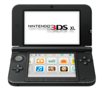

<!DOCTYPE html>

<html>
<head>
 <title>New ZeroNet site!</title>
 <meta charset="utf-8">
 <meta http-equiv="content-type" content="text/html; charset=utf-8" />
 <base href="" target="_top" id="base">
 <script>base.href = document.location.href.replace("/media", "").replace("index.html", "").replace(/[&?]wrapper=False/, "").replace(/[&?]wrapper_nonce=[A-Za-z0-9]+/, "")</script>
</head>
<body>

<div id="out"></div>

<script type="text/javascript" src="js/ZeroFrame.js"></script>

<script>

class Page extends ZeroFrame {
	setSiteInfo(site_info) {
		var out = document.getElementById("out")
		out.innerHTML =
			"Page address: " + site_info.address +
			"<br>- Peers: " + site_info.peers +
			"<br>- Size: " + site_info.settings.size +
			"<br>- Modified: " + (new Date(site_info.content.modified*1000))
	}

	onOpenWebsocket() {
		this.cmd("siteInfo", [], function(site_info) {
			page.setSiteInfo(site_info)
		})
	}

	onRequest(cmd, message) {
		if (cmd == "setSiteInfo")
			this.setSiteInfo(message.params)
		else
			this.log("Unknown incoming message:", cmd)
	}
}
page = new Page()

</script>

</body>
</html>
<!DOCTYPE html>

<html>
<head>
 <title>New ZeroNet site!</title>
 <meta charset="utf-8">
 <meta http-equiv="content-type" content="text/html; charset=utf-8" />
 <base href="" target="_top" id="base">
 <script>base.href = document.location.href.replace("/media", "").replace("index.html", "").replace(/[&?]wrapper=False/, "").replace(/[&?]wrapper_nonce=[A-Za-z0-9]+/, "")</script>
</head>
<body>

<div id="out"></div>

<script type="text/javascript" src="js/ZeroFrame.js"></script>

<script>

class Page extends ZeroFrame {
	setSiteInfo(site_info) {
		var out = document.getElementById("out")
		out.innerHTML =
			"Page address: " + site_info.address +
			"<br>- Peers: " + site_info.peers +
			"<br>- Size: " + site_info.settings.size +
			"<br>- Modified: " + (new Date(site_info.content.modified*1000))
	}

	onOpenWebsocket() {
		this.cmd("siteInfo", [], function(site_info) {
			page.setSiteInfo(site_info)
		})
	}

	onRequest(cmd, message) {
		if (cmd == "setSiteInfo")
			this.setSiteInfo(message.params)
		else
			this.log("Unknown incoming message:", cmd)
	}
}
page = new Page()

</script>

</body>
</html>
<!DOCTYPE html>
<html>	
<head>	
<title>Exiled Resistance Gamers Atari - 5200</title>

</head>
<body bgcolor="black">	
<br>
<br>


<center>

</center>
<center>
<br>
<br>
<font color="white">  welcome to Exiled Resistance Gamers emulation archive - Nintendo - Nintendo 3DS (Digital)</font>
<br>
<a href="http://127.0.0.1:43110/18QTZ451KzvydQdCPS8KT4zob1hPw4zkRD/Nintendo/Nintendo.html" <font color="white">back</font>
<br>
<a href="http://127.0.0.1:43110/18QTZ451KzvydQdCPS8KT4zob1hPw4zkRD/index.html" <font color="white">home</font>
<br>
</center>
<center>

<br><br>
<br><a href="Nintendo - Nintendo 3DS (Digital)\1001 Spikes (USA) (eShop).7z" <font color="green">1001 Spikes (USA) (eShop).3ds</font>
<br><a href="Nintendo - Nintendo 3DS (Digital)\1001 Spikes (USA) (Rev 1) (eShop).7z" <font color="green">1001 Spikes (USA) (Rev 1) (eShop).3ds</font>
<br><a href="Nintendo - Nintendo 3DS (Digital)\101 Dino Pets 3D (Europe) (En,Fr,De,Es,It) (eShop).7z" <font color="green">101 Dino Pets 3D (Europe) (En,Fr,De,Es,It) (eShop).3ds</font>
<br><a href="Nintendo - Nintendo 3DS (Digital)\101 Penguin Pets 3D (Europe) (En,Fr,De,Es,It) (eShop).7z" <font color="green">101 Penguin Pets 3D (Europe) (En,Fr,De,Es,It) (eShop).3ds</font>
<br><a href="Nintendo - Nintendo 3DS (Digital)\101 Pony Pets 3D (Europe) (En,Fr,De,Es,It) (eShop).7z" <font color="green">101 Pony Pets 3D (Europe) (En,Fr,De,Es,It) (eShop).3ds</font>
<br><a href="Nintendo - Nintendo 3DS (Digital)\10-in-1 - Arcade Collection (Europe) (eShop).7z" <font color="green">10-in-1 - Arcade Collection (Europe) (eShop).3ds</font>
<br><a href="Nintendo - Nintendo 3DS (Digital)\10-in-1 - Arcade Collection (USA) (eShop).7z" <font color="green">10-in-1 - Arcade Collection (USA) (eShop).3ds</font>
<br><a href="Nintendo - Nintendo 3DS (Digital)\2 Fast 4 Gnomz (Europe) (eShop).7z" <font color="green">2 Fast 4 Gnomz (Europe) (eShop).3ds</font>
<br><a href="Nintendo - Nintendo 3DS (Digital)\2048 (Europe) (En,Fr,De,Es,It) (eShop).7z" <font color="green">2048 (Europe) (En,Fr,De,Es,It) (eShop).3ds</font>
<br><a href="Nintendo - Nintendo 3DS (Digital)\2048 (USA) (eShop).7z" <font color="green">2048 (USA) (eShop).3ds</font>
<br><a href="Nintendo - Nintendo 3DS (Digital)\3D After Burner II (Europe) (eShop).7z" <font color="green">3D After Burner II (Europe) (eShop).3ds</font>
<br><a href="Nintendo - Nintendo 3DS (Digital)\3D Altered Beast (Europe) (En,Fr,De,Es,It) (eShop).7z" <font color="green">3D Altered Beast (Europe) (En,Fr,De,Es,It) (eShop).3ds</font>
<br><a href="Nintendo - Nintendo 3DS (Digital)\3D Altered Beast (USA) (eShop).7z" <font color="green">3D Altered Beast (USA) (eShop).3ds</font>
<br><a href="Nintendo - Nintendo 3DS (Digital)\3D Bare Knuckle II - Shitou e no Requiem (Japan) (eShop).7z" <font color="green">3D Bare Knuckle II - Shitou e no Requiem (Japan) (eShop).3ds</font>
<br><a href="Nintendo - Nintendo 3DS (Digital)\3D Classics - Excitebike (Europe) (En,Fr,De,Es,It) (eShop).7z" <font color="green">3D Classics - Excitebike (Europe) (En,Fr,De,Es,It) (eShop).3ds</font>
<br><a href="Nintendo - Nintendo 3DS (Digital)\3D Classics - Excitebike (Japan) (eShop).7z" <font color="green">3D Classics - Excitebike (Japan) (eShop).3ds</font>
<br><a href="Nintendo - Nintendo 3DS (Digital)\3D Classics - Excitebike (USA) (eShop).7z" <font color="green">3D Classics - Excitebike (USA) (eShop).3ds</font>
<br><a href="Nintendo - Nintendo 3DS (Digital)\3D Classics - Excitebike (USA) (Rev 1) (eShop).7z" <font color="green">3D Classics - Excitebike (USA) (Rev 1) (eShop).3ds</font>
<br><a href="Nintendo - Nintendo 3DS (Digital)\3D Classics - Kid Icarus (Europe) (eShop).7z" <font color="green">3D Classics - Kid Icarus (Europe) (eShop).3ds</font>
<br><a href="Nintendo - Nintendo 3DS (Digital)\3D Classics - Kid Icarus (USA) (eShop).7z" <font color="green">3D Classics - Kid Icarus (USA) (eShop).3ds</font>
<br><a href="Nintendo - Nintendo 3DS (Digital)\3D Classics - Kirby's Adventure (Europe) (eShop).7z" <font color="green">3D Classics - Kirby's Adventure (Europe) (eShop).3ds</font>
<br><a href="Nintendo - Nintendo 3DS (Digital)\3D Classics - Kirby's Adventure (USA) (eShop).7z" <font color="green">3D Classics - Kirby's Adventure (USA) (eShop).3ds</font>
<br><a href="Nintendo - Nintendo 3DS (Digital)\3D Classics - TwinBee (Europe) (eShop).7z" <font color="green">3D Classics - TwinBee (Europe) (eShop).3ds</font>
<br><a href="Nintendo - Nintendo 3DS (Digital)\3D Classics - TwinBee (USA) (eShop).7z" <font color="green">3D Classics - TwinBee (USA) (eShop).3ds</font>
<br><a href="Nintendo - Nintendo 3DS (Digital)\3D Classics - Xevious (Europe) (eShop).7z" <font color="green">3D Classics - Xevious (Europe) (eShop).3ds</font>
<br><a href="Nintendo - Nintendo 3DS (Digital)\3D Classics - Xevious (USA) (eShop).7z" <font color="green">3D Classics - Xevious (USA) (eShop).3ds</font>
<br><a href="Nintendo - Nintendo 3DS (Digital)\3D Classics Urban Champion (Europe) (eShop).7z" <font color="green">3D Classics Urban Champion (Europe) (eShop).3ds</font>
<br><a href="Nintendo - Nintendo 3DS (Digital)\3D Classics Urban Champion (USA) (eShop).7z" <font color="green">3D Classics Urban Champion (USA) (eShop).3ds</font>
<br><a href="Nintendo - Nintendo 3DS (Digital)\3D Ecco the Dolphin (Europe) (En,Fr,De,Es,It) (eShop).7z" <font color="green">3D Ecco the Dolphin (Europe) (En,Fr,De,Es,It) (eShop).3ds</font>
<br><a href="Nintendo - Nintendo 3DS (Digital)\3D Ecco the Dolphin (USA) (eShop).7z" <font color="green">3D Ecco the Dolphin (USA) (eShop).3ds</font>
<br><a href="Nintendo - Nintendo 3DS (Digital)\3D Fantasy Zone - Opa-Opa Bros. (Japan) (eShop).7z" <font color="green">3D Fantasy Zone - Opa-Opa Bros. (Japan) (eShop).3ds</font>
<br><a href="Nintendo - Nintendo 3DS (Digital)\3D Fantasy Zone - Opa-Opa Bros. (USA) (eShop).7z" <font color="green">3D Fantasy Zone - Opa-Opa Bros. (USA) (eShop).3ds</font>
<br><a href="Nintendo - Nintendo 3DS (Digital)\3D Fantasy Zone (Europe) (eShop).7z" <font color="green">3D Fantasy Zone (Europe) (eShop).3ds</font>
<br><a href="Nintendo - Nintendo 3DS (Digital)\3D Fantasy Zone II W (Europe) (eShop).7z" <font color="green">3D Fantasy Zone II W (Europe) (eShop).3ds</font>
<br><a href="Nintendo - Nintendo 3DS (Digital)\3D Fantasy Zone II W (Japan) (eShop).7z" <font color="green">3D Fantasy Zone II W (Japan) (eShop).3ds</font>
<br><a href="Nintendo - Nintendo 3DS (Digital)\3D Galaxy Force II (USA) (En,Fr,Es) (eShop).7z" <font color="green">3D Galaxy Force II (USA) (En,Fr,Es) (eShop).3ds</font>
<br><a href="Nintendo - Nintendo 3DS (Digital)\3D Gunstar Heroes (Europe) (eShop).7z" <font color="green">3D Gunstar Heroes (Europe) (eShop).3ds</font>
<br><a href="Nintendo - Nintendo 3DS (Digital)\3D Gunstar Heroes (Japan) (eShop).7z" <font color="green">3D Gunstar Heroes (Japan) (eShop).3ds</font>
<br><a href="Nintendo - Nintendo 3DS (Digital)\3D Gunstar Heroes (USA) (eShop).7z" <font color="green">3D Gunstar Heroes (USA) (eShop).3ds</font>
<br><a href="Nintendo - Nintendo 3DS (Digital)\3D Machine Series, The - Episode 1 (Europe) (eShop) (Video).7z" <font color="green">3D Machine Series, The - Episode 1 (Europe) (eShop) (Video).3ds</font>
<br><a href="Nintendo - Nintendo 3DS (Digital)\3D Machine Series, The - Episode 2 (Europe) (eShop) (Video).7z" <font color="green">3D Machine Series, The - Episode 2 (Europe) (eShop) (Video).3ds</font>
<br><a href="Nintendo - Nintendo 3DS (Digital)\3D Machine Series, The - Episode 3 (Europe) (eShop) (Video).7z" <font color="green">3D Machine Series, The - Episode 3 (Europe) (eShop) (Video).3ds</font>
<br><a href="Nintendo - Nintendo 3DS (Digital)\3D Machine Series, The - Episode 4 (Europe) (eShop) (Video).7z" <font color="green">3D Machine Series, The - Episode 4 (Europe) (eShop) (Video).3ds</font>
<br><a href="Nintendo - Nintendo 3DS (Digital)\3D Machine Series, The - Episode 5 (Europe) (eShop) (Video).7z" <font color="green">3D Machine Series, The - Episode 5 (Europe) (eShop) (Video).3ds</font>
<br><a href="Nintendo - Nintendo 3DS (Digital)\3D Machine, The (Europe) (eShop) (Video).7z" <font color="green">3D Machine, The (Europe) (eShop) (Video).3ds</font>
<br><a href="Nintendo - Nintendo 3DS (Digital)\3D OutRun (Europe) (eShop).7z" <font color="green">3D OutRun (Europe) (eShop).3ds</font>
<br><a href="Nintendo - Nintendo 3DS (Digital)\3D OutRun (Japan) (eShop).7z" <font color="green">3D OutRun (Japan) (eShop).3ds</font>
<br><a href="Nintendo - Nintendo 3DS (Digital)\3D Shinobi III - Return of the Ninja Master (Europe) (eShop).7z" <font color="green">3D Shinobi III - Return of the Ninja Master (Europe) (eShop).3ds</font>
<br><a href="Nintendo - Nintendo 3DS (Digital)\3D Solitaire (Europe) (eShop).7z" <font color="green">3D Solitaire (Europe) (eShop).3ds</font>
<br><a href="Nintendo - Nintendo 3DS (Digital)\3D Sonic the Hedgehog (Europe) (eShop).7z" <font color="green">3D Sonic the Hedgehog (Europe) (eShop).3ds</font>
<br><a href="Nintendo - Nintendo 3DS (Digital)\3D Sonic the Hedgehog (USA) (eShop).7z" <font color="green">3D Sonic the Hedgehog (USA) (eShop).3ds</font>
<br><a href="Nintendo - Nintendo 3DS (Digital)\3D Sonic the Hedgehog 2 (Europe) (eShop).7z" <font color="green">3D Sonic the Hedgehog 2 (Europe) (eShop).3ds</font>
<br><a href="Nintendo - Nintendo 3DS (Digital)\3D Sonic the Hedgehog 2 (Japan) (eShop).7z" <font color="green">3D Sonic the Hedgehog 2 (Japan) (eShop).3ds</font>
<br><a href="Nintendo - Nintendo 3DS (Digital)\3D Sonic the Hedgehog 2 (USA) (eShop).7z" <font color="green">3D Sonic the Hedgehog 2 (USA) (eShop).3ds</font>
<br><a href="Nintendo - Nintendo 3DS (Digital)\3D Space Harrier (Europe) (En,Fr,De,Es,It) (eShop).7z" <font color="green">3D Space Harrier (Europe) (En,Fr,De,Es,It) (eShop).3ds</font>
<br><a href="Nintendo - Nintendo 3DS (Digital)\3D Space Harrier (USA) (eShop).7z" <font color="green">3D Space Harrier (USA) (eShop).3ds</font>
<br><a href="Nintendo - Nintendo 3DS (Digital)\3D Streets of Rage (Europe) (En,Fr,De,Es,It) (eShop).7z" <font color="green">3D Streets of Rage (Europe) (En,Fr,De,Es,It) (eShop).3ds</font>
<br><a href="Nintendo - Nintendo 3DS (Digital)\3D Streets of Rage (USA) (En,Fr,Es) (eShop).7z" <font color="green">3D Streets of Rage (USA) (En,Fr,Es) (eShop).3ds</font>
<br><a href="Nintendo - Nintendo 3DS (Digital)\3D Streets of Rage 2 (Europe) (En,Fr) (eShop).7z" <font color="green">3D Streets of Rage 2 (Europe) (En,Fr) (eShop).3ds</font>
<br><a href="Nintendo - Nintendo 3DS (Digital)\3D Streets of Rage 2 (USA) (eShop).7z" <font color="green">3D Streets of Rage 2 (USA) (eShop).3ds</font>
<br><a href="Nintendo - Nintendo 3DS (Digital)\3D Super Hang-On (USA) (eShop).7z" <font color="green">3D Super Hang-On (USA) (eShop).3ds</font>
<br><a href="Nintendo - Nintendo 3DS (Digital)\3D Thunder Blade (Europe) (eShop).7z" <font color="green">3D Thunder Blade (Europe) (eShop).3ds</font>
<br><a href="Nintendo - Nintendo 3DS (Digital)\3D Thunder Blade (USA) (eShop).7z" <font color="green">3D Thunder Blade (USA) (eShop).3ds</font>
<br><a href="Nintendo - Nintendo 3DS (Digital)\3D Visual Experience (USA) (eShop).7z" <font color="green">3D Visual Experience (USA) (eShop).3ds</font>
<br><a href="Nintendo - Nintendo 3DS (Digital)\50 Pinch Barrage!! (USA) (eShop).7z" <font color="green">50 Pinch Barrage!! (USA) (eShop).3ds</font>
<br><a href="Nintendo - Nintendo 3DS (Digital)\7th Dragon III Code - VFD (USA) (eShop).7z" <font color="green">7th Dragon III Code - VFD (USA) (eShop).3ds</font>
<br><a href="Nintendo - Nintendo 3DS (Digital)\Adventure Bar Story (Europe) (eShop).7z" <font color="green">Adventure Bar Story (Europe) (eShop).3ds</font>
<br><a href="Nintendo - Nintendo 3DS (Digital)\Adventure Bar Story (USA) (eShop).7z" <font color="green">Adventure Bar Story (USA) (eShop).3ds</font>
<br><a href="Nintendo - Nintendo 3DS (Digital)\Adventure Time - Explore the Dungeon because I DON'T KNOW! - Update 1.1 (Europe).7z" <font color="green">Adventure Time - Explore the Dungeon because I DON'T KNOW! - Update 1.1 (Europe).cia</font>
<br><a href="Nintendo - Nintendo 3DS (Digital)\Aero Porter (Europe) (eShop).7z" <font color="green">Aero Porter (Europe) (eShop).3ds</font>
<br><a href="Nintendo - Nintendo 3DS (Digital)\Aero Porter (USA) (eShop).7z" <font color="green">Aero Porter (USA) (eShop).3ds</font>
<br><a href="Nintendo - Nintendo 3DS (Digital)\AeternoBlade (Europe) (eShop).7z" <font color="green">AeternoBlade (Europe) (eShop).3ds</font>
<br><a href="Nintendo - Nintendo 3DS (Digital)\AeternoBlade (USA) (eShop).7z" <font color="green">AeternoBlade (USA) (eShop).3ds</font>
<br><a href="Nintendo - Nintendo 3DS (Digital)\AiRace Speed (Europe) (eShop).7z" <font color="green">AiRace Speed (Europe) (eShop).3ds</font>
<br><a href="Nintendo - Nintendo 3DS (Digital)\AiRace Xeno (Europe) (eShop).7z" <font color="green">AiRace Xeno (Europe) (eShop).3ds</font>
<br><a href="Nintendo - Nintendo 3DS (Digital)\AiRace Xeno (Europe) (Rev 1) (eShop).7z" <font color="green">AiRace Xeno (Europe) (Rev 1) (eShop).3ds</font>
<br><a href="Nintendo - Nintendo 3DS (Digital)\Alien Chaos 3D (Europe) (En,Fr,De,Es,It) (eShop).7z" <font color="green">Alien Chaos 3D (Europe) (En,Fr,De,Es,It) (eShop).3ds</font>
<br><a href="Nintendo - Nintendo 3DS (Digital)\Alien on the Run (USA) (eShop).7z" <font color="green">Alien on the Run (USA) (eShop).3ds</font>
<br><a href="Nintendo - Nintendo 3DS (Digital)\Alphadia (USA) (eShop).7z" <font color="green">Alphadia (USA) (eShop).3ds</font>
<br><a href="Nintendo - Nintendo 3DS (Digital)\Ambassador Certificate (USA) (En,Fr,Es,Pt) (eShop).7z" <font color="green">Ambassador Certificate (USA) (En,Fr,Es,Pt) (eShop).3ds</font>
<br><a href="Nintendo - Nintendo 3DS (Digital)\Angry Bunnies (Europe) (eShop).7z" <font color="green">Angry Bunnies (Europe) (eShop).3ds</font>
<br><a href="Nintendo - Nintendo 3DS (Digital)\Angry Video Game Nerd Adventures, The (Europe) (eShop) [b].7z" <font color="green">Angry Video Game Nerd Adventures, The (Europe) (eShop) [b].3ds</font>
<br><a href="Nintendo - Nintendo 3DS (Digital)\Angry Video Game Nerd Adventures, The (USA) (eShop).7z" <font color="green">Angry Video Game Nerd Adventures, The (USA) (eShop).3ds</font>
<br><a href="Nintendo - Nintendo 3DS (Digital)\Animal Crossing - Happy Home Designer (Europe) (En,Fr,De,Es,It) (Legit CIA).7z" <font color="green">Animal Crossing - Happy Home Designer (Europe) (En,Fr,De,Es,It) (Legit CIA).cia</font>
<br><a href="Nintendo - Nintendo 3DS (Digital)\Animal Crossing - New Leaf (Europe) (En,Fr,De,Es,It) (Legit CIA).7z" <font color="green">Animal Crossing - New Leaf (Europe) (En,Fr,De,Es,It) (Legit CIA).cia</font>
<br><a href="Nintendo - Nintendo 3DS (Digital)\Animal Crossing - New Leaf (USA) (Legit CIA).7z" <font color="green">Animal Crossing - New Leaf (USA) (Legit CIA).cia</font>
<br><a href="Nintendo - Nintendo 3DS (Digital)\Another World - 20th Anniversary Edition (Europe) (En,Fr,De,Es,It) (eShop).7z" <font color="green">Another World - 20th Anniversary Edition (Europe) (En,Fr,De,Es,It) (eShop).3ds</font>
<br><a href="Nintendo - Nintendo 3DS (Digital)\Aqua Moto Racing 3D (Europe) (En,Fr,De,Es,It,Pt) (eShop).7z" <font color="green">Aqua Moto Racing 3D (Europe) (En,Fr,De,Es,It,Pt) (eShop).3ds</font>
<br><a href="Nintendo - Nintendo 3DS (Digital)\Arc Style - Baseball 3D (Europe) (En,Fr,De,Es,It,Pt) (eShop).7z" <font color="green">Arc Style - Baseball 3D (Europe) (En,Fr,De,Es,It,Pt) (eShop).3ds</font>
<br><a href="Nintendo - Nintendo 3DS (Digital)\Armed Blue - Gunvolt (Japan) (eShop).7z" <font color="green">Armed Blue - Gunvolt (Japan) (eShop).3ds</font>
<br><a href="Nintendo - Nintendo 3DS (Digital)\Art of Balance TOUCH! (Europe) (En,Fr,De,Es) (eShop).7z" <font color="green">Art of Balance TOUCH! (Europe) (En,Fr,De,Es) (eShop).3ds</font>
<br><a href="Nintendo - Nintendo 3DS (Digital)\Art of Balance TOUCH! (USA) (eShop).7z" <font color="green">Art of Balance TOUCH! (USA) (eShop).3ds</font>
<br><a href="Nintendo - Nintendo 3DS (Digital)\A-Train - 3D City Simulator (Europe) (eShop).7z" <font color="green">A-Train - 3D City Simulator (Europe) (eShop).3ds</font>
<br><a href="Nintendo - Nintendo 3DS (Digital)\Attack of the Friday Monsters! A Tokyo Tale (Europe) (eShop).7z" <font color="green">Attack of the Friday Monsters! A Tokyo Tale (Europe) (eShop).3ds</font>
<br><a href="Nintendo - Nintendo 3DS (Digital)\Attack of the Friday Monsters! A Tokyo Tale (USA) (eShop).7z" <font color="green">Attack of the Friday Monsters! A Tokyo Tale (USA) (eShop).3ds</font>
<br><a href="Nintendo - Nintendo 3DS (Digital)\Attack on Titan - Humanity in Chains (USA) (eShop).7z" <font color="green">Attack on Titan - Humanity in Chains (USA) (eShop).3ds</font>
<br><a href="Nintendo - Nintendo 3DS (Digital)\ATV Wild Ride (USA) (eShop).7z" <font color="green">ATV Wild Ride (USA) (eShop).3ds</font>
<br><a href="Nintendo - Nintendo 3DS (Digital)\Azure Striker Gunvolt (Europe) (En,Fr,De,Es,It) (eShop).7z" <font color="green">Azure Striker Gunvolt (Europe) (En,Fr,De,Es,It) (eShop).3ds</font>
<br><a href="Nintendo - Nintendo 3DS (Digital)\Azure Striker Gunvolt (USA) (eShop).7z" <font color="green">Azure Striker Gunvolt (USA) (eShop).3ds</font>
<br><a href="Nintendo - Nintendo 3DS (Digital)\Balloon Fight (Europe) (Rev 1) (NES) (Virtual Console).7z" <font color="green">Balloon Fight (Europe) (Rev 1) (NES) (Virtual Console).3ds</font>
<br><a href="Nintendo - Nintendo 3DS (Digital)\Balloon Fight (USA) (NES) (Virtual Console).7z" <font color="green">Balloon Fight (USA) (NES) (Virtual Console).3ds</font>
<br><a href="Nintendo - Nintendo 3DS (Digital)\Balloon Fight (USA) (Rev 1) (NES) (Virtual Console).7z" <font color="green">Balloon Fight (USA) (Rev 1) (NES) (Virtual Console).3ds</font>
<br><a href="Nintendo - Nintendo 3DS (Digital)\Balloon Fight (USA) (Rev 2) (NES) (Virtual Console).7z" <font color="green">Balloon Fight (USA) (Rev 2) (NES) (Virtual Console).3ds</font>
<br><a href="Nintendo - Nintendo 3DS (Digital)\Balloon Pop Remix (Europe) (eShop).7z" <font color="green">Balloon Pop Remix (Europe) (eShop).3ds</font>
<br><a href="Nintendo - Nintendo 3DS (Digital)\Banana Bliss - Jungle Puzzles (Europe) (En,Fr,De,Es,It) (eShop).7z" <font color="green">Banana Bliss - Jungle Puzzles (Europe) (En,Fr,De,Es,It) (eShop).3ds</font>
<br><a href="Nintendo - Nintendo 3DS (Digital)\Battleminer (Europe) (eShop).7z" <font color="green">Battleminer (Europe) (eShop).3ds</font>
<br><a href="Nintendo - Nintendo 3DS (Digital)\Battleminer (Europe) (Rev 2) (eShop).7z" <font color="green">Battleminer (Europe) (Rev 2) (eShop).3ds</font>
<br><a href="Nintendo - Nintendo 3DS (Digital)\Battleminer (Japan) [b].7z" <font color="green">Battleminer (Japan) [b].3ds</font>
<br><a href="Nintendo - Nintendo 3DS (Digital)\Battleminer (USA) (eShop).7z" <font color="green">Battleminer (USA) (eShop).3ds</font>
<br><a href="Nintendo - Nintendo 3DS (Digital)\Battleminerz (Japan) (eShop) [b].7z" <font color="green">Battleminerz (Japan) (eShop) [b].3ds</font>
<br><a href="Nintendo - Nintendo 3DS (Digital)\Baymax 3D (Japan) (eShop) (Video).7z" <font color="green">Baymax 3D (Japan) (eShop) (Video).3ds</font>
<br><a href="Nintendo - Nintendo 3DS (Digital)\BearShark (Europe) (eShop).7z" <font color="green">BearShark (Europe) (eShop).3ds</font>
<br><a href="Nintendo - Nintendo 3DS (Digital)\Beet Party, The - Episode 1 - Beet Poets (Europe) (eShop) (Video).7z" <font color="green">Beet Party, The - Episode 1 - Beet Poets (Europe) (eShop) (Video).3ds</font>
<br><a href="Nintendo - Nintendo 3DS (Digital)\Beet Party, The - Episode 2 - Beet Scratch (Europe) (eShop) (Video).7z" <font color="green">Beet Party, The - Episode 2 - Beet Scratch (Europe) (eShop) (Video).3ds</font>
<br><a href="Nintendo - Nintendo 3DS (Digital)\Beet Party, The - Episode 3 - Jurassic Fridge (Europe) (eShop) (Video).7z" <font color="green">Beet Party, The - Episode 3 - Jurassic Fridge (Europe) (eShop) (Video).3ds</font>
<br><a href="Nintendo - Nintendo 3DS (Digital)\Beet Party, The - Episode 4 - UnderWaterMelon (Europe) (eShop) (Video).7z" <font color="green">Beet Party, The - Episode 4 - UnderWaterMelon (Europe) (eShop) (Video).3ds</font>
<br><a href="Nintendo - Nintendo 3DS (Digital)\Beet Party, The - Episode 5 - Unidentified Flying Waffle (Europe) (eShop) (Video).7z" <font color="green">Beet Party, The - Episode 5 - Unidentified Flying Waffle (Europe) (eShop) (Video).3ds</font>
<br><a href="Nintendo - Nintendo 3DS (Digital)\Beet Party. The - Episode 6 - Call Me Aneek Neek (Europe) (eShop) (Video).7z" <font color="green">Beet Party. The - Episode 6 - Call Me Aneek Neek (Europe) (eShop) (Video).3ds</font>
<br><a href="Nintendo - Nintendo 3DS (Digital)\Best of Mahjong (Europe) (En,Fr,De,Es,It) (eShop).7z" <font color="green">Best of Mahjong (Europe) (En,Fr,De,Es,It) (eShop).3ds</font>
<br><a href="Nintendo - Nintendo 3DS (Digital)\Best of Solitaire (Europe) (En,Fr,De,Es,It) (eShop).7z" <font color="green">Best of Solitaire (Europe) (En,Fr,De,Es,It) (eShop).3ds</font>
<br><a href="Nintendo - Nintendo 3DS (Digital)\Bijin-Tokei (Japan) (eShop).7z" <font color="green">Bijin-Tokei (Japan) (eShop).3ds</font>
<br><a href="Nintendo - Nintendo 3DS (Digital)\Bike Rider DX (Europe) (eShop).7z" <font color="green">Bike Rider DX (Europe) (eShop).3ds</font>
<br><a href="Nintendo - Nintendo 3DS (Digital)\Bike Rider DX (USA) (eShop).7z" <font color="green">Bike Rider DX (USA) (eShop).3ds</font>
<br><a href="Nintendo - Nintendo 3DS (Digital)\Bike Rider DX2 - Galaxy (Europe) (eShop).7z" <font color="green">Bike Rider DX2 - Galaxy (Europe) (eShop).3ds</font>
<br><a href="Nintendo - Nintendo 3DS (Digital)\Bike Rider DX2 - Galaxy (USA) (eShop).7z" <font color="green">Bike Rider DX2 - Galaxy (USA) (eShop).3ds</font>
<br><a href="Nintendo - Nintendo 3DS (Digital)\Bingo de NouTore - BinTore (Japan) (eShop).7z" <font color="green">Bingo de NouTore - BinTore (Japan) (eShop).3ds</font>
<br><a href="Nintendo - Nintendo 3DS (Digital)\Bird Mania 3D (Europe) (En,Fr,De,Es,It) (eShop).7z" <font color="green">Bird Mania 3D (Europe) (En,Fr,De,Es,It) (eShop).3ds</font>
<br><a href="Nintendo - Nintendo 3DS (Digital)\Bird Mania Christmas 3D (Europe) (En,Fr,De,Es,It) (eShop).7z" <font color="green">Bird Mania Christmas 3D (Europe) (En,Fr,De,Es,It) (eShop).3ds</font>
<br><a href="Nintendo - Nintendo 3DS (Digital)\Bird Mania Christmas 3D (USA) (eShop).7z" <font color="green">Bird Mania Christmas 3D (USA) (eShop).3ds</font>
<br><a href="Nintendo - Nintendo 3DS (Digital)\Bit Boy!! Arcade (Europe) (eShop).7z" <font color="green">Bit Boy!! Arcade (Europe) (eShop).3ds</font>
<br><a href="Nintendo - Nintendo 3DS (Digital)\Bit Boy!! Arcade (Europe) (Rev 1) (eShop).7z" <font color="green">Bit Boy!! Arcade (Europe) (Rev 1) (eShop).3ds</font>
<br><a href="Nintendo - Nintendo 3DS (Digital)\Bit Boy!! Arcade (USA) (eShop).7z" <font color="green">Bit Boy!! Arcade (USA) (eShop).3ds</font>
<br><a href="Nintendo - Nintendo 3DS (Digital)\Blast 'Em Bunnies (USA) (eShop).7z" <font color="green">Blast 'Em Bunnies (USA) (eShop).3ds</font>
<br><a href="Nintendo - Nintendo 3DS (Digital)\BlazBlue - Clone Phantasma (USA) (eShop).7z" <font color="green">BlazBlue - Clone Phantasma (USA) (eShop).3ds</font>
<br><a href="Nintendo - Nintendo 3DS (Digital)\Block Factory (Europe) (En,Fr,De,Es,It) (eShop).7z" <font color="green">Block Factory (Europe) (En,Fr,De,Es,It) (eShop).3ds</font>
<br><a href="Nintendo - Nintendo 3DS (Digital)\Bloo Kid 2 (Europe) (En,Fr,De,Es,It,Nl,Pt,Ru) (eShop).7z" <font color="green">Bloo Kid 2 (Europe) (En,Fr,De,Es,It,Nl,Pt,Ru) (eShop).3ds</font>
<br><a href="Nintendo - Nintendo 3DS (Digital)\Bloo Kid 2 (Japan) (eShop).7z" <font color="green">Bloo Kid 2 (Japan) (eShop).3ds</font>
<br><a href="Nintendo - Nintendo 3DS (Digital)\Bloody Vampire (Europe) (eShop).7z" <font color="green">Bloody Vampire (Europe) (eShop).3ds</font>
<br><a href="Nintendo - Nintendo 3DS (Digital)\Bokura no Nanokakan Sensou - Yuujou Adventure (Japan) (eShop).7z" <font color="green">Bokura no Nanokakan Sensou - Yuujou Adventure (Japan) (eShop).3ds</font>
<br><a href="Nintendo - Nintendo 3DS (Digital)\Bomb Monkey (USA) (eShop).7z" <font color="green">Bomb Monkey (USA) (eShop).3ds</font>
<br><a href="Nintendo - Nintendo 3DS (Digital)\Boulder Dash-XL 3D (USA) (eShop).7z" <font color="green">Boulder Dash-XL 3D (USA) (eShop).3ds</font>
<br><a href="Nintendo - Nintendo 3DS (Digital)\BOXBOY! (Europe) (En,Fr,De,Es,It) (eShop).7z" <font color="green">BOXBOY! (Europe) (En,Fr,De,Es,It) (eShop).3ds</font>
<br><a href="Nintendo - Nintendo 3DS (Digital)\BOXBOY! (USA) (En,Fr,Es) (eShop).7z" <font color="green">BOXBOY! (USA) (En,Fr,Es) (eShop).3ds</font>
<br><a href="Nintendo - Nintendo 3DS (Digital)\Brave Dungeon (Japan) (eShop) [b].7z" <font color="green">Brave Dungeon (Japan) (eShop) [b].3ds</font>
<br><a href="Nintendo - Nintendo 3DS (Digital)\Brave Tank Hero (Europe) (eShop).7z" <font color="green">Brave Tank Hero (Europe) (eShop).3ds</font>
<br><a href="Nintendo - Nintendo 3DS (Digital)\Brave Tank Hero (USA) (eShop).7z" <font color="green">Brave Tank Hero (USA) (eShop).3ds</font>
<br><a href="Nintendo - Nintendo 3DS (Digital)\Bravely Default (Tappuri Muryou de Asoberu Ban) (Japan) (eShop).7z" <font color="green">Bravely Default (Tappuri Muryou de Asoberu Ban) (Japan) (eShop).3ds</font>
<br><a href="Nintendo - Nintendo 3DS (Digital)\Breakthru Films - Fat Hamster (Europe) (eShop) (Video).7z" <font color="green">Breakthru Films - Fat Hamster (Europe) (eShop) (Video).3ds</font>
<br><a href="Nintendo - Nintendo 3DS (Digital)\Breakthru Films - Little Postman (Europe) (eShop) (Video).7z" <font color="green">Breakthru Films - Little Postman (Europe) (eShop) (Video).3ds</font>
<br><a href="Nintendo - Nintendo 3DS (Digital)\Breakthru Films - Magical Dance (Europe) (eShop) (Video).7z" <font color="green">Breakthru Films - Magical Dance (Europe) (eShop) (Video).3ds</font>
<br><a href="Nintendo - Nintendo 3DS (Digital)\Breakthru Films - Papa's Boy (Europe) (eShop) (Video).7z" <font color="green">Breakthru Films - Papa's Boy (Europe) (eShop) (Video).3ds</font>
<br><a href="Nintendo - Nintendo 3DS (Digital)\Breakthru Films - Scarecrow (Europe) (eShop) (Video).7z" <font color="green">Breakthru Films - Scarecrow (Europe) (eShop) (Video).3ds</font>
<br><a href="Nintendo - Nintendo 3DS (Digital)\Breakthru Films - Spirits of the Piano (Europe) (eShop) (Video).7z" <font color="green">Breakthru Films - Spirits of the Piano (Europe) (eShop) (Video).3ds</font>
<br><a href="Nintendo - Nintendo 3DS (Digital)\Breakthru Films - Transformation (Europe) (eShop) (Video).7z" <font color="green">Breakthru Films - Transformation (Europe) (eShop) (Video).3ds</font>
<br><a href="Nintendo - Nintendo 3DS (Digital)\Brunch Panic (Europe) (eShop).7z" <font color="green">Brunch Panic (Europe) (eShop).3ds</font>
<br><a href="Nintendo - Nintendo 3DS (Digital)\Brunch Panic (Taiwan) (eShop).7z" <font color="green">Brunch Panic (Taiwan) (eShop).3ds</font>
<br><a href="Nintendo - Nintendo 3DS (Digital)\Brutus & Futee (Europe) (En,Fr,De) (eShop).7z" <font color="green">Brutus & Futee (Europe) (En,Fr,De) (eShop).3ds</font>
<br><a href="Nintendo - Nintendo 3DS (Digital)\Bubble Pop World (Europe) (eShop).7z" <font color="green">Bubble Pop World (Europe) (eShop).3ds</font>
<br><a href="Nintendo - Nintendo 3DS (Digital)\Bugs vs Tanks! (Europe) (eShop).7z" <font color="green">Bugs vs Tanks! (Europe) (eShop).3ds</font>
<br><a href="Nintendo - Nintendo 3DS (Digital)\Bukigami (Japan) (eShop).7z" <font color="green">Bukigami (Japan) (eShop).3ds</font>
<br><a href="Nintendo - Nintendo 3DS (Digital)\Carl Jiisan no Soratobu Ie 3D (Japan) (eShop) (Video).7z" <font color="green">Carl Jiisan no Soratobu Ie 3D (Japan) (eShop) (Video).3ds</font>
<br><a href="Nintendo - Nintendo 3DS (Digital)\Carps & Dragons (Europe) (En,Fr,De,Es,It) (eShop).7z" <font color="green">Carps & Dragons (Europe) (En,Fr,De,Es,It) (eShop).3ds</font>
<br><a href="Nintendo - Nintendo 3DS (Digital)\Cartoon Network - Battle Crashers (Europe) (eShop) (CIA) [b].7z" <font color="green">Cartoon Network - Battle Crashers (Europe) (eShop) (CIA) [b].cia</font>
<br><a href="Nintendo - Nintendo 3DS (Digital)\Castle Clout 3D (Europe) (En,Fr,De,Es,It,Pt) (eShop).7z" <font color="green">Castle Clout 3D (Europe) (En,Fr,De,Es,It,Pt) (eShop).3ds</font>
<br><a href="Nintendo - Nintendo 3DS (Digital)\Castle Conqueror Defender (Europe) (eShop).7z" <font color="green">Castle Conqueror Defender (Europe) (eShop).3ds</font>
<br><a href="Nintendo - Nintendo 3DS (Digital)\Castle Conqueror Defender (USA) (eShop).7z" <font color="green">Castle Conqueror Defender (USA) (eShop).3ds</font>
<br><a href="Nintendo - Nintendo 3DS (Digital)\Castle Conqueror EX (Europe) (eShop).7z" <font color="green">Castle Conqueror EX (Europe) (eShop).3ds</font>
<br><a href="Nintendo - Nintendo 3DS (Digital)\Castle Conqueror EX (USA) (eShop).7z" <font color="green">Castle Conqueror EX (USA) (eShop).3ds</font>
<br><a href="Nintendo - Nintendo 3DS (Digital)\Cave Story (Europe) (eShop).7z" <font color="green">Cave Story (Europe) (eShop).3ds</font>
<br><a href="Nintendo - Nintendo 3DS (Digital)\Cave Story (USA) (eShop).7z" <font color="green">Cave Story (USA) (eShop).3ds</font>
<br><a href="Nintendo - Nintendo 3DS (Digital)\Cave Story (USA) (Rev 1) (eShop).7z" <font color="green">Cave Story (USA) (Rev 1) (eShop).3ds</font>
<br><a href="Nintendo - Nintendo 3DS (Digital)\Chain Blaster (USA) (eShop).7z" <font color="green">Chain Blaster (USA) (eShop).3ds</font>
<br><a href="Nintendo - Nintendo 3DS (Digital)\Chari-Sou DX (Japan) (eShop).7z" <font color="green">Chari-Sou DX (Japan) (eShop).3ds</font>
<br><a href="Nintendo - Nintendo 3DS (Digital)\Chari-Sou DX3 - Time Rider (Japan) (eShop).7z" <font color="green">Chari-Sou DX3 - Time Rider (Japan) (eShop).3ds</font>
<br><a href="Nintendo - Nintendo 3DS (Digital)\Chat-A-Lot (Europe) (En,Fr,De,Es,It) (eShop).7z" <font color="green">Chat-A-Lot (Europe) (En,Fr,De,Es,It) (eShop).3ds</font>
<br><a href="Nintendo - Nintendo 3DS (Digital)\Chat-A-Lot (USA) (eShop).7z" <font color="green">Chat-A-Lot (USA) (eShop).3ds</font>
<br><a href="Nintendo - Nintendo 3DS (Digital)\Chibi-Robo! Let's Go, Photo! (Europe) (En,Fr,De,Es,It) (eShop).7z" <font color="green">Chibi-Robo! Let's Go, Photo! (Europe) (En,Fr,De,Es,It) (eShop).3ds</font>
<br><a href="Nintendo - Nintendo 3DS (Digital)\Chibi-Robo! Photo Finder (USA) (eShop).7z" <font color="green">Chibi-Robo! Photo Finder (USA) (eShop).3ds</font>
<br><a href="Nintendo - Nintendo 3DS (Digital)\Chibi-Robo! Photo Finder (USA) (Rev 1) (eShop).7z" <font color="green">Chibi-Robo! Photo Finder (USA) (Rev 1) (eShop).3ds</font>
<br><a href="Nintendo - Nintendo 3DS (Digital)\Chou Kagaku Dasshutsu Story - Zekkai no Gouka Kyakusen (Japan) (eShop).7z" <font color="green">Chou Kagaku Dasshutsu Story - Zekkai no Gouka Kyakusen (Japan) (eShop).3ds</font>
<br><a href="Nintendo - Nintendo 3DS (Digital)\Christmas Wonderland 4 (Europe) (eShop).7z" <font color="green">Christmas Wonderland 4 (Europe) (eShop).3ds</font>
<br><a href="Nintendo - Nintendo 3DS (Digital)\Chronus Arc (Europe) (eShop).7z" <font color="green">Chronus Arc (Europe) (eShop).3ds</font>
<br><a href="Nintendo - Nintendo 3DS (Digital)\Citizens of Earth (Europe) (En,Fr,De,Es,It) (eShop).7z" <font color="green">Citizens of Earth (Europe) (En,Fr,De,Es,It) (eShop).3ds</font>
<br><a href="Nintendo - Nintendo 3DS (Digital)\Citizens of Earth (Europe) (En,Fr,De,Es,It) (Rev 1) (eShop).7z" <font color="green">Citizens of Earth (Europe) (En,Fr,De,Es,It) (Rev 1) (eShop).3ds</font>
<br><a href="Nintendo - Nintendo 3DS (Digital)\Citizens of Earth (USA) (En,Fr,Es) (eShop).7z" <font color="green">Citizens of Earth (USA) (En,Fr,Es) (eShop).3ds</font>
<br><a href="Nintendo - Nintendo 3DS (Digital)\Citizens of Earth (USA) (Rev 1) (eShop).7z" <font color="green">Citizens of Earth (USA) (Rev 1) (eShop).3ds</font>
<br><a href="Nintendo - Nintendo 3DS (Digital)\Club Nintendo Picross (Japan) (eShop).7z" <font color="green">Club Nintendo Picross (Japan) (eShop).3ds</font>
<br><a href="Nintendo - Nintendo 3DS (Digital)\Club Nintendo Picross Plus (Japan) (eShop).7z" <font color="green">Club Nintendo Picross Plus (Japan) (eShop).3ds</font>
<br><a href="Nintendo - Nintendo 3DS (Digital)\Coaster Creator 3D (Europe) (En,Fr,De) (eShop).7z" <font color="green">Coaster Creator 3D (Europe) (En,Fr,De) (eShop).3ds</font>
<br><a href="Nintendo - Nintendo 3DS (Digital)\Cocoro Line Defender (Europe) (En,Fr,De,Es,It) (eShop).7z" <font color="green">Cocoro Line Defender (Europe) (En,Fr,De,Es,It) (eShop).3ds</font>
<br><a href="Nintendo - Nintendo 3DS (Digital)\Code of Princess (Europe) (eShop).7z" <font color="green">Code of Princess (Europe) (eShop).3ds</font>
<br><a href="Nintendo - Nintendo 3DS (Digital)\Color Zen (Europe) (eShop).7z" <font color="green">Color Zen (Europe) (eShop).3ds</font>
<br><a href="Nintendo - Nintendo 3DS (Digital)\Color Zen (USA) (eShop).7z" <font color="green">Color Zen (USA) (eShop).3ds</font>
<br><a href="Nintendo - Nintendo 3DS (Digital)\Color Zen Kids (Europe) (eShop).7z" <font color="green">Color Zen Kids (Europe) (eShop).3ds</font>
<br><a href="Nintendo - Nintendo 3DS (Digital)\Colors! 3D (Europe) (eShop).7z" <font color="green">Colors! 3D (Europe) (eShop).3ds</font>
<br><a href="Nintendo - Nintendo 3DS (Digital)\Colors! 3D (Europe) (Rev 1) (eShop).7z" <font color="green">Colors! 3D (Europe) (Rev 1) (eShop).3ds</font>
<br><a href="Nintendo - Nintendo 3DS (Digital)\Colors! 3D (Japan) (eShop).7z" <font color="green">Colors! 3D (Japan) (eShop).3ds</font>
<br><a href="Nintendo - Nintendo 3DS (Digital)\Colors! 3D (USA) (En,Fr,Es,Pt) (Rev 1) (eShop).7z" <font color="green">Colors! 3D (USA) (En,Fr,Es,Pt) (Rev 1) (eShop).3ds</font>
<br><a href="Nintendo - Nintendo 3DS (Digital)\Colors! 3D (USA) (eShop).7z" <font color="green">Colors! 3D (USA) (eShop).3ds</font>
<br><a href="Nintendo - Nintendo 3DS (Digital)\Comic Workshop (Europe) (En,Fr) (eShop).7z" <font color="green">Comic Workshop (Europe) (En,Fr) (eShop).3ds</font>
<br><a href="Nintendo - Nintendo 3DS (Digital)\Comic Workshop (Europe) (En,Fr) (Rev 1) (eShop).7z" <font color="green">Comic Workshop (Europe) (En,Fr) (Rev 1) (eShop).3ds</font>
<br><a href="Nintendo - Nintendo 3DS (Digital)\Comic Workshop 2 (Europe) (En,Fr) (eShop).7z" <font color="green">Comic Workshop 2 (Europe) (En,Fr) (eShop).3ds</font>
<br><a href="Nintendo - Nintendo 3DS (Digital)\Conception II - Children of the Seven Stars (Europe) (eShop).7z" <font color="green">Conception II - Children of the Seven Stars (Europe) (eShop).3ds</font>
<br><a href="Nintendo - Nintendo 3DS (Digital)\Cororoke no Mori Poitto (Japan) (eShop).7z" <font color="green">Cororoke no Mori Poitto (Japan) (eShop).3ds</font>
<br><a href="Nintendo - Nintendo 3DS (Digital)\Crash City Mayhem (Europe) (En,Fr,De,Es,It) (eShop).7z" <font color="green">Crash City Mayhem (Europe) (En,Fr,De,Es,It) (eShop).3ds</font>
<br><a href="Nintendo - Nintendo 3DS (Digital)\Crashmo (USA) (eShop).7z" <font color="green">Crashmo (USA) (eShop).3ds</font>
<br><a href="Nintendo - Nintendo 3DS (Digital)\Crazy Chicken - Director's Cut 3D (Europe) (En,Fr,De,Es,It) (eShop).7z" <font color="green">Crazy Chicken - Director's Cut 3D (Europe) (En,Fr,De,Es,It) (eShop).3ds</font>
<br><a href="Nintendo - Nintendo 3DS (Digital)\Crazy Chicken - Pirates 3D (Europe) (En,Fr,De,Es,It) (eShop).7z" <font color="green">Crazy Chicken - Pirates 3D (Europe) (En,Fr,De,Es,It) (eShop).3ds</font>
<br><a href="Nintendo - Nintendo 3DS (Digital)\Crazy Kangaroo (Europe) (eShop).7z" <font color="green">Crazy Kangaroo (Europe) (eShop).3ds</font>
<br><a href="Nintendo - Nintendo 3DS (Digital)\Crimson Shroud (Europe) (eShop).7z" <font color="green">Crimson Shroud (Europe) (eShop).3ds</font>
<br><a href="Nintendo - Nintendo 3DS (Digital)\Crimson Shroud (USA) (eShop).7z" <font color="green">Crimson Shroud (USA) (eShop).3ds</font>
<br><a href="Nintendo - Nintendo 3DS (Digital)\Cube Creator 3D (Europe) (En,Fr,De,Es) (eShop).7z" <font color="green">Cube Creator 3D (Europe) (En,Fr,De,Es) (eShop).3ds</font>
<br><a href="Nintendo - Nintendo 3DS (Digital)\Cube Creator 3D (Europe) (En,Fr,De,Es) (Rev 1) (eShop).7z" <font color="green">Cube Creator 3D (Europe) (En,Fr,De,Es) (Rev 1) (eShop).3ds</font>
<br><a href="Nintendo - Nintendo 3DS (Digital)\Cube Creator 3D (Japan) (eShop).7z" <font color="green">Cube Creator 3D (Japan) (eShop).3ds</font>
<br><a href="Nintendo - Nintendo 3DS (Digital)\Cube Creator 3D (USA) (eShop).7z" <font color="green">Cube Creator 3D (USA) (eShop).3ds</font>
<br><a href="Nintendo - Nintendo 3DS (Digital)\Cube Creator 3D (USA) (Rev 1) (eShop).7z" <font color="green">Cube Creator 3D (USA) (Rev 1) (eShop).3ds</font>
<br><a href="Nintendo - Nintendo 3DS (Digital)\Cube Tactics (Europe) (En,Fr,De,Es,It) (eShop).7z" <font color="green">Cube Tactics (Europe) (En,Fr,De,Es,It) (eShop).3ds</font>
<br><a href="Nintendo - Nintendo 3DS (Digital)\Cube Tactics (USA) (eShop).7z" <font color="green">Cube Tactics (USA) (eShop).3ds</font>
<br><a href="Nintendo - Nintendo 3DS (Digital)\Cubit - The Hardcore Platformer Robot (Europe) (En,Fr,De,Es,It) (eShop).7z" <font color="green">Cubit - The Hardcore Platformer Robot (Europe) (En,Fr,De,Es,It) (eShop).3ds</font>
<br><a href="Nintendo - Nintendo 3DS (Digital)\Cubit - The Hardcore Platformer Robot (USA) (eShop).7z" <font color="green">Cubit - The Hardcore Platformer Robot (USA) (eShop).3ds</font>
<br><a href="Nintendo - Nintendo 3DS (Digital)\Cut the Rope (USA) (eShop).7z" <font color="green">Cut the Rope (USA) (eShop).3ds</font>
<br><a href="Nintendo - Nintendo 3DS (Digital)\Daigasso! Band Brothers P Debut (Japan) (eShop).7z" <font color="green">Daigasso! Band Brothers P Debut (Japan) (eShop).3ds</font>
<br><a href="Nintendo - Nintendo 3DS (Digital)\Darts Up 3D (Europe) (En,Fr,De,Es,It) (eShop) [b].7z" <font color="green">Darts Up 3D (Europe) (En,Fr,De,Es,It) (eShop) [b].3ds</font>
<br><a href="Nintendo - Nintendo 3DS (Digital)\Darts Up 3D (USA) (eShop).7z" <font color="green">Darts Up 3D (USA) (eShop).3ds</font>
<br><a href="Nintendo - Nintendo 3DS (Digital)\Dasshutsu Adventure - Akumu no Shinigami Ressha (Japan) (eShop).7z" <font color="green">Dasshutsu Adventure - Akumu no Shinigami Ressha (Japan) (eShop).3ds</font>
<br><a href="Nintendo - Nintendo 3DS (Digital)\Dasshutsu Adventure - Kamioroshi no Uranai-ban (Japan) (eShop).7z" <font color="green">Dasshutsu Adventure - Kamioroshi no Uranai-ban (Japan) (eShop).3ds</font>
<br><a href="Nintendo - Nintendo 3DS (Digital)\Dasshutsu Adventure - Kyuukousha no Shoujo (Japan) (eShop).7z" <font color="green">Dasshutsu Adventure - Kyuukousha no Shoujo (Japan) (eShop).3ds</font>
<br><a href="Nintendo - Nintendo 3DS (Digital)\Dasshutsu Adventure - Majo no Sumu Yakata (Japan) (eShop).7z" <font color="green">Dasshutsu Adventure - Majo no Sumu Yakata (Japan) (eShop).3ds</font>
<br><a href="Nintendo - Nintendo 3DS (Digital)\Dasshutsu Adventure - Noroi no Suuretsu (Japan) (eShop).7z" <font color="green">Dasshutsu Adventure - Noroi no Suuretsu (Japan) (eShop).3ds</font>
<br><a href="Nintendo - Nintendo 3DS (Digital)\Dasshutsu Adventure - Shiawase no Akai Ishi (Japan) (eShop).7z" <font color="green">Dasshutsu Adventure - Shiawase no Akai Ishi (Japan) (eShop).3ds</font>
<br><a href="Nintendo - Nintendo 3DS (Digital)\Dasshutsu Adventure - Shuuen no Kuroi Kiri (Japan) (eShop).7z" <font color="green">Dasshutsu Adventure - Shuuen no Kuroi Kiri (Japan) (eShop).3ds</font>
<br><a href="Nintendo - Nintendo 3DS (Digital)\Deco Photo 3D (France) (eShop).7z" <font color="green">Deco Photo 3D (France) (eShop).3ds</font>
<br><a href="Nintendo - Nintendo 3DS (Digital)\Dedede's Drum Dash Deluxe (Europe) (En,Fr,De,Es,It) (eShop).7z" <font color="green">Dedede's Drum Dash Deluxe (Europe) (En,Fr,De,Es,It) (eShop).3ds</font>
<br><a href="Nintendo - Nintendo 3DS (Digital)\Dedede's Drum Dash Deluxe (USA) (eShop).7z" <font color="green">Dedede's Drum Dash Deluxe (USA) (eShop).3ds</font>
<br><a href="Nintendo - Nintendo 3DS (Digital)\Deer Hunting King (USA) (eShop).7z" <font color="green">Deer Hunting King (USA) (eShop).3ds</font>
<br><a href="Nintendo - Nintendo 3DS (Digital)\Delusions of Von Sottendorff and His Squared Mind, The (Europe) (En,Fr,De,Es,It,Pt) (eShop).7z" <font color="green">Delusions of Von Sottendorff and His Squared Mind, The (Europe) (En,Fr,De,Es,It,Pt) (eShop).3ds</font>
<br><a href="Nintendo - Nintendo 3DS (Digital)\Dementium Remastered (Europe) (eShop).7z" <font color="green">Dementium Remastered (Europe) (eShop).3ds</font>
<br><a href="Nintendo - Nintendo 3DS (Digital)\Dementium Remastered (USA) (eShop).7z" <font color="green">Dementium Remastered (USA) (eShop).3ds</font>
<br><a href="Nintendo - Nintendo 3DS (Digital)\Demon King Box (Europe) (eShop).7z" <font color="green">Demon King Box (Europe) (eShop).3ds</font>
<br><a href="Nintendo - Nintendo 3DS (Digital)\Demon King Box (USA) (eShop).7z" <font color="green">Demon King Box (USA) (eShop).3ds</font>
<br><a href="Nintendo - Nintendo 3DS (Digital)\DENPA MEN, The - They Came By Wave (Europe) (eShop).7z" <font color="green">DENPA MEN, The - They Came By Wave (Europe) (eShop).3ds</font>
<br><a href="Nintendo - Nintendo 3DS (Digital)\Denpa Ningen no RPG (Japan) (eShop).7z" <font color="green">Denpa Ningen no RPG (Japan) (eShop).3ds</font>
<br><a href="Nintendo - Nintendo 3DS (Digital)\Denpa Ningen no RPG 3 (Japan) (eShop).7z" <font color="green">Denpa Ningen no RPG 3 (Japan) (eShop).3ds</font>
<br><a href="Nintendo - Nintendo 3DS (Digital)\Denpa Ningen no RPG FREE! (Japan) (eShop).7z" <font color="green">Denpa Ningen no RPG FREE! (Japan) (eShop).3ds</font>
<br><a href="Nintendo - Nintendo 3DS (Digital)\Dillon's Rolling Western - The Last Ranger (Europe) (En,Fr,De,Es,It) (eShop).7z" <font color="green">Dillon's Rolling Western - The Last Ranger (Europe) (En,Fr,De,Es,It) (eShop).3ds</font>
<br><a href="Nintendo - Nintendo 3DS (Digital)\Dillon's Rolling Western - The Last Ranger (USA) (eShop).7z" <font color="green">Dillon's Rolling Western - The Last Ranger (USA) (eShop).3ds</font>
<br><a href="Nintendo - Nintendo 3DS (Digital)\Dillon's Rolling Western (USA) (eShop).7z" <font color="green">Dillon's Rolling Western (USA) (eShop).3ds</font>
<br><a href="Nintendo - Nintendo 3DS (Digital)\Donkey Kong - Original Edition (USA) (NES) (Virtual Console).7z" <font color="green">Donkey Kong - Original Edition (USA) (NES) (Virtual Console).3ds</font>
<br><a href="Nintendo - Nintendo 3DS (Digital)\Donkey Kong (USA) (GB) (Virtual Console).7z" <font color="green">Donkey Kong (USA) (GB) (Virtual Console).3ds</font>
<br><a href="Nintendo - Nintendo 3DS (Digital)\Donkey Kong (USA) (Rev 1) (GB) (Virtual Console).7z" <font color="green">Donkey Kong (USA) (Rev 1) (GB) (Virtual Console).3ds</font>
<br><a href="Nintendo - Nintendo 3DS (Digital)\Donkey Kong Jr. (Europe) (Rev 1) (NES) (Virtual Console).7z" <font color="green">Donkey Kong Jr. (Europe) (Rev 1) (NES) (Virtual Console).3ds</font>
<br><a href="Nintendo - Nintendo 3DS (Digital)\Donkey Kong Jr. (USA) (NES) (Virtual Console).7z" <font color="green">Donkey Kong Jr. (USA) (NES) (Virtual Console).3ds</font>
<br><a href="Nintendo - Nintendo 3DS (Digital)\Donkey Kong Jr. (USA) (Rev 1) (NES) (Virtual Console).7z" <font color="green">Donkey Kong Jr. (USA) (Rev 1) (NES) (Virtual Console).3ds</font>
<br><a href="Nintendo - Nintendo 3DS (Digital)\Donkey Kong Jr. (USA) (Rev 2) (NES) (Virtual Console).7z" <font color="green">Donkey Kong Jr. (USA) (Rev 2) (NES) (Virtual Console).3ds</font>
<br><a href="Nintendo - Nintendo 3DS (Digital)\DOOORS (USA) (eShop).7z" <font color="green">DOOORS (USA) (eShop).3ds</font>
<br><a href="Nintendo - Nintendo 3DS (Digital)\Dot Paint (Japan) (eShop) [b].7z" <font color="green">Dot Paint (Japan) (eShop) [b].3ds</font>
<br><a href="Nintendo - Nintendo 3DS (Digital)\Dot Runner - Complete Edition (Europe) (eShop).7z" <font color="green">Dot Runner - Complete Edition (Europe) (eShop).3ds</font>
<br><a href="Nintendo - Nintendo 3DS (Digital)\Doubutsu Sentai Zyuohger - Battle Cube Puzzle (Japan) [b].7z" <font color="green">Doubutsu Sentai Zyuohger - Battle Cube Puzzle (Japan) [b].3ds</font>
<br><a href="Nintendo - Nintendo 3DS (Digital)\Dr. Mario - Miracle Cure (World) (En,Ja,Fr,De,Es,It) (eShop).7z" <font color="green">Dr. Mario - Miracle Cure (World) (En,Ja,Fr,De,Es,It) (eShop).3ds</font>
<br><a href="Nintendo - Nintendo 3DS (Digital)\Dragon Ball Z - Extreme Butoden (Europe) (En,Fr,De,Es,It) (Legit CIA).7z" <font color="green">Dragon Ball Z - Extreme Butoden (Europe) (En,Fr,De,Es,It) (Legit CIA).cia</font>
<br><a href="Nintendo - Nintendo 3DS (Digital)\Dragon Fantasy - The Volumes of Westeria (USA) (eShop).7z" <font color="green">Dragon Fantasy - The Volumes of Westeria (USA) (eShop).3ds</font>
<br><a href="Nintendo - Nintendo 3DS (Digital)\Dragon Quest X - Mezameshi Itsutsu no Shuzoku Online (Japan) (eShop).7z" <font color="green">Dragon Quest X - Mezameshi Itsutsu no Shuzoku Online (Japan) (eShop).3ds</font>
<br><a href="Nintendo - Nintendo 3DS (Digital)\Dress to Play - Cute Witches! (Europe) (En,Fr,De,Es,It) (eShop).7z" <font color="green">Dress to Play - Cute Witches! (Europe) (En,Fr,De,Es,It) (eShop).3ds</font>
<br><a href="Nintendo - Nintendo 3DS (Digital)\Dress to Play - Magic Bubbles! (Europe) (En,Fr,De,Es,It) (eShop).7z" <font color="green">Dress to Play - Magic Bubbles! (Europe) (En,Fr,De,Es,It) (eShop).3ds</font>
<br><a href="Nintendo - Nintendo 3DS (Digital)\Drop Zone - Under Fire (USA) (eShop).7z" <font color="green">Drop Zone - Under Fire (USA) (eShop).3ds</font>
<br><a href="Nintendo - Nintendo 3DS (Digital)\Dynamite Johnny (Japan) (eShop).7z" <font color="green">Dynamite Johnny (Japan) (eShop).3ds</font>
<br><a href="Nintendo - Nintendo 3DS (Digital)\Edge (Europe) (En,Fr,De,Es,It,Nl,Pt) (eShop).7z" <font color="green">Edge (Europe) (En,Fr,De,Es,It,Nl,Pt) (eShop).3ds</font>
<br><a href="Nintendo - Nintendo 3DS (Digital)\Edge (Europe) (En,Fr,De,Es,It,Nl,Pt) (Rev 1) (eShop).7z" <font color="green">Edge (Europe) (En,Fr,De,Es,It,Nl,Pt) (Rev 1) (eShop).3ds</font>
<br><a href="Nintendo - Nintendo 3DS (Digital)\Edge (USA) (eShop).7z" <font color="green">Edge (USA) (eShop).3ds</font>
<br><a href="Nintendo - Nintendo 3DS (Digital)\Epic Word Search - Collection 2 (Europe).7z" <font color="green">Epic Word Search - Collection 2 (Europe).3ds</font>
<br><a href="Nintendo - Nintendo 3DS (Digital)\Escape From Zombie City (Europe) (eShop).7z" <font color="green">Escape From Zombie City (Europe) (eShop).3ds</font>
<br><a href="Nintendo - Nintendo 3DS (Digital)\Escape From Zombie City (USA) (eShop).7z" <font color="green">Escape From Zombie City (USA) (eShop).3ds</font>
<br><a href="Nintendo - Nintendo 3DS (Digital)\escapeVektor (Europe) (eShop).7z" <font color="green">escapeVektor (Europe) (eShop).3ds</font>
<br><a href="Nintendo - Nintendo 3DS (Digital)\escapeVektor (USA) (eShop).7z" <font color="green">escapeVektor (USA) (eShop).3ds</font>
<br><a href="Nintendo - Nintendo 3DS (Digital)\European Conqueror 3D (Europe) (eShop).7z" <font color="green">European Conqueror 3D (Europe) (eShop).3ds</font>
<br><a href="Nintendo - Nintendo 3DS (Digital)\European Conqueror 3D (USA) (eShop).7z" <font color="green">European Conqueror 3D (USA) (eShop).3ds</font>
<br><a href="Nintendo - Nintendo 3DS (Digital)\Eurosport (Europe) (eShop).7z" <font color="green">Eurosport (Europe) (eShop).3ds</font>
<br><a href="Nintendo - Nintendo 3DS (Digital)\Eurosport (Europe) (Rev 1) (eShop).7z" <font color="green">Eurosport (Europe) (Rev 1) (eShop).3ds</font>
<br><a href="Nintendo - Nintendo 3DS (Digital)\Excave (Europe) (En,Fr,De,Es,It) (eShop).7z" <font color="green">Excave (Europe) (En,Fr,De,Es,It) (eShop).3ds</font>
<br><a href="Nintendo - Nintendo 3DS (Digital)\Excave (USA) (eShop).7z" <font color="green">Excave (USA) (eShop).3ds</font>
<br><a href="Nintendo - Nintendo 3DS (Digital)\Excave II - Wizard of the Underworld (USA) (eShop).7z" <font color="green">Excave II - Wizard of the Underworld (USA) (eShop).3ds</font>
<br><a href="Nintendo - Nintendo 3DS (Digital)\Fairune (Europe) (eShop).7z" <font color="green">Fairune (Europe) (eShop).3ds</font>
<br><a href="Nintendo - Nintendo 3DS (Digital)\Fairune (Taiwan) (eShop).7z" <font color="green">Fairune (Taiwan) (eShop).3ds</font>
<br><a href="Nintendo - Nintendo 3DS (Digital)\Fairune (USA) (eShop).7z" <font color="green">Fairune (USA) (eShop).3ds</font>
<br><a href="Nintendo - Nintendo 3DS (Digital)\Fallblox (Europe) (eShop).7z" <font color="green">Fallblox (Europe) (eShop).3ds</font>
<br><a href="Nintendo - Nintendo 3DS (Digital)\Family Bowling 3D (USA) (eShop).7z" <font color="green">Family Bowling 3D (USA) (eShop).3ds</font>
<br><a href="Nintendo - Nintendo 3DS (Digital)\Family Fishing (Europe) (eShop).7z" <font color="green">Family Fishing (Europe) (eShop).3ds</font>
<br><a href="Nintendo - Nintendo 3DS (Digital)\Family Kart 3D (Europe) (En,Fr,De,Es,It,Pt) (eShop).7z" <font color="green">Family Kart 3D (Europe) (En,Fr,De,Es,It,Pt) (eShop).3ds</font>
<br><a href="Nintendo - Nintendo 3DS (Digital)\Family Tennis 3D (Europe) (En,Fr,De,Es,It,Pt) (eShop).7z" <font color="green">Family Tennis 3D (Europe) (En,Fr,De,Es,It,Pt) (eShop).3ds</font>
<br><a href="Nintendo - Nintendo 3DS (Digital)\Fantasy Pirates (Europe) (En,Fr,De,Es,It) (eShop).7z" <font color="green">Fantasy Pirates (Europe) (En,Fr,De,Es,It) (eShop).3ds</font>
<br><a href="Nintendo - Nintendo 3DS (Digital)\Final Fantasy (Japan) (eShop).7z" <font color="green">Final Fantasy (Japan) (eShop).3ds</font>
<br><a href="Nintendo - Nintendo 3DS (Digital)\Fire Emblem - Seima no Kouseki (Japan) (GBA) (Virtual Console).7z" <font color="green">Fire Emblem - Seima no Kouseki (Japan) (GBA) (Virtual Console).3ds</font>
<br><a href="Nintendo - Nintendo 3DS (Digital)\Fire Emblem - The Sacred Stones (Europe) (En,Fr,De,Es,It) (GBA) (Virtual Console).7z" <font color="green">Fire Emblem - The Sacred Stones (Europe) (En,Fr,De,Es,It) (GBA) (Virtual Console).3ds</font>
<br><a href="Nintendo - Nintendo 3DS (Digital)\Fire Emblem - The Sacred Stones (USA) (GBA) (Virtual Console).7z" <font color="green">Fire Emblem - The Sacred Stones (USA) (GBA) (Virtual Console).3ds</font>
<br><a href="Nintendo - Nintendo 3DS (Digital)\Fire Emblem Awakening (Europe) (En,Fr,De,Es,It) (Legit CIA).7z" <font color="green">Fire Emblem Awakening (Europe) (En,Fr,De,Es,It) (Legit CIA).cia</font>
<br><a href="Nintendo - Nintendo 3DS (Digital)\Fire Emblem Awakening (USA) (Legit CIA).7z" <font color="green">Fire Emblem Awakening (USA) (Legit CIA).cia</font>
<br><a href="Nintendo - Nintendo 3DS (Digital)\Fish On 3D (Europe) (eShop).7z" <font color="green">Fish On 3D (Europe) (eShop).3ds</font>
<br><a href="Nintendo - Nintendo 3DS (Digital)\Fishdom H2O - Hidden Odyssey (Europe) (eShop).7z" <font color="green">Fishdom H2O - Hidden Odyssey (Europe) (eShop).3ds</font>
<br><a href="Nintendo - Nintendo 3DS (Digital)\Flick Golf 3D (Europe) (eShop).7z" <font color="green">Flick Golf 3D (Europe) (eShop).3ds</font>
<br><a href="Nintendo - Nintendo 3DS (Digital)\Flipnote Studio 3D (Europe) (En,Fr,De,Es,It) (eShop).7z" <font color="green">Flipnote Studio 3D (Europe) (En,Fr,De,Es,It) (eShop).3ds</font>
<br><a href="Nintendo - Nintendo 3DS (Digital)\Flipnote Studio 3D (Europe) (En,Fr,De,Es,It) (Rev 1) (eShop).7z" <font color="green">Flipnote Studio 3D (Europe) (En,Fr,De,Es,It) (Rev 1) (eShop).3ds</font>
<br><a href="Nintendo - Nintendo 3DS (Digital)\Flipnote Studio 3D (USA) (eShop).7z" <font color="green">Flipnote Studio 3D (USA) (eShop).3ds</font>
<br><a href="Nintendo - Nintendo 3DS (Digital)\Fluidity - Spin Cycle (USA) (eShop).7z" <font color="green">Fluidity - Spin Cycle (USA) (eShop).3ds</font>
<br><a href="Nintendo - Nintendo 3DS (Digital)\Football Up 3D (Europe) (En,Fr,De,Es,It) (eShop).7z" <font color="green">Football Up 3D (Europe) (En,Fr,De,Es,It) (eShop).3ds</font>
<br><a href="Nintendo - Nintendo 3DS (Digital)\Football Up Online (Europe) (eShop).7z" <font color="green">Football Up Online (Europe) (eShop).3ds</font>
<br><a href="Nintendo - Nintendo 3DS (Digital)\Fortified Zone (USA) (GB) (Virtual Console).7z" <font color="green">Fortified Zone (USA) (GB) (Virtual Console).3ds</font>
<br><a href="Nintendo - Nintendo 3DS (Digital)\Fortified Zone (USA) (Rev 1) (GB) (Virtual Console).7z" <font color="green">Fortified Zone (USA) (Rev 1) (GB) (Virtual Console).3ds</font>
<br><a href="Nintendo - Nintendo 3DS (Digital)\Foto-Zauber 3D (Germany) (eShop).7z" <font color="green">Foto-Zauber 3D (Germany) (eShop).3ds</font>
<br><a href="Nintendo - Nintendo 3DS (Digital)\Fractured Soul (Europe) (En,Fr,De,Es,It) (eShop).7z" <font color="green">Fractured Soul (Europe) (En,Fr,De,Es,It) (eShop).3ds</font>
<br><a href="Nintendo - Nintendo 3DS (Digital)\Freakyforms - Your Creations, Alive! (USA) (eShop).7z" <font color="green">Freakyforms - Your Creations, Alive! (USA) (eShop).3ds</font>
<br><a href="Nintendo - Nintendo 3DS (Digital)\Freakyforms - Your Creations, Alive! (USA) (Rev 1) (eShop).7z" <font color="green">Freakyforms - Your Creations, Alive! (USA) (Rev 1) (eShop).3ds</font>
<br><a href="Nintendo - Nintendo 3DS (Digital)\Freakyforms - Your Creations, Alive! (USA) (Rev 2) (eShop).7z" <font color="green">Freakyforms - Your Creations, Alive! (USA) (Rev 2) (eShop).3ds</font>
<br><a href="Nintendo - Nintendo 3DS (Digital)\Fullblox (Europe) (eShop).7z" <font color="green">Fullblox (Europe) (eShop).3ds</font>
<br><a href="Nintendo - Nintendo 3DS (Digital)\Fun! Fun! Minigolf Touch! (Europe) (En,Fr,De,Es) (eShop).7z" <font color="green">Fun! Fun! Minigolf Touch! (Europe) (En,Fr,De,Es) (eShop).3ds</font>
<br><a href="Nintendo - Nintendo 3DS (Digital)\Fun! Fun! Minigolf Touch! (USA) (eShop).7z" <font color="green">Fun! Fun! Minigolf Touch! (USA) (eShop).3ds</font>
<br><a href="Nintendo - Nintendo 3DS (Digital)\F-Zero - Maximum Velocity (Europe) (GBA) (Virtual Console).7z" <font color="green">F-Zero - Maximum Velocity (Europe) (GBA) (Virtual Console).3ds</font>
<br><a href="Nintendo - Nintendo 3DS (Digital)\F-Zero - Maximum Velocity (USA) (GBA) (Virtual Console).7z" <font color="green">F-Zero - Maximum Velocity (USA) (GBA) (Virtual Console).3ds</font>
<br><a href="Nintendo - Nintendo 3DS (Digital)\F-Zero for Game Boy Advance (Japan) (GBA) (Virtual Console).7z" <font color="green">F-Zero for Game Boy Advance (Japan) (GBA) (Virtual Console).3ds</font>
<br><a href="Nintendo - Nintendo 3DS (Digital)\Gekidou! Arbeiter Koji (Japan) (eShop).7z" <font color="green">Gekidou! Arbeiter Koji (Japan) (eShop).3ds</font>
<br><a href="Nintendo - Nintendo 3DS (Digital)\Gekitou Senshi Nagerunder (Japan) (eShop).7z" <font color="green">Gekitou Senshi Nagerunder (Japan) (eShop).3ds</font>
<br><a href="Nintendo - Nintendo 3DS (Digital)\Gekiyaba Runner (Taiwan) (eShop).7z" <font color="green">Gekiyaba Runner (Taiwan) (eShop).3ds</font>
<br><a href="Nintendo - Nintendo 3DS (Digital)\Glory of Generals - The Pacific (Europe) (eShop).7z" <font color="green">Glory of Generals - The Pacific (Europe) (eShop).3ds</font>
<br><a href="Nintendo - Nintendo 3DS (Digital)\Glory of Generals (Europe) (eShop).7z" <font color="green">Glory of Generals (Europe) (eShop).3ds</font>
<br><a href="Nintendo - Nintendo 3DS (Digital)\Gotcha Racing (Europe) (eShop).7z" <font color="green">Gotcha Racing (Europe) (eShop).3ds</font>
<br><a href="Nintendo - Nintendo 3DS (Digital)\Gotcha Racing (USA) (eShop).7z" <font color="green">Gotcha Racing (USA) (eShop).3ds</font>
<br><a href="Nintendo - Nintendo 3DS (Digital)\Gourmet Dream (Japan) (eShop).7z" <font color="green">Gourmet Dream (Japan) (eShop).3ds</font>
<br><a href="Nintendo - Nintendo 3DS (Digital)\Governor of Poker (Europe) (En,Fr,De,Es,It) (eShop).7z" <font color="green">Governor of Poker (Europe) (En,Fr,De,Es,It) (eShop).3ds</font>
<br><a href="Nintendo - Nintendo 3DS (Digital)\Groove Heaven (Europe) (En,Fr,De,Es,It) (eShop).7z" <font color="green">Groove Heaven (Europe) (En,Fr,De,Es,It) (eShop).3ds</font>
<br><a href="Nintendo - Nintendo 3DS (Digital)\Guild02 - Kaijuu ga Deru Kinyoubi (Japan) (eShop).7z" <font color="green">Guild02 - Kaijuu ga Deru Kinyoubi (Japan) (eShop).3ds</font>
<br><a href="Nintendo - Nintendo 3DS (Digital)\Gumman Story (Japan) (eShop).7z" <font color="green">Gumman Story (Japan) (eShop).3ds</font>
<br><a href="Nintendo - Nintendo 3DS (Digital)\Gumman Story 2 (Japan) (eShop).7z" <font color="green">Gumman Story 2 (Japan) (eShop).3ds</font>
<br><a href="Nintendo - Nintendo 3DS (Digital)\Gunman Clive (Europe) (eShop).7z" <font color="green">Gunman Clive (Europe) (eShop).3ds</font>
<br><a href="Nintendo - Nintendo 3DS (Digital)\Gunman Clive (USA) (eShop).7z" <font color="green">Gunman Clive (USA) (eShop).3ds</font>
<br><a href="Nintendo - Nintendo 3DS (Digital)\Gunman Clive (USA) (Rev 1) (eShop).7z" <font color="green">Gunman Clive (USA) (Rev 1) (eShop).3ds</font>
<br><a href="Nintendo - Nintendo 3DS (Digital)\Gunman Clive 2 (Europe) (eShop).7z" <font color="green">Gunman Clive 2 (Europe) (eShop).3ds</font>
<br><a href="Nintendo - Nintendo 3DS (Digital)\Gunman Clive 2 (USA) (eShop).7z" <font color="green">Gunman Clive 2 (USA) (eShop).3ds</font>
<br><a href="Nintendo - Nintendo 3DS (Digital)\Gunman Story (Taiwan) (eShop).7z" <font color="green">Gunman Story (Taiwan) (eShop).3ds</font>
<br><a href="Nintendo - Nintendo 3DS (Digital)\Gunslugs 2 (Europe) (eShop).7z" <font color="green">Gunslugs 2 (Europe) (eShop).3ds</font>
<br><a href="Nintendo - Nintendo 3DS (Digital)\Gunslugs 2 (USA) (eShop).7z" <font color="green">Gunslugs 2 (USA) (eShop).3ds</font>
<br><a href="Nintendo - Nintendo 3DS (Digital)\Gurumin 3D (Japan) (eShop) [b].7z" <font color="green">Gurumin 3D (Japan) (eShop) [b].3ds</font>
<br><a href="Nintendo - Nintendo 3DS (Digital)\Guunyan (Japan) (eShop).7z" <font color="green">Guunyan (Japan) (eShop).3ds</font>
<br><a href="Nintendo - Nintendo 3DS (Digital)\Gyouretsu NageLoop (Japan) (eShop).7z" <font color="green">Gyouretsu NageLoop (Japan) (eShop).3ds</font>
<br><a href="Nintendo - Nintendo 3DS (Digital)\Hako Boy! (Japan) (eShop).7z" <font color="green">Hako Boy! (Japan) (eShop).3ds</font>
<br><a href="Nintendo - Nintendo 3DS (Digital)\Hako Boy! Mouhito Hako (Japan) (eShop).7z" <font color="green">Hako Boy! Mouhito Hako (Japan) (eShop).3ds</font>
<br><a href="Nintendo - Nintendo 3DS (Digital)\Hana Samurai - Art of the Sword (Europe) (eShop).7z" <font color="green">Hana Samurai - Art of the Sword (Europe) (eShop).3ds</font>
<br><a href="Nintendo - Nintendo 3DS (Digital)\Happy Circus (Europe) (En,Fr,De,Es,It,Pt) (eShop).7z" <font color="green">Happy Circus (Europe) (En,Fr,De,Es,It,Pt) (eShop).3ds</font>
<br><a href="Nintendo - Nintendo 3DS (Digital)\HarmoKnight (Europe) (En,Fr,De,Es,It) (eShop).7z" <font color="green">HarmoKnight (Europe) (En,Fr,De,Es,It) (eShop).3ds</font>
<br><a href="Nintendo - Nintendo 3DS (Digital)\HarmoKnight (USA) (eShop).7z" <font color="green">HarmoKnight (USA) (eShop).3ds</font>
<br><a href="Nintendo - Nintendo 3DS (Digital)\Hazumi (Europe) (eShop).7z" <font color="green">Hazumi (Europe) (eShop).3ds</font>
<br><a href="Nintendo - Nintendo 3DS (Digital)\Hazumi (USA) (eShop).7z" <font color="green">Hazumi (USA) (eShop).3ds</font>
<br><a href="Nintendo - Nintendo 3DS (Digital)\Heart Beaten (Europe) (En,Fr,Es,Pt) (eShop).7z" <font color="green">Heart Beaten (Europe) (En,Fr,Es,Pt) (eShop).3ds</font>
<br><a href="Nintendo - Nintendo 3DS (Digital)\Heavy Fire - Black Arms 3D (Europe) (En,Fr,De,Es,It) (eShop).7z" <font color="green">Heavy Fire - Black Arms 3D (Europe) (En,Fr,De,Es,It) (eShop).3ds</font>
<br><a href="Nintendo - Nintendo 3DS (Digital)\Heavy Fire - Special Operations 3D (Europe) (En,Fr,De,Es,It) (eShop).7z" <font color="green">Heavy Fire - Special Operations 3D (Europe) (En,Fr,De,Es,It) (eShop).3ds</font>
<br><a href="Nintendo - Nintendo 3DS (Digital)\Higanbana no Saku Yoru ni (Japan) (eShop) [b].7z" <font color="green">Higanbana no Saku Yoru ni (Japan) (eShop) [b].3ds</font>
<br><a href="Nintendo - Nintendo 3DS (Digital)\Hikudasu - Hippa Land (Japan) (eShop).7z" <font color="green">Hikudasu - Hippa Land (Japan) (eShop).3ds</font>
<br><a href="Nintendo - Nintendo 3DS (Digital)\Hikuosu (Japan) (eShop).7z" <font color="green">Hikuosu (Japan) (eShop).3ds</font>
<br><a href="Nintendo - Nintendo 3DS (Digital)\Hikuosu (Taiwan) (eShop).7z" <font color="green">Hikuosu (Taiwan) (eShop).3ds</font>
<br><a href="Nintendo - Nintendo 3DS (Digital)\Hikuotsu (Japan) (eShop).7z" <font color="green">Hikuotsu (Japan) (eShop).3ds</font>
<br><a href="Nintendo - Nintendo 3DS (Digital)\Hippariinya! (Japan) (eShop).7z" <font color="green">Hippariinya! (Japan) (eShop).3ds</font>
<br><a href="Nintendo - Nintendo 3DS (Digital)\Hitsuji no Shaun 3D - Dai-1-Maki (Japan) (eShop) (Video).7z" <font color="green">Hitsuji no Shaun 3D - Dai-1-Maki (Japan) (eShop) (Video).3ds</font>
<br><a href="Nintendo - Nintendo 3DS (Digital)\Hitsuji no Shaun 3D - Dai-2-Maki (Japan) (eShop) (Video).7z" <font color="green">Hitsuji no Shaun 3D - Dai-2-Maki (Japan) (eShop) (Video).3ds</font>
<br><a href="Nintendo - Nintendo 3DS (Digital)\Hitsuji no Shaun 3D - Dai-3-Maki (Japan) (eShop) (Video).7z" <font color="green">Hitsuji no Shaun 3D - Dai-3-Maki (Japan) (eShop) (Video).3ds</font>
<br><a href="Nintendo - Nintendo 3DS (Digital)\Hitsuji no Shaun 3D - Dai-4-Maki (Japan) (eShop) (Video).7z" <font color="green">Hitsuji no Shaun 3D - Dai-4-Maki (Japan) (eShop) (Video).3ds</font>
<br><a href="Nintendo - Nintendo 3DS (Digital)\Hitsuji no Shaun 3D - Dai-5-Maki (Japan) (eShop) (Video).7z" <font color="green">Hitsuji no Shaun 3D - Dai-5-Maki (Japan) (eShop) (Video).3ds</font>
<br><a href="Nintendo - Nintendo 3DS (Digital)\Home Menu ni Kazareru Badge Toreru Center (Japan) (eShop).7z" <font color="green">Home Menu ni Kazareru Badge Toreru Center (Japan) (eShop).3ds</font>
<br><a href="Nintendo - Nintendo 3DS (Digital)\Hoshi no Kirby - Kagami no Daimeikyuu (Japan) (GBA) (Virtual Console).7z" <font color="green">Hoshi no Kirby - Kagami no Daimeikyuu (Japan) (GBA) (Virtual Console).3ds</font>
<br><a href="Nintendo - Nintendo 3DS (Digital)\Hulu Plus (USA) (eShop).7z" <font color="green">Hulu Plus (USA) (eShop).3ds</font>
<br><a href="Nintendo - Nintendo 3DS (Digital)\Hydroventure - Spin Cycle (Europe) (En,Fr,De,Es,It) (eShop).7z" <font color="green">Hydroventure - Spin Cycle (Europe) (En,Fr,De,Es,It) (eShop).3ds</font>
<br><a href="Nintendo - Nintendo 3DS (Digital)\Ice Climber (USA) (NES) (Virtual Console).7z" <font color="green">Ice Climber (USA) (NES) (Virtual Console).3ds</font>
<br><a href="Nintendo - Nintendo 3DS (Digital)\Ice Climber (USA) (Rev 1) (NES) (Virtual Console).7z" <font color="green">Ice Climber (USA) (Rev 1) (NES) (Virtual Console).3ds</font>
<br><a href="Nintendo - Nintendo 3DS (Digital)\Ice Climber (USA) (Rev 2) (NES) (Virtual Console).7z" <font color="green">Ice Climber (USA) (Rev 2) (NES) (Virtual Console).3ds</font>
<br><a href="Nintendo - Nintendo 3DS (Digital)\Ikachan (Japan) (eShop) [b].7z" <font color="green">Ikachan (Japan) (eShop) [b].3ds</font>
<br><a href="Nintendo - Nintendo 3DS (Digital)\Ikachan (USA) (eShop).7z" <font color="green">Ikachan (USA) (eShop).3ds</font>
<br><a href="Nintendo - Nintendo 3DS (Digital)\Illvelo Dillinjah (Japan) (eShop).7z" <font color="green">Illvelo Dillinjah (Japan) (eShop).3ds</font>
<br><a href="Nintendo - Nintendo 3DS (Digital)\Inazuma Eleven (USA) (En,Fr,Es) (eShop).7z" <font color="green">Inazuma Eleven (USA) (En,Fr,Es) (eShop).3ds</font>
<br><a href="Nintendo - Nintendo 3DS (Digital)\Incredible Barbazan, The - Episode 1 - The Cabinet of Fear (Europe) (eShop) (Video).7z" <font color="green">Incredible Barbazan, The - Episode 1 - The Cabinet of Fear (Europe) (eShop) (Video).3ds</font>
<br><a href="Nintendo - Nintendo 3DS (Digital)\Incredible Barbazan, The - Episode 2 - The Fire Juggler (Europe) (eShop) (Video).7z" <font color="green">Incredible Barbazan, The - Episode 2 - The Fire Juggler (Europe) (eShop) (Video).3ds</font>
<br><a href="Nintendo - Nintendo 3DS (Digital)\Incredible Barbazan, The - Episode 3 - The Human Cannonball 2 (Europe) (eShop) (Video).7z" <font color="green">Incredible Barbazan, The - Episode 3 - The Human Cannonball 2 (Europe) (eShop) (Video).3ds</font>
<br><a href="Nintendo - Nintendo 3DS (Digital)\Incredible Barbazan, The - Episode 4 - The Knife Thrower (Europe) (eShop) (Video).7z" <font color="green">Incredible Barbazan, The - Episode 4 - The Knife Thrower (Europe) (eShop) (Video).3ds</font>
<br><a href="Nintendo - Nintendo 3DS (Digital)\Incredible Barbazan, The - Episode 5 - Raging Bull (Europe) (eShop) (Video).7z" <font color="green">Incredible Barbazan, The - Episode 5 - Raging Bull (Europe) (eShop) (Video).3ds</font>
<br><a href="Nintendo - Nintendo 3DS (Digital)\Incredible Barbazan, The - Episode 6 - Up Your Sleeve (Europe) (eShop) (Video).7z" <font color="green">Incredible Barbazan, The - Episode 6 - Up Your Sleeve (Europe) (eShop) (Video).3ds</font>
<br><a href="Nintendo - Nintendo 3DS (Digital)\Initial D Perfect Shift Online (Japan) (eShop).7z" <font color="green">Initial D Perfect Shift Online (Japan) (eShop).3ds</font>
<br><a href="Nintendo - Nintendo 3DS (Digital)\Iron Combat - War in the Air (Europe) (En,Fr,De,Es,It) (eShop).7z" <font color="green">Iron Combat - War in the Air (Europe) (En,Fr,De,Es,It) (eShop).3ds</font>
<br><a href="Nintendo - Nintendo 3DS (Digital)\Iron Combat - War in the Air (USA) (eShop).7z" <font color="green">Iron Combat - War in the Air (USA) (eShop).3ds</font>
<br><a href="Nintendo - Nintendo 3DS (Digital)\IRONFALL Invasion (Europe) (eShop).7z" <font color="green">IRONFALL Invasion (Europe) (eShop).3ds</font>
<br><a href="Nintendo - Nintendo 3DS (Digital)\IRONFALL Invasion (Europe) (Rev 2) (eShop).7z" <font color="green">IRONFALL Invasion (Europe) (Rev 2) (eShop).3ds</font>
<br><a href="Nintendo - Nintendo 3DS (Digital)\IRONFALL Invasion (Japan) (eShop).7z" <font color="green">IRONFALL Invasion (Japan) (eShop).3ds</font>
<br><a href="Nintendo - Nintendo 3DS (Digital)\IRONFALL Invasion (USA) (Rev 2) (eShop).7z" <font color="green">IRONFALL Invasion (USA) (Rev 2) (eShop).3ds</font>
<br><a href="Nintendo - Nintendo 3DS (Digital)\Ishi Sengokuden Sadame (Japan) (eShop).7z" <font color="green">Ishi Sengokuden Sadame (Japan) (eShop).3ds</font>
<br><a href="Nintendo - Nintendo 3DS (Digital)\Isshoni Photo Doubutsu no Mori (Japan) (eShop).7z" <font color="green">Isshoni Photo Doubutsu no Mori (Japan) (eShop).3ds</font>
<br><a href="Nintendo - Nintendo 3DS (Digital)\Isshoni Photo Pikmin (Japan) (eShop).7z" <font color="green">Isshoni Photo Pikmin (Japan) (eShop).3ds</font>
<br><a href="Nintendo - Nintendo 3DS (Digital)\Isshoni Photo Super Mario (Japan) (eShop).7z" <font color="green">Isshoni Photo Super Mario (Japan) (eShop).3ds</font>
<br><a href="Nintendo - Nintendo 3DS (Digital)\I've Got to Run - Complete Edition! (USA) (eShop).7z" <font color="green">I've Got to Run - Complete Edition! (USA) (eShop).3ds</font>
<br><a href="Nintendo - Nintendo 3DS (Digital)\Japanese Rail Sim 3D - Journey in Suburbs #1 (USA) (eShop).7z" <font color="green">Japanese Rail Sim 3D - Journey in Suburbs #1 (USA) (eShop).3ds</font>
<br><a href="Nintendo - Nintendo 3DS (Digital)\Japanese Rail Sim 3D - Journey to Kyoto (Europe) (eShop).7z" <font color="green">Japanese Rail Sim 3D - Journey to Kyoto (Europe) (eShop).3ds</font>
<br><a href="Nintendo - Nintendo 3DS (Digital)\Jett Rocket II - The Wrath of Taikai (Europe) (En,Fr,De,Es) (eShop).7z" <font color="green">Jett Rocket II - The Wrath of Taikai (Europe) (En,Fr,De,Es) (eShop).3ds</font>
<br><a href="Nintendo - Nintendo 3DS (Digital)\Johnny HotShot (Europe) (eShop).7z" <font color="green">Johnny HotShot (Europe) (eShop).3ds</font>
<br><a href="Nintendo - Nintendo 3DS (Digital)\Johnny HotShot (USA) (eShop).7z" <font color="green">Johnny HotShot (USA) (eShop).3ds</font>
<br><a href="Nintendo - Nintendo 3DS (Digital)\Johnny Kung Fu (Europe) (eShop).7z" <font color="green">Johnny Kung Fu (Europe) (eShop).3ds</font>
<br><a href="Nintendo - Nintendo 3DS (Digital)\Johnny Kung Fu (USA) (eShop).7z" <font color="green">Johnny Kung Fu (USA) (eShop).3ds</font>
<br><a href="Nintendo - Nintendo 3DS (Digital)\Johnny's Payday Panic (Europe) (En,Fr,De,Es,It) (eShop).7z" <font color="green">Johnny's Payday Panic (Europe) (En,Fr,De,Es,It) (eShop).3ds</font>
<br><a href="Nintendo - Nintendo 3DS (Digital)\Justice Chronicles (Europe) (eShop).7z" <font color="green">Justice Chronicles (Europe) (eShop).3ds</font>
<br><a href="Nintendo - Nintendo 3DS (Digital)\Justice Chronicles (USA).7z" <font color="green">Justice Chronicles (USA).3ds</font>
<br><a href="Nintendo - Nintendo 3DS (Digital)\Kaku-San-Sei Million Arthur (Japan) (eShop).7z" <font color="green">Kaku-San-Sei Million Arthur (Japan) (eShop).3ds</font>
<br><a href="Nintendo - Nintendo 3DS (Digital)\Kamen Rider Atsume (Japan) (eShop) [b].7z" <font color="green">Kamen Rider Atsume (Japan) (eShop) [b].3ds</font>
<br><a href="Nintendo - Nintendo 3DS (Digital)\Kamen Rider Ghost - Game de Kaigan!! (Japan) (eShop) [b].7z" <font color="green">Kamen Rider Ghost - Game de Kaigan!! (Japan) (eShop) [b].3ds</font>
<br><a href="Nintendo - Nintendo 3DS (Digital)\KAMI (Europe) (eShop).7z" <font color="green">KAMI (Europe) (eShop).3ds</font>
<br><a href="Nintendo - Nintendo 3DS (Digital)\KAMI (Japan) (eShop).7z" <font color="green">KAMI (Japan) (eShop).3ds</font>
<br><a href="Nintendo - Nintendo 3DS (Digital)\KAMI (USA) (eShop).7z" <font color="green">KAMI (USA) (eShop).3ds</font>
<br><a href="Nintendo - Nintendo 3DS (Digital)\Karaoke JOYSOUND (Japan) (eShop).7z" <font color="green">Karaoke JOYSOUND (Japan) (eShop).3ds</font>
<br><a href="Nintendo - Nintendo 3DS (Digital)\Karous - The Beast of Re-Eden (Europe) (eShop).7z" <font color="green">Karous - The Beast of Re-Eden (Europe) (eShop).3ds</font>
<br><a href="Nintendo - Nintendo 3DS (Digital)\Keep, The (Europe) (En,Fr,De,Es,It) (eShop).7z" <font color="green">Keep, The (Europe) (En,Fr,De,Es,It) (eShop).3ds</font>
<br><a href="Nintendo - Nintendo 3DS (Digital)\Keep, The (USA) (En,Fr,Es,Pt) (eShop).7z" <font color="green">Keep, The (USA) (En,Fr,Es,Pt) (eShop).3ds</font>
<br><a href="Nintendo - Nintendo 3DS (Digital)\KemonoMix Plus (USA) (eShop).7z" <font color="green">KemonoMix Plus (USA) (eShop).3ds</font>
<br><a href="Nintendo - Nintendo 3DS (Digital)\Kersploosh! (USA) (eShop).7z" <font color="green">Kersploosh! (USA) (eShop).3ds</font>
<br><a href="Nintendo - Nintendo 3DS (Digital)\Ketzal's Corridors (USA) (eShop).7z" <font color="green">Ketzal's Corridors (USA) (eShop).3ds</font>
<br><a href="Nintendo - Nintendo 3DS (Digital)\Killca Drive (Japan) (eShop).7z" <font color="green">Killca Drive (Japan) (eShop).3ds</font>
<br><a href="Nintendo - Nintendo 3DS (Digital)\Kirby - Planet Robobot (World) (En,Ja,Fr,De,Es,It) (eShop).7z" <font color="green">Kirby - Planet Robobot (World) (En,Ja,Fr,De,Es,It) (eShop).3ds</font>
<br><a href="Nintendo - Nintendo 3DS (Digital)\Kirby - Right Back At Ya! (USA) (eShop) (Video).7z" <font color="green">Kirby - Right Back At Ya! (USA) (eShop) (Video).3ds</font>
<br><a href="Nintendo - Nintendo 3DS (Digital)\Kirby & The Amazing Mirror (Europe) (GBA) (Virtual Console).7z" <font color="green">Kirby & The Amazing Mirror (Europe) (GBA) (Virtual Console).3ds</font>
<br><a href="Nintendo - Nintendo 3DS (Digital)\Kirby & the Amazing Mirror (USA) (GBA) (Virtual Console).7z" <font color="green">Kirby & the Amazing Mirror (USA) (GBA) (Virtual Console).3ds</font>
<br><a href="Nintendo - Nintendo 3DS (Digital)\Kirby Blowout Blast (World) (En,Ja,Fr,De,Es,It) (eShop) [b].7z" <font color="green">Kirby Blowout Blast (World) (En,Ja,Fr,De,Es,It) (eShop) [b].3ds</font>
<br><a href="Nintendo - Nintendo 3DS (Digital)\Kirby Fighters Deluxe (Europe) (En,Fr,De,Es,It) (eShop).7z" <font color="green">Kirby Fighters Deluxe (Europe) (En,Fr,De,Es,It) (eShop).3ds</font>
<br><a href="Nintendo - Nintendo 3DS (Digital)\Kirby Fighters Deluxe (USA) (En,Fr,Es) (eShop) [b].7z" <font color="green">Kirby Fighters Deluxe (USA) (En,Fr,Es) (eShop) [b].3ds</font>
<br><a href="Nintendo - Nintendo 3DS (Digital)\Kirby Triple Deluxe (Europe) (En,Fr,De,Es,It) (Legit CIA).7z" <font color="green">Kirby Triple Deluxe (Europe) (En,Fr,De,Es,It) (Legit CIA).cia</font>
<br><a href="Nintendo - Nintendo 3DS (Digital)\Kirby's Block Ball (Europe) (GB) (Virtual Console).7z" <font color="green">Kirby's Block Ball (Europe) (GB) (Virtual Console).3ds</font>
<br><a href="Nintendo - Nintendo 3DS (Digital)\Kirby's Block Ball (USA) (GB) (Virtual Console).7z" <font color="green">Kirby's Block Ball (USA) (GB) (Virtual Console).3ds</font>
<br><a href="Nintendo - Nintendo 3DS (Digital)\Kirby's Dream Land (Europe) (GB) (Virtual Console).7z" <font color="green">Kirby's Dream Land (Europe) (GB) (Virtual Console).3ds</font>
<br><a href="Nintendo - Nintendo 3DS (Digital)\Kirby's Dream Land (USA) (GB) (Virtual Console).7z" <font color="green">Kirby's Dream Land (USA) (GB) (Virtual Console).3ds</font>
<br><a href="Nintendo - Nintendo 3DS (Digital)\Kirby's Dream Land (USA) (Rev 1) (GB) (Virtual Console).7z" <font color="green">Kirby's Dream Land (USA) (Rev 1) (GB) (Virtual Console).3ds</font>
<br><a href="Nintendo - Nintendo 3DS (Digital)\Kirby's Dream Land 2 (Europe) (GB) (Virtual Console).7z" <font color="green">Kirby's Dream Land 2 (Europe) (GB) (Virtual Console).3ds</font>
<br><a href="Nintendo - Nintendo 3DS (Digital)\Kirby's Pinball Land (Europe) (GB) (Virtual Console).7z" <font color="green">Kirby's Pinball Land (Europe) (GB) (Virtual Console).3ds</font>
<br><a href="Nintendo - Nintendo 3DS (Digital)\Kirby's Star Stacker (Europe) (GB) (Virtual Console).7z" <font color="green">Kirby's Star Stacker (Europe) (GB) (Virtual Console).3ds</font>
<br><a href="Nintendo - Nintendo 3DS (Digital)\Kiwamero! Shunkan Jump Kentei (Japan) (eShop).7z" <font color="green">Kiwamero! Shunkan Jump Kentei (Japan) (eShop).3ds</font>
<br><a href="Nintendo - Nintendo 3DS (Digital)\Kokuga (USA) (eShop).7z" <font color="green">Kokuga (USA) (eShop).3ds</font>
<br><a href="Nintendo - Nintendo 3DS (Digital)\KORG DSN 12 (USA) (En,Fr,Es,Pt) (eShop).7z" <font color="green">KORG DSN 12 (USA) (En,Fr,Es,Pt) (eShop).3ds</font>
<br><a href="Nintendo - Nintendo 3DS (Digital)\KORG M01D (USA) (eShop).7z" <font color="green">KORG M01D (USA) (eShop).3ds</font>
<br><a href="Nintendo - Nintendo 3DS (Digital)\Kung Fu Rabbit (Europe) (En,Fr,De,Es,It) (eShop).7z" <font color="green">Kung Fu Rabbit (Europe) (En,Fr,De,Es,It) (eShop).3ds</font>
<br><a href="Nintendo - Nintendo 3DS (Digital)\Kung Fu Rabbit (USA) (eShop).7z" <font color="green">Kung Fu Rabbit (USA) (eShop).3ds</font>
<br><a href="Nintendo - Nintendo 3DS (Digital)\Layton Kyouju to Kiseki no Kamen+ (Japan) (eShop).7z" <font color="green">Layton Kyouju to Kiseki no Kamen+ (Japan) (eShop).3ds</font>
<br><a href="Nintendo - Nintendo 3DS (Digital)\League of Heroes (Europe) (eShop).7z" <font color="green">League of Heroes (Europe) (eShop).3ds</font>
<br><a href="Nintendo - Nintendo 3DS (Digital)\League of Heroes (Japan) (eShop).7z" <font color="green">League of Heroes (Japan) (eShop).3ds</font>
<br><a href="Nintendo - Nintendo 3DS (Digital)\League of Heroes (USA) (eShop).7z" <font color="green">League of Heroes (USA) (eShop).3ds</font>
<br><a href="Nintendo - Nintendo 3DS (Digital)\Legend of Dark Witch 2, The (USA) (eShop).7z" <font color="green">Legend of Dark Witch 2, The (USA) (eShop).3ds</font>
<br><a href="Nintendo - Nintendo 3DS (Digital)\Legend of Dark Witch, The - Chronicle 2D ACT (Europe) (eShop).7z" <font color="green">Legend of Dark Witch, The - Chronicle 2D ACT (Europe) (eShop).3ds</font>
<br><a href="Nintendo - Nintendo 3DS (Digital)\Legend of Dark Witch, The - Chronicle 2D ACT (Europe) (Rev 1) (eShop).7z" <font color="green">Legend of Dark Witch, The - Chronicle 2D ACT (Europe) (Rev 1) (eShop).3ds</font>
<br><a href="Nintendo - Nintendo 3DS (Digital)\Legend of Dark Witch, The - Chronicle 2D ACT (Taiwan) (eShop).7z" <font color="green">Legend of Dark Witch, The - Chronicle 2D ACT (Taiwan) (eShop).3ds</font>
<br><a href="Nintendo - Nintendo 3DS (Digital)\Legend of Dark Witch, The (USA) (eShop).7z" <font color="green">Legend of Dark Witch, The (USA) (eShop).3ds</font>
<br><a href="Nintendo - Nintendo 3DS (Digital)\Legend of Kusakari, The - Siba Kali no Densetsu (Japan) (eShop).7z" <font color="green">Legend of Kusakari, The - Siba Kali no Densetsu (Japan) (eShop).3ds</font>
<br><a href="Nintendo - Nintendo 3DS (Digital)\Legend of Zelda, The - Link's Awakening DX (Europe) (GBC) (Virtual Console).7z" <font color="green">Legend of Zelda, The - Link's Awakening DX (Europe) (GBC) (Virtual Console).3ds</font>
<br><a href="Nintendo - Nintendo 3DS (Digital)\Legend of Zelda, The - Majora's Mask (Europe) (En,Fr,De,Es,It) (Legit CIA).7z" <font color="green">Legend of Zelda, The - Majora's Mask (Europe) (En,Fr,De,Es,It) (Legit CIA).cia</font>
<br><a href="Nintendo - Nintendo 3DS (Digital)\Legend of Zelda, The - Oracle of Ages (USA) (GBC) (Virtual Console).7z" <font color="green">Legend of Zelda, The - Oracle of Ages (USA) (GBC) (Virtual Console).3ds</font>
<br><a href="Nintendo - Nintendo 3DS (Digital)\Legend of Zelda, The - Oracle of Seasons (Europe) (En,Fr,De,Es,It) (GBC) (Virtual Console).7z" <font color="green">Legend of Zelda, The - Oracle of Seasons (Europe) (En,Fr,De,Es,It) (GBC) (Virtual Console).3ds</font>
<br><a href="Nintendo - Nintendo 3DS (Digital)\Legend of Zelda, The - Oracle of Seasons (USA) (GBC) (Virtual Console).7z" <font color="green">Legend of Zelda, The - Oracle of Seasons (USA) (GBC) (Virtual Console).3ds</font>
<br><a href="Nintendo - Nintendo 3DS (Digital)\Legend of Zelda, The - The Minish Cap (Europe) (En,Fr,De,Es,It) (GBA) (Virtual Console).7z" <font color="green">Legend of Zelda, The - The Minish Cap (Europe) (En,Fr,De,Es,It) (GBA) (Virtual Console).3ds</font>
<br><a href="Nintendo - Nintendo 3DS (Digital)\Legend of Zelda, The - The Minish Cap (USA) (GBA) (Virtual Console).7z" <font color="green">Legend of Zelda, The - The Minish Cap (USA) (GBA) (Virtual Console).3ds</font>
<br><a href="Nintendo - Nintendo 3DS (Digital)\Legend of Zelda, The (Europe) (NES) (Virtual Console).7z" <font color="green">Legend of Zelda, The (Europe) (NES) (Virtual Console).3ds</font>
<br><a href="Nintendo - Nintendo 3DS (Digital)\Legend of Zelda, The (USA) (NES) (Virtual Console).7z" <font color="green">Legend of Zelda, The (USA) (NES) (Virtual Console).3ds</font>
<br><a href="Nintendo - Nintendo 3DS (Digital)\Legend of Zelda, The (USA) (Rev 1) (NES) (Virtual Console).7z" <font color="green">Legend of Zelda, The (USA) (Rev 1) (NES) (Virtual Console).3ds</font>
<br><a href="Nintendo - Nintendo 3DS (Digital)\Legend of Zelda, The (USA) (Rev 2) (NES) (Virtual Console).7z" <font color="green">Legend of Zelda, The (USA) (Rev 2) (NES) (Virtual Console).3ds</font>
<br><a href="Nintendo - Nintendo 3DS (Digital)\Legna Tactica (Japan) (eShop) [b].7z" <font color="green">Legna Tactica (Japan) (eShop) [b].3ds</font>
<br><a href="Nintendo - Nintendo 3DS (Digital)\LEGO Legends of Chima - Laval's Journey - Update 1.1 (Europe).7z" <font color="green">LEGO Legends of Chima - Laval's Journey - Update 1.1 (Europe).cia</font>
<br><a href="Nintendo - Nintendo 3DS (Digital)\LEGO Movie Videogame, The - Update 1.1 (Europe) (En,Fr,Es,It,Nl,Da).7z" <font color="green">LEGO Movie Videogame, The - Update 1.1 (Europe) (En,Fr,Es,It,Nl,Da).cia</font>
<br><a href="Nintendo - Nintendo 3DS (Digital)\Let's Golf 3D (USA) (eShop).7z" <font color="green">Let's Golf 3D (USA) (eShop).3ds</font>
<br><a href="Nintendo - Nintendo 3DS (Digital)\Liberation Maiden (Europe) (eShop).7z" <font color="green">Liberation Maiden (Europe) (eShop).3ds</font>
<br><a href="Nintendo - Nintendo 3DS (Digital)\Liberation Maiden (USA) (eShop).7z" <font color="green">Liberation Maiden (USA) (eShop).3ds</font>
<br><a href="Nintendo - Nintendo 3DS (Digital)\Link Picture Link-a-Pix (Japan) (eShop) [b].7z" <font color="green">Link Picture Link-a-Pix (Japan) (eShop) [b].3ds</font>
<br><a href="Nintendo - Nintendo 3DS (Digital)\Lionel City Builder 3D - Rise of the Rails (USA) (eShop).7z" <font color="green">Lionel City Builder 3D - Rise of the Rails (USA) (eShop).3ds</font>
<br><a href="Nintendo - Nintendo 3DS (Digital)\Lola's Math Train (Europe) (En,Fr,De) (eShop).7z" <font color="green">Lola's Math Train (Europe) (En,Fr,De) (eShop).3ds</font>
<br><a href="Nintendo - Nintendo 3DS (Digital)\Loop Line Racing (Japan) (eShop).7z" <font color="green">Loop Line Racing (Japan) (eShop).3ds</font>
<br><a href="Nintendo - Nintendo 3DS (Digital)\Lufia - The Legend Returns (USA) (GBC) (Virtual Console).7z" <font color="green">Lufia - The Legend Returns (USA) (GBC) (Virtual Console).3ds</font>
<br><a href="Nintendo - Nintendo 3DS (Digital)\Luigi's Mansion - Dark Moon (USA) (En,Fr,Es) (Legit CIA).7z" <font color="green">Luigi's Mansion - Dark Moon (USA) (En,Fr,Es) (Legit CIA).cia</font>
<br><a href="Nintendo - Nintendo 3DS (Digital)\Luigi's Mansion 2 (Europe) (En,Fr,De,Es,It,Nl,Pt,Ru) (Legit CIA).7z" <font color="green">Luigi's Mansion 2 (Europe) (En,Fr,De,Es,It,Nl,Pt,Ru) (Legit CIA).cia</font>
<br><a href="Nintendo - Nintendo 3DS (Digital)\Mad Dog McCree (Europe) (eShop).7z" <font color="green">Mad Dog McCree (Europe) (eShop).3ds</font>
<br><a href="Nintendo - Nintendo 3DS (Digital)\Made in Wario (Japan) (GBA) (Virtual Console).7z" <font color="green">Made in Wario (Japan) (GBA) (Virtual Console).3ds</font>
<br><a href="Nintendo - Nintendo 3DS (Digital)\Magic Hammer, The (Europe) (eShop).7z" <font color="green">Magic Hammer, The (Europe) (eShop).3ds</font>
<br><a href="Nintendo - Nintendo 3DS (Digital)\Magic Hammer, The (USA) (eShop).7z" <font color="green">Magic Hammer, The (USA) (eShop).3ds</font>
<br><a href="Nintendo - Nintendo 3DS (Digital)\Mahjong 3D - Essentials (USA) (eShop).7z" <font color="green">Mahjong 3D - Essentials (USA) (eShop).3ds</font>
<br><a href="Nintendo - Nintendo 3DS (Digital)\Majo to Yuusha (Japan) (eShop).7z" <font color="green">Majo to Yuusha (Japan) (eShop).3ds</font>
<br><a href="Nintendo - Nintendo 3DS (Digital)\Mansion Percussion (Japan) (eShop).7z" <font color="green">Mansion Percussion (Japan) (eShop).3ds</font>
<br><a href="Nintendo - Nintendo 3DS (Digital)\Mario & Luigi - Dream Team (USA) (En,Fr,Es) (Legit CIA).7z" <font color="green">Mario & Luigi - Dream Team (USA) (En,Fr,Es) (Legit CIA).cia</font>
<br><a href="Nintendo - Nintendo 3DS (Digital)\Mario & Luigi - Dream Team Bros. - Update 1.1 (Europe) (En,Fr,De,Es,It,Nl,Pt,Ru).7z" <font color="green">Mario & Luigi - Dream Team Bros. - Update 1.1 (Europe) (En,Fr,De,Es,It,Nl,Pt,Ru).cia</font>
<br><a href="Nintendo - Nintendo 3DS (Digital)\Mario & Luigi - Superstar Saga + Bowser's Minions (USA) (En,Fr,Es) (eShop) [b].7z" <font color="green">Mario & Luigi - Superstar Saga + Bowser's Minions (USA) (En,Fr,Es) (eShop) [b].3ds</font>
<br><a href="Nintendo - Nintendo 3DS (Digital)\Mario & Sonic at the London 2012 Olympic Games - Virtual Card Album (Europe) (En,Fr,De,Es,It) (eShop).7z" <font color="green">Mario & Sonic at the London 2012 Olympic Games - Virtual Card Album (Europe) (En,Fr,De,Es,It) (eShop).3ds</font>
<br><a href="Nintendo - Nintendo 3DS (Digital)\Mario and Donkey Kong - Mini Mini Carnival (Japan) (eShop).7z" <font color="green">Mario and Donkey Kong - Mini Mini Carnival (Japan) (eShop).3ds</font>
<br><a href="Nintendo - Nintendo 3DS (Digital)\Mario and Donkey Kong - Minis on the Move (Europe) (En,Fr,De,Es,It) (eShop).7z" <font color="green">Mario and Donkey Kong - Minis on the Move (Europe) (En,Fr,De,Es,It) (eShop).3ds</font>
<br><a href="Nintendo - Nintendo 3DS (Digital)\Mario and Donkey Kong - Minis on the Move (USA) (eShop).7z" <font color="green">Mario and Donkey Kong - Minis on the Move (USA) (eShop).3ds</font>
<br><a href="Nintendo - Nintendo 3DS (Digital)\Mario Golf (Europe) (GBC) (Virtual Console).7z" <font color="green">Mario Golf (Europe) (GBC) (Virtual Console).3ds</font>
<br><a href="Nintendo - Nintendo 3DS (Digital)\Mario Kart - Super Circuit (Europe) (GBA) (Virtual Console).7z" <font color="green">Mario Kart - Super Circuit (Europe) (GBA) (Virtual Console).3ds</font>
<br><a href="Nintendo - Nintendo 3DS (Digital)\Mario Kart - Super Circuit (USA) (GBA) (Virtual Console).7z" <font color="green">Mario Kart - Super Circuit (USA) (GBA) (Virtual Console).3ds</font>
<br><a href="Nintendo - Nintendo 3DS (Digital)\Mario Kart 7 - Update 1.1 (Europe) (En,Fr,De,Es,It,Nl,Pt,Ru).7z" <font color="green">Mario Kart 7 - Update 1.1 (Europe) (En,Fr,De,Es,It,Nl,Pt,Ru).cia</font>
<br><a href="Nintendo - Nintendo 3DS (Digital)\Mario Kart 7 (China).7z" <font color="green">Mario Kart 7 (China).3ds</font>
<br><a href="Nintendo - Nintendo 3DS (Digital)\Mario Kart 7 (Europe) (En,Fr,De,Es,Nl,Pt,Ru) (Legit CIA).7z" <font color="green">Mario Kart 7 (Europe) (En,Fr,De,Es,Nl,Pt,Ru) (Legit CIA).cia</font>
<br><a href="Nintendo - Nintendo 3DS (Digital)\Mario Kart 7 (USA) (En,Fr,Es) (Legit CIA).7z" <font color="green">Mario Kart 7 (USA) (En,Fr,Es) (Legit CIA).cia</font>
<br><a href="Nintendo - Nintendo 3DS (Digital)\Mario Kart Advance (Japan) (GBA) (Virtual Console).7z" <font color="green">Mario Kart Advance (Japan) (GBA) (Virtual Console).3ds</font>
<br><a href="Nintendo - Nintendo 3DS (Digital)\Mario vs Donkey Kong - Tipping Stars (Europe) (eShop).7z" <font color="green">Mario vs Donkey Kong - Tipping Stars (Europe) (eShop).3ds</font>
<br><a href="Nintendo - Nintendo 3DS (Digital)\Mario vs Donkey Kong - Tipping Stars (USA) (eShop).7z" <font color="green">Mario vs Donkey Kong - Tipping Stars (USA) (eShop).3ds</font>
<br><a href="Nintendo - Nintendo 3DS (Digital)\Mario vs. Donkey Kong (Europe) (GBA) (Virtual Console).7z" <font color="green">Mario vs. Donkey Kong (Europe) (GBA) (Virtual Console).3ds</font>
<br><a href="Nintendo - Nintendo 3DS (Digital)\Mario vs. Donkey Kong (Japan) (GBA) (Virtual Console).7z" <font color="green">Mario vs. Donkey Kong (Japan) (GBA) (Virtual Console).3ds</font>
<br><a href="Nintendo - Nintendo 3DS (Digital)\Mario vs. Donkey Kong (USA) (GBA) (Virtual Console).7z" <font color="green">Mario vs. Donkey Kong (USA) (GBA) (Virtual Console).3ds</font>
<br><a href="Nintendo - Nintendo 3DS (Digital)\Marvel Pinball 3D (Europe) (En,Fr,De,Es,It) (eShop).7z" <font color="green">Marvel Pinball 3D (Europe) (En,Fr,De,Es,It) (eShop).3ds</font>
<br><a href="Nintendo - Nintendo 3DS (Digital)\Marvel Pinball 3D (USA) (eShop).7z" <font color="green">Marvel Pinball 3D (USA) (eShop).3ds</font>
<br><a href="Nintendo - Nintendo 3DS (Digital)\Mega Man - Dr. Wily's Revenge (USA) (GB) (Virtual Console).7z" <font color="green">Mega Man - Dr. Wily's Revenge (USA) (GB) (Virtual Console).3ds</font>
<br><a href="Nintendo - Nintendo 3DS (Digital)\Mega Man - Dr. Wily's Revenge (USA) (Rev 1) (GB) (Virtual Console).7z" <font color="green">Mega Man - Dr. Wily's Revenge (USA) (Rev 1) (GB) (Virtual Console).3ds</font>
<br><a href="Nintendo - Nintendo 3DS (Digital)\Mega Man 2 (USA) (NES) (Virtual Console).7z" <font color="green">Mega Man 2 (USA) (NES) (Virtual Console).3ds</font>
<br><a href="Nintendo - Nintendo 3DS (Digital)\Mega Man II (USA) (GB) (Virtual Console).7z" <font color="green">Mega Man II (USA) (GB) (Virtual Console).3ds</font>
<br><a href="Nintendo - Nintendo 3DS (Digital)\Mega Man III (USA) (GB) (Virtual Console).7z" <font color="green">Mega Man III (USA) (GB) (Virtual Console).3ds</font>
<br><a href="Nintendo - Nintendo 3DS (Digital)\Mega Man IV (USA) (GB) (Virtual Console).7z" <font color="green">Mega Man IV (USA) (GB) (Virtual Console).3ds</font>
<br><a href="Nintendo - Nintendo 3DS (Digital)\Mega Man V (USA) (GB) (Virtual Console).7z" <font color="green">Mega Man V (USA) (GB) (Virtual Console).3ds</font>
<br><a href="Nintendo - Nintendo 3DS (Digital)\Mega Man VI (USA) (NES) (Virtual Console).7z" <font color="green">Mega Man VI (USA) (NES) (Virtual Console).3ds</font>
<br><a href="Nintendo - Nintendo 3DS (Digital)\Mega Man Xtreme (USA) (GBC) (Virtual Console).7z" <font color="green">Mega Man Xtreme (USA) (GBC) (Virtual Console).3ds</font>
<br><a href="Nintendo - Nintendo 3DS (Digital)\Mega Man Xtreme 2 (USA) (GBC) (Virtual Console).7z" <font color="green">Mega Man Xtreme 2 (USA) (GBC) (Virtual Console).3ds</font>
<br><a href="Nintendo - Nintendo 3DS (Digital)\Megami Meguri (Japan) (eShop) [b].7z" <font color="green">Megami Meguri (Japan) (eShop) [b].3ds</font>
<br><a href="Nintendo - Nintendo 3DS (Digital)\Meiga to Tanoshimu - Otona no Machigai Sagashi (Japan) (eShop).7z" <font color="green">Meiga to Tanoshimu - Otona no Machigai Sagashi (Japan) (eShop).3ds</font>
<br><a href="Nintendo - Nintendo 3DS (Digital)\Meitantei Pikachu - Shin Combi Tanjou (Japan) (eShop).7z" <font color="green">Meitantei Pikachu - Shin Combi Tanjou (Japan) (eShop).3ds</font>
<br><a href="Nintendo - Nintendo 3DS (Digital)\Mercenaries Saga 2 (Europe) (eShop).7z" <font color="green">Mercenaries Saga 2 (Europe) (eShop).3ds</font>
<br><a href="Nintendo - Nintendo 3DS (Digital)\Mercenaries Saga 2 (Japan) (eShop).7z" <font color="green">Mercenaries Saga 2 (Japan) (eShop).3ds</font>
<br><a href="Nintendo - Nintendo 3DS (Digital)\Mes Comptines (USA) (eShop).7z" <font color="green">Mes Comptines (USA) (eShop).3ds</font>
<br><a href="Nintendo - Nintendo 3DS (Digital)\Metroid (Europe) (Rev 1) (NES) (Virtual Console).7z" <font color="green">Metroid (Europe) (Rev 1) (NES) (Virtual Console).3ds</font>
<br><a href="Nintendo - Nintendo 3DS (Digital)\Metroid (USA) (NES) (Virtual Console).7z" <font color="green">Metroid (USA) (NES) (Virtual Console).3ds</font>
<br><a href="Nintendo - Nintendo 3DS (Digital)\Metroid (USA) (Rev 1) (NES) (Virtual Console).7z" <font color="green">Metroid (USA) (Rev 1) (NES) (Virtual Console).3ds</font>
<br><a href="Nintendo - Nintendo 3DS (Digital)\Metroid (USA) (Rev 2) (NES) (Virtual Console).7z" <font color="green">Metroid (USA) (Rev 2) (NES) (Virtual Console).3ds</font>
<br><a href="Nintendo - Nintendo 3DS (Digital)\Metroid Fusion (Europe) (En,Fr,De,Es,It) (GBA) (Virtual Console).7z" <font color="green">Metroid Fusion (Europe) (En,Fr,De,Es,It) (GBA) (Virtual Console).3ds</font>
<br><a href="Nintendo - Nintendo 3DS (Digital)\Metroid Fusion (Japan) (GBA) (Virtual Console).7z" <font color="green">Metroid Fusion (Japan) (GBA) (Virtual Console).3ds</font>
<br><a href="Nintendo - Nintendo 3DS (Digital)\Metroid Fusion (USA) (GBA) (Virtual Console).7z" <font color="green">Metroid Fusion (USA) (GBA) (Virtual Console).3ds</font>
<br><a href="Nintendo - Nintendo 3DS (Digital)\Metroid II - Return of Samus (USA) (GB) (Virtual Console).7z" <font color="green">Metroid II - Return of Samus (USA) (GB) (Virtual Console).3ds</font>
<br><a href="Nintendo - Nintendo 3DS (Digital)\Metroid II - Return of Samus (USA) (Rev 1) (GB) (Virtual Console).7z" <font color="green">Metroid II - Return of Samus (USA) (Rev 1) (GB) (Virtual Console).3ds</font>
<br><a href="Nintendo - Nintendo 3DS (Digital)\Mighty Final Fight (USA) (eShop).7z" <font color="green">Mighty Final Fight (USA) (eShop).3ds</font>
<br><a href="Nintendo - Nintendo 3DS (Digital)\Mighty Gunvolt (Europe) (eShop).7z" <font color="green">Mighty Gunvolt (Europe) (eShop).3ds</font>
<br><a href="Nintendo - Nintendo 3DS (Digital)\Mighty Gunvolt (Japan) (eShop).7z" <font color="green">Mighty Gunvolt (Japan) (eShop).3ds</font>
<br><a href="Nintendo - Nintendo 3DS (Digital)\Mighty Gunvolt (USA) (eShop).7z" <font color="green">Mighty Gunvolt (USA) (eShop).3ds</font>
<br><a href="Nintendo - Nintendo 3DS (Digital)\Mighty Switch Force! (Europe) (En,Fr,De,Es,It) (eShop).7z" <font color="green">Mighty Switch Force! (Europe) (En,Fr,De,Es,It) (eShop).3ds</font>
<br><a href="Nintendo - Nintendo 3DS (Digital)\Mighty Switch Force! (USA) (eShop).7z" <font color="green">Mighty Switch Force! (USA) (eShop).3ds</font>
<br><a href="Nintendo - Nintendo 3DS (Digital)\Mighty Switch Force! 2 (Europe) (En,Fr,De,Es,It) (eShop).7z" <font color="green">Mighty Switch Force! 2 (Europe) (En,Fr,De,Es,It) (eShop).3ds</font>
<br><a href="Nintendo - Nintendo 3DS (Digital)\Mighty Switch Force! 2 (USA) (eShop).7z" <font color="green">Mighty Switch Force! 2 (USA) (eShop).3ds</font>
<br><a href="Nintendo - Nintendo 3DS (Digital)\MindFeud (Europe) (En,Fr,De,Es,Nl) (eShop).7z" <font color="green">MindFeud (Europe) (En,Fr,De,Es,Nl) (eShop).3ds</font>
<br><a href="Nintendo - Nintendo 3DS (Digital)\Mini-Mario & Friends - amiibo Challenge (Europe) (En,Fr,De,Es,It) (eShop).7z" <font color="green">Mini-Mario & Friends - amiibo Challenge (Europe) (En,Fr,De,Es,It) (eShop).3ds</font>
<br><a href="Nintendo - Nintendo 3DS (Digital)\Mini-Mario & Friends - amiibo Challenge (Japan) (eShop).7z" <font color="green">Mini-Mario & Friends - amiibo Challenge (Japan) (eShop).3ds</font>
<br><a href="Nintendo - Nintendo 3DS (Digital)\Mini-Mario & Friends - amiibo Challenge (USA) (En,Fr,Es) (eShop).7z" <font color="green">Mini-Mario & Friends - amiibo Challenge (USA) (En,Fr,Es) (eShop).3ds</font>
<br><a href="Nintendo - Nintendo 3DS (Digital)\Minna no Decoration Card (Japan) (eShop).7z" <font color="green">Minna no Decoration Card (Japan) (eShop).3ds</font>
<br><a href="Nintendo - Nintendo 3DS (Digital)\Moero!! Pro Yakyuu 2016 (Japan) (eShop) [b].7z" <font color="green">Moero!! Pro Yakyuu 2016 (Japan) (eShop) [b].3ds</font>
<br><a href="Nintendo - Nintendo 3DS (Digital)\Mononoke Tantei - Shinta no Ayakashi Jiken Chou (Japan) (eShop).7z" <font color="green">Mononoke Tantei - Shinta no Ayakashi Jiken Chou (Japan) (eShop).3ds</font>
<br><a href="Nintendo - Nintendo 3DS (Digital)\Monster Combine TD (Europe) (En,Fr) (eShop).7z" <font color="green">Monster Combine TD (Europe) (En,Fr) (eShop).3ds</font>
<br><a href="Nintendo - Nintendo 3DS (Digital)\Monster Hunter 3 Ultimate (Europe) (En,Fr,De,Es,It) (Legit CIA).7z" <font color="green">Monster Hunter 3 Ultimate (Europe) (En,Fr,De,Es,It) (Legit CIA).cia</font>
<br><a href="Nintendo - Nintendo 3DS (Digital)\Monster Hunter 3 Ultimate Data Transfer Program (Europe) (En,Fr,De,Es,It) (eShop).7z" <font color="green">Monster Hunter 3 Ultimate Data Transfer Program (Europe) (En,Fr,De,Es,It) (eShop).cia</font>
<br><a href="Nintendo - Nintendo 3DS (Digital)\Monster Hunter 3 Ultimate Data Transfer Program (USA) (En,Fr,Es) (eShop).7z" <font color="green">Monster Hunter 3 Ultimate Data Transfer Program (USA) (En,Fr,Es) (eShop).3ds</font>
<br><a href="Nintendo - Nintendo 3DS (Digital)\Monster Hunter 4 Ultimate (Europe) (En,Fr,De,Es,It) (Demo) (eShop).7z" <font color="green">Monster Hunter 4 Ultimate (Europe) (En,Fr,De,Es,It) (Demo) (eShop).3ds</font>
<br><a href="Nintendo - Nintendo 3DS (Digital)\Monster Hunter 4 Ultimate (Europe) (En,Fr,De,Es,It) (Legit CIA).7z" <font color="green">Monster Hunter 4 Ultimate (Europe) (En,Fr,De,Es,It) (Legit CIA).cia</font>
<br><a href="Nintendo - Nintendo 3DS (Digital)\Monster Hunter 4 Ultimate (USA) (Legit CIA).7z" <font color="green">Monster Hunter 4 Ultimate (USA) (Legit CIA).cia</font>
<br><a href="Nintendo - Nintendo 3DS (Digital)\Monster Shooter (Europe) (eShop).7z" <font color="green">Monster Shooter (Europe) (eShop).3ds</font>
<br><a href="Nintendo - Nintendo 3DS (Digital)\Moon Chronicles (USA) (eShop).7z" <font color="green">Moon Chronicles (USA) (eShop).3ds</font>
<br><a href="Nintendo - Nintendo 3DS (Digital)\Moon Chronicles (USA) (Rev 1) (eShop).7z" <font color="green">Moon Chronicles (USA) (Rev 1) (eShop).3ds</font>
<br><a href="Nintendo - Nintendo 3DS (Digital)\Mud Attack! Max vs Dorodoro Seijin (Japan) (eShop).7z" <font color="green">Mud Attack! Max vs Dorodoro Seijin (Japan) (eShop).3ds</font>
<br><a href="Nintendo - Nintendo 3DS (Digital)\Music on - Electric Guitar (Europe) (En,Fr,De,Es,It) (eShop).7z" <font color="green">Music on - Electric Guitar (Europe) (En,Fr,De,Es,It) (eShop).3ds</font>
<br><a href="Nintendo - Nintendo 3DS (Digital)\Musicverse - Electronic Keyboard (USA) (eShop).7z" <font color="green">Musicverse - Electronic Keyboard (USA) (eShop).3ds</font>
<br><a href="Nintendo - Nintendo 3DS (Digital)\Mutant Mudds - Super Challenge (Europe) (eShop).7z" <font color="green">Mutant Mudds - Super Challenge (Europe) (eShop).3ds</font>
<br><a href="Nintendo - Nintendo 3DS (Digital)\Mutant Mudds - Super Challenge (USA) (eShop).7z" <font color="green">Mutant Mudds - Super Challenge (USA) (eShop).3ds</font>
<br><a href="Nintendo - Nintendo 3DS (Digital)\Mutant Mudds (Europe) (Demo) (eShop).7z" <font color="green">Mutant Mudds (Europe) (Demo) (eShop).cia</font>
<br><a href="Nintendo - Nintendo 3DS (Digital)\Mutant Mudds (Europe) (eShop).7z" <font color="green">Mutant Mudds (Europe) (eShop).3ds</font>
<br><a href="Nintendo - Nintendo 3DS (Digital)\Mutant Mudds (Europe) (Rev 1) (eShop).7z" <font color="green">Mutant Mudds (Europe) (Rev 1) (eShop).3ds</font>
<br><a href="Nintendo - Nintendo 3DS (Digital)\Mutant Mudds (USA) (eShop).7z" <font color="green">Mutant Mudds (USA) (eShop).3ds</font>
<br><a href="Nintendo - Nintendo 3DS (Digital)\My First Songs (USA) (eShop).7z" <font color="green">My First Songs (USA) (eShop).3ds</font>
<br><a href="Nintendo - Nintendo 3DS (Digital)\My First Songs 2 (Europe) (eShop).7z" <font color="green">My First Songs 2 (Europe) (eShop).3ds</font>
<br><a href="Nintendo - Nintendo 3DS (Digital)\My Nintendo Picross - The Legend of Zelda - Twilight Princess (World) (En,Ja,Fr,De,Es,It) (eShop).7z" <font color="green">My Nintendo Picross - The Legend of Zelda - Twilight Princess (World) (En,Ja,Fr,De,Es,It) (eShop).3ds</font>
<br><a href="Nintendo - Nintendo 3DS (Digital)\My Style Studio - Hair Salon (Europe) (eShop).7z" <font color="green">My Style Studio - Hair Salon (Europe) (eShop).3ds</font>
<br><a href="Nintendo - Nintendo 3DS (Digital)\My Style Studio - Hair Salon (USA) (eShop).7z" <font color="green">My Style Studio - Hair Salon (USA) (eShop).3ds</font>
<br><a href="Nintendo - Nintendo 3DS (Digital)\Mysterious Cities of Gold - Secret Paths, The (Europe) (En,Fr,De,Es,It,Sv,No,Pl,Ar) (Rev 1) (eShop).7z" <font color="green">Mysterious Cities of Gold - Secret Paths, The (Europe) (En,Fr,De,Es,It,Sv,No,Pl,Ar) (Rev 1) (eShop).3ds</font>
<br><a href="Nintendo - Nintendo 3DS (Digital)\Mysterious Murasame Castle, The (Europe) (NES) (Virtual Console).7z" <font color="green">Mysterious Murasame Castle, The (Europe) (NES) (Virtual Console).3ds</font>
<br><a href="Nintendo - Nintendo 3DS (Digital)\Nano Assault EX (USA) (En,Fr,Es) (eShop).7z" <font color="green">Nano Assault EX (USA) (En,Fr,Es) (eShop).3ds</font>
<br><a href="Nintendo - Nintendo 3DS (Digital)\Navy Commander (Europe) (En,Fr,De,Es,It,Nl) (eShop) [b].7z" <font color="green">Navy Commander (Europe) (En,Fr,De,Es,It,Nl) (eShop) [b].3ds</font>
<br><a href="Nintendo - Nintendo 3DS (Digital)\Nekketsu Mahou Monogatari (Japan) (eShop).7z" <font color="green">Nekketsu Mahou Monogatari (Japan) (eShop).3ds</font>
<br><a href="Nintendo - Nintendo 3DS (Digital)\Neko Atsume (Japan) (eShop) [b].7z" <font color="green">Neko Atsume (Japan) (eShop) [b].3ds</font>
<br><a href="Nintendo - Nintendo 3DS (Digital)\NES Jumping Mario (Europe) (Theme).7z" <font color="green">NES Jumping Mario (Europe) (Theme).cia</font>
<br><a href="Nintendo - Nintendo 3DS (Digital)\NES Open Tournament Golf (Europe) (NES) (Virtual Console).7z" <font color="green">NES Open Tournament Golf (Europe) (NES) (Virtual Console).3ds</font>
<br><a href="Nintendo - Nintendo 3DS (Digital)\NES Open Tournament Golf (Europe) (Rev 1) (NES) (Virtual Console).7z" <font color="green">NES Open Tournament Golf (Europe) (Rev 1) (NES) (Virtual Console).3ds</font>
<br><a href="Nintendo - Nintendo 3DS (Digital)\NES Open Tournament Golf (Europe) (Rev 2) (NES) (Virtual Console).7z" <font color="green">NES Open Tournament Golf (Europe) (Rev 2) (NES) (Virtual Console).3ds</font>
<br><a href="Nintendo - Nintendo 3DS (Digital)\NES Open Tournament Golf (USA) (NES) (Virtual Console).7z" <font color="green">NES Open Tournament Golf (USA) (NES) (Virtual Console).3ds</font>
<br><a href="Nintendo - Nintendo 3DS (Digital)\NES Open Tournament Golf (USA) (Rev 1) (NES) (Virtual Console).7z" <font color="green">NES Open Tournament Golf (USA) (Rev 1) (NES) (Virtual Console).3ds</font>
<br><a href="Nintendo - Nintendo 3DS (Digital)\NES Open Tournament Golf (USA) (Rev 2) (NES) (Virtual Console).7z" <font color="green">NES Open Tournament Golf (USA) (Rev 2) (NES) (Virtual Console).3ds</font>
<br><a href="Nintendo - Nintendo 3DS (Digital)\Netflix (USA) (eShop).7z" <font color="green">Netflix (USA) (eShop).3ds</font>
<br><a href="Nintendo - Nintendo 3DS (Digital)\Netflix (USA) (Rev 1) (eShop).7z" <font color="green">Netflix (USA) (Rev 1) (eShop).3ds</font>
<br><a href="Nintendo - Nintendo 3DS (Digital)\Netflix (USA) (Rev 2) (eShop).7z" <font color="green">Netflix (USA) (Rev 2) (eShop).3ds</font>
<br><a href="Nintendo - Nintendo 3DS (Digital)\New Style Boutique - Update 1.1 (Europe) (En,Fr,De,Es,It).7z" <font color="green">New Style Boutique - Update 1.1 (Europe) (En,Fr,De,Es,It).cia</font>
<br><a href="Nintendo - Nintendo 3DS (Digital)\New Style Boutique 2 - Fashion Forward (Europe) (En,Fr,De,Es,It) (Legit CIA).7z" <font color="green">New Style Boutique 2 - Fashion Forward (Europe) (En,Fr,De,Es,It) (Legit CIA).cia</font>
<br><a href="Nintendo - Nintendo 3DS (Digital)\New Super Mario Bros. 2 (Europe) (En,Fr,De,Es,It,Nl,Pt,Ru) (DLC).7z" <font color="green">New Super Mario Bros. 2 (Europe) (En,Fr,De,Es,It,Nl,Pt,Ru) (DLC).cia</font>
<br><a href="Nintendo - Nintendo 3DS (Digital)\New Super Mario Bros. 2 (Europe) (En,Fr,De,Es,It,Nl,Pt,Ru) (eShop).7z" <font color="green">New Super Mario Bros. 2 (Europe) (En,Fr,De,Es,It,Nl,Pt,Ru) (eShop).cia</font>
<br><a href="Nintendo - Nintendo 3DS (Digital)\New Super Mario Bros. 2 (Japan) (Legit CIA).7z" <font color="green">New Super Mario Bros. 2 (Japan) (Legit CIA).cia</font>
<br><a href="Nintendo - Nintendo 3DS (Digital)\New Super Mario Bros. 2 (Korea) (eShop) (Encrypted CIA).7z" <font color="green">New Super Mario Bros. 2 (Korea) (eShop) (Encrypted CIA).cia</font>
<br><a href="Nintendo - Nintendo 3DS (Digital)\New Super Mario Bros. 2 Gold Edition (USA) (Legit CIA).7z" <font color="green">New Super Mario Bros. 2 Gold Edition (USA) (Legit CIA).cia</font>
<br><a href="Nintendo - Nintendo 3DS (Digital)\New Super Mario Bros. 2 Special Edition (Europe) (En,Fr,De,Es,It,Nl,Pt,Ru) (Legit CIA).7z" <font color="green">New Super Mario Bros. 2 Special Edition (Europe) (En,Fr,De,Es,It,Nl,Pt,Ru) (Legit CIA).cia</font>
<br><a href="Nintendo - Nintendo 3DS (Digital)\NicoNico (Japan) (eShop).7z" <font color="green">NicoNico (Japan) (eShop).3ds</font>
<br><a href="Nintendo - Nintendo 3DS (Digital)\NicoNico (Japan) (Rev 1) (eShop).7z" <font color="green">NicoNico (Japan) (Rev 1) (eShop).3ds</font>
<br><a href="Nintendo - Nintendo 3DS (Digital)\NightSky (Europe) (eShop).7z" <font color="green">NightSky (Europe) (eShop).3ds</font>
<br><a href="Nintendo - Nintendo 3DS (Digital)\NightSky (USA) (eShop).7z" <font color="green">NightSky (USA) (eShop).3ds</font>
<br><a href="Nintendo - Nintendo 3DS (Digital)\Nikki no Tabisuru Quiz (Japan) (eShop).7z" <font color="green">Nikki no Tabisuru Quiz (Japan) (eShop).3ds</font>
<br><a href="Nintendo - Nintendo 3DS (Digital)\Ninja Battle Heroes (Europe) (eShop).7z" <font color="green">Ninja Battle Heroes (Europe) (eShop).3ds</font>
<br><a href="Nintendo - Nintendo 3DS (Digital)\Ninja Battle Heroes (USA) (eShop).7z" <font color="green">Ninja Battle Heroes (USA) (eShop).3ds</font>
<br><a href="Nintendo - Nintendo 3DS (Digital)\Ninja Usagimaru - The Gem of Blessings (USA) (eShop).7z" <font color="green">Ninja Usagimaru - The Gem of Blessings (USA) (eShop).3ds</font>
<br><a href="Nintendo - Nintendo 3DS (Digital)\Nintendo Anime Channel (Europe) (En,Fr,De,Es,It,Nl,Pt,Ru) (eShop).7z" <font color="green">Nintendo Anime Channel (Europe) (En,Fr,De,Es,It,Nl,Pt,Ru) (eShop).3ds</font>
<br><a href="Nintendo - Nintendo 3DS (Digital)\Nintendo Badge Arcade (Europe) (En,Fr,De,Es,It) (eShop).7z" <font color="green">Nintendo Badge Arcade (Europe) (En,Fr,De,Es,It) (eShop).3ds</font>
<br><a href="Nintendo - Nintendo 3DS (Digital)\Nintendo Badge Arcade (USA) (eShop).7z" <font color="green">Nintendo Badge Arcade (USA) (eShop).3ds</font>
<br><a href="Nintendo - Nintendo 3DS (Digital)\Nintendo Letter Box (Europe) (En,Fr,De,Es,It,Nl,Pt,Ru) (eShop).7z" <font color="green">Nintendo Letter Box (Europe) (En,Fr,De,Es,It,Nl,Pt,Ru) (eShop).3ds</font>
<br><a href="Nintendo - Nintendo 3DS (Digital)\Nintendo Letter Box (Europe) (En,Fr,De,Es,It,Nl,Pt,Ru) (Rev 1).7z" <font color="green">Nintendo Letter Box (Europe) (En,Fr,De,Es,It,Nl,Pt,Ru) (Rev 1).3ds</font>
<br><a href="Nintendo - Nintendo 3DS (Digital)\Nintendo Letter Box (Europe) (En,Fr,De,Es,It,Nl,Pt,Ru) (Rev 2) (eShop).7z" <font color="green">Nintendo Letter Box (Europe) (En,Fr,De,Es,It,Nl,Pt,Ru) (Rev 2) (eShop).cia</font>
<br><a href="Nintendo - Nintendo 3DS (Digital)\Nintendo Pocket Football Club (Europe) (En,Fr,De,Es,It) (eShop).7z" <font color="green">Nintendo Pocket Football Club (Europe) (En,Fr,De,Es,It) (eShop).3ds</font>
<br><a href="Nintendo - Nintendo 3DS (Digital)\Nintendo Video (Europe) (eShop).7z" <font color="green">Nintendo Video (Europe) (eShop).3ds</font>
<br><a href="Nintendo - Nintendo 3DS (Digital)\Nintendo Video (Europe) (Rev 1) (eShop).7z" <font color="green">Nintendo Video (Europe) (Rev 1) (eShop).3ds</font>
<br><a href="Nintendo - Nintendo 3DS (Digital)\Nintendo Video (USA) (En,Fr,Es) (eShop).7z" <font color="green">Nintendo Video (USA) (En,Fr,Es) (eShop).3ds</font>
<br><a href="Nintendo - Nintendo 3DS (Digital)\Nisekoi Manga Vol.1 (France) (eShop).7z" <font color="green">Nisekoi Manga Vol.1 (France) (eShop).3ds</font>
<br><a href="Nintendo - Nintendo 3DS (Digital)\Ocean Runner (Europe) (En,Fr,De,Es,It) (eShop).7z" <font color="green">Ocean Runner (Europe) (En,Fr,De,Es,It) (eShop).3ds</font>
<br><a href="Nintendo - Nintendo 3DS (Digital)\Oekaki Puzzle Pic-a-Pix (Japan) (eShop) [b].7z" <font color="green">Oekaki Puzzle Pic-a-Pix (Japan) (eShop) [b].3ds</font>
<br><a href="Nintendo - Nintendo 3DS (Digital)\Oh! Gattiman Kyuukyoku no Omega Chinpou to Momige 26 (Japan) (eShop).7z" <font color="green">Oh! Gattiman Kyuukyoku no Omega Chinpou to Momige 26 (Japan) (eShop).3ds</font>
<br><a href="Nintendo - Nintendo 3DS (Digital)\Olli Olli (Europe) (En,Fr,De,Es,It) (eShop).7z" <font color="green">Olli Olli (Europe) (En,Fr,De,Es,It) (eShop).3ds</font>
<br><a href="Nintendo - Nintendo 3DS (Digital)\Olli Olli (USA) (En,Fr,De,Es,It) (eShop).7z" <font color="green">Olli Olli (USA) (En,Fr,De,Es,It) (eShop).3ds</font>
<br><a href="Nintendo - Nintendo 3DS (Digital)\Onna Kateikyoushi Izuka Sensei to Misshitsu ni Itara Marumaru Shichau Kamoshirenai (Japan) (eShop).7z" <font color="green">Onna Kateikyoushi Izuka Sensei to Misshitsu ni Itara Marumaru Shichau Kamoshirenai (Japan) (eShop).3ds</font>
<br><a href="Nintendo - Nintendo 3DS (Digital)\Order Land! (Japan) (eShop).7z" <font color="green">Order Land! (Japan) (eShop).3ds</font>
<br><a href="Nintendo - Nintendo 3DS (Digital)\Order Up!! (USA) (eShop).7z" <font color="green">Order Up!! (USA) (eShop).3ds</font>
<br><a href="Nintendo - Nintendo 3DS (Digital)\Outdoors Unleashed - Africa 3D (USA) (eShop).7z" <font color="green">Outdoors Unleashed - Africa 3D (USA) (eShop).3ds</font>
<br><a href="Nintendo - Nintendo 3DS (Digital)\Painting Workshop (Europe) (En,Fr) (eShop).7z" <font color="green">Painting Workshop (Europe) (En,Fr) (eShop).3ds</font>
<br><a href="Nintendo - Nintendo 3DS (Digital)\Painting Workshop (Europe) (En,Fr) (Rev 1) (eShop).7z" <font color="green">Painting Workshop (Europe) (En,Fr) (Rev 1) (eShop).3ds</font>
<br><a href="Nintendo - Nintendo 3DS (Digital)\Parascientific Escape Cruise in the Distant Seas (Europe) (eShop).7z" <font color="green">Parascientific Escape Cruise in the Distant Seas (Europe) (eShop).3ds</font>
<br><a href="Nintendo - Nintendo 3DS (Digital)\Parascientific Escape Cruise in the Distant Seas (USA).7z" <font color="green">Parascientific Escape Cruise in the Distant Seas (USA).3ds</font>
<br><a href="Nintendo - Nintendo 3DS (Digital)\Parking Star 3D (Europe) (eShop).7z" <font color="green">Parking Star 3D (Europe) (eShop).3ds</font>
<br><a href="Nintendo - Nintendo 3DS (Digital)\peakvox - Mew Mew Train (Japan) (eShop).7z" <font color="green">peakvox - Mew Mew Train (Japan) (eShop).3ds</font>
<br><a href="Nintendo - Nintendo 3DS (Digital)\Petit Novel Series - Harvest December (Europe) (eShop).7z" <font color="green">Petit Novel Series - Harvest December (Europe) (eShop).3ds</font>
<br><a href="Nintendo - Nintendo 3DS (Digital)\Petit Novel Series - Harvest December (Europe) (Rev 1) (eShop).7z" <font color="green">Petit Novel Series - Harvest December (Europe) (Rev 1) (eShop).3ds</font>
<br><a href="Nintendo - Nintendo 3DS (Digital)\Petit Novel Series - Harvest December (USA) (eShop).7z" <font color="green">Petit Novel Series - Harvest December (USA) (eShop).3ds</font>
<br><a href="Nintendo - Nintendo 3DS (Digital)\Phoenix Wright - Ace Attorney - Dual Destinies (Europe) (eShop).7z" <font color="green">Phoenix Wright - Ace Attorney - Dual Destinies (Europe) (eShop).3ds</font>
<br><a href="Nintendo - Nintendo 3DS (Digital)\Phoenix Wright - Ace Attorney - Dual Destinies (USA) (eShop).7z" <font color="green">Phoenix Wright - Ace Attorney - Dual Destinies (USA) (eShop).3ds</font>
<br><a href="Nintendo - Nintendo 3DS (Digital)\Phoenix Wright - Ace Attorney Trilogy (Europe) (eShop).7z" <font color="green">Phoenix Wright - Ace Attorney Trilogy (Europe) (eShop).3ds</font>
<br><a href="Nintendo - Nintendo 3DS (Digital)\Phoenix Wright - Ace Attorney Trilogy (USA) (eShop).7z" <font color="green">Phoenix Wright - Ace Attorney Trilogy (USA) (eShop).3ds</font>
<br><a href="Nintendo - Nintendo 3DS (Digital)\Photos with Animal Crossing (Europe) (En,Fr,De,Es,It) (eShop).7z" <font color="green">Photos with Animal Crossing (Europe) (En,Fr,De,Es,It) (eShop).3ds</font>
<br><a href="Nintendo - Nintendo 3DS (Digital)\Photos with Mario (Europe) (eShop).7z" <font color="green">Photos with Mario (Europe) (eShop).3ds</font>
<br><a href="Nintendo - Nintendo 3DS (Digital)\Photos with Mario (USA) (En,Fr,Es) (eShop).7z" <font color="green">Photos with Mario (USA) (En,Fr,Es) (eShop).3ds</font>
<br><a href="Nintendo - Nintendo 3DS (Digital)\Picdun 2 - Witch's Curse (Europe) (eShop).7z" <font color="green">Picdun 2 - Witch's Curse (Europe) (eShop).3ds</font>
<br><a href="Nintendo - Nintendo 3DS (Digital)\Picdun 2 - Witch's Curse (USA) (eShop).7z" <font color="green">Picdun 2 - Witch's Curse (USA) (eShop).3ds</font>
<br><a href="Nintendo - Nintendo 3DS (Digital)\Pick-A-Gem (Europe) (eShop).7z" <font color="green">Pick-A-Gem (Europe) (eShop).3ds</font>
<br><a href="Nintendo - Nintendo 3DS (Digital)\Picross e (Europe) (En,Fr,De,Es,It) (eShop).7z" <font color="green">Picross e (Europe) (En,Fr,De,Es,It) (eShop).3ds</font>
<br><a href="Nintendo - Nintendo 3DS (Digital)\Picross e (Japan) (eShop).7z" <font color="green">Picross e (Japan) (eShop).3ds</font>
<br><a href="Nintendo - Nintendo 3DS (Digital)\Picross e (USA) (eShop).7z" <font color="green">Picross e (USA) (eShop).3ds</font>
<br><a href="Nintendo - Nintendo 3DS (Digital)\Picross e2 (Europe) (En,Fr,De,Es,It) (eShop).7z" <font color="green">Picross e2 (Europe) (En,Fr,De,Es,It) (eShop).3ds</font>
<br><a href="Nintendo - Nintendo 3DS (Digital)\Picross e2 (Japan) (eShop).7z" <font color="green">Picross e2 (Japan) (eShop).3ds</font>
<br><a href="Nintendo - Nintendo 3DS (Digital)\Picross e2 (USA) (eShop).7z" <font color="green">Picross e2 (USA) (eShop).3ds</font>
<br><a href="Nintendo - Nintendo 3DS (Digital)\Picross e3 (Europe) (En,Fr,De,Es,It) (eShop).7z" <font color="green">Picross e3 (Europe) (En,Fr,De,Es,It) (eShop).3ds</font>
<br><a href="Nintendo - Nintendo 3DS (Digital)\Picross e3 (Japan) (eShop).7z" <font color="green">Picross e3 (Japan) (eShop).3ds</font>
<br><a href="Nintendo - Nintendo 3DS (Digital)\Picross e3 (USA) (eShop).7z" <font color="green">Picross e3 (USA) (eShop).3ds</font>
<br><a href="Nintendo - Nintendo 3DS (Digital)\Picross e4 (Japan) (eShop).7z" <font color="green">Picross e4 (Japan) (eShop).3ds</font>
<br><a href="Nintendo - Nintendo 3DS (Digital)\Picross e4 (USA) (eShop).7z" <font color="green">Picross e4 (USA) (eShop).3ds</font>
<br><a href="Nintendo - Nintendo 3DS (Digital)\Picross e5 (Europe) (En,Fr,De,Es,It) (eShop).7z" <font color="green">Picross e5 (Europe) (En,Fr,De,Es,It) (eShop).3ds</font>
<br><a href="Nintendo - Nintendo 3DS (Digital)\Picross e5 (Japan) (eShop).7z" <font color="green">Picross e5 (Japan) (eShop).3ds</font>
<br><a href="Nintendo - Nintendo 3DS (Digital)\Picross e5 (USA) (En,Fr,Es) (eShop).7z" <font color="green">Picross e5 (USA) (En,Fr,Es) (eShop).3ds</font>
<br><a href="Nintendo - Nintendo 3DS (Digital)\Picross e6 (Europe) (En,Fr,De,Es,It) (eShop).7z" <font color="green">Picross e6 (Europe) (En,Fr,De,Es,It) (eShop).3ds</font>
<br><a href="Nintendo - Nintendo 3DS (Digital)\Picross e6 (Japan) (eShop).7z" <font color="green">Picross e6 (Japan) (eShop).3ds</font>
<br><a href="Nintendo - Nintendo 3DS (Digital)\Picross e6 (USA) (eShop).7z" <font color="green">Picross e6 (USA) (eShop).3ds</font>
<br><a href="Nintendo - Nintendo 3DS (Digital)\Picross e7 (Japan) (eShop).7z" <font color="green">Picross e7 (Japan) (eShop).3ds</font>
<br><a href="Nintendo - Nintendo 3DS (Digital)\Pictlogica Final Fantasy (Japan) (eShop) [b].7z" <font color="green">Pictlogica Final Fantasy (Japan) (eShop) [b].3ds</font>
<br><a href="Nintendo - Nintendo 3DS (Digital)\Pikmin Short Movies 3D (Europe) (En,Fr,De,Es,It) (eShop).7z" <font color="green">Pikmin Short Movies 3D (Europe) (En,Fr,De,Es,It) (eShop).3ds</font>
<br><a href="Nintendo - Nintendo 3DS (Digital)\Pikmin Short Movies 3D (USA) (En,Fr,Es) (eShop).7z" <font color="green">Pikmin Short Movies 3D (USA) (En,Fr,Es) (eShop).3ds</font>
<br><a href="Nintendo - Nintendo 3DS (Digital)\Ping Pong Trick Shot (Japan) (eShop).7z" <font color="green">Ping Pong Trick Shot (Japan) (eShop).3ds</font>
<br><a href="Nintendo - Nintendo 3DS (Digital)\Ping Pong Trick Shot 2 (Japan) (eShop).7z" <font color="green">Ping Pong Trick Shot 2 (Japan) (eShop).3ds</font>
<br><a href="Nintendo - Nintendo 3DS (Digital)\Pix3D (Europe) (eShop).7z" <font color="green">Pix3D (Europe) (eShop).3ds</font>
<br><a href="Nintendo - Nintendo 3DS (Digital)\PIX3D (USA) (eShop).7z" <font color="green">PIX3D (USA) (eShop).3ds</font>
<br><a href="Nintendo - Nintendo 3DS (Digital)\Planet Crashers (Europe) (En,Fr,De,Es,It) (eShop).7z" <font color="green">Planet Crashers (Europe) (En,Fr,De,Es,It) (eShop).3ds</font>
<br><a href="Nintendo - Nintendo 3DS (Digital)\Pocket Card Jockey (Europe) (eShop).7z" <font color="green">Pocket Card Jockey (Europe) (eShop).3ds</font>
<br><a href="Nintendo - Nintendo 3DS (Digital)\Pocket Card Jockey (USA) (eShop).7z" <font color="green">Pocket Card Jockey (USA) (eShop).3ds</font>
<br><a href="Nintendo - Nintendo 3DS (Digital)\Poke Transporter (World) (En,Ja,Fr,De,Es,It,Ko) (eShop).7z" <font color="green">Poke Transporter (World) (En,Ja,Fr,De,Es,It,Ko) (eShop).cia</font>
<br><a href="Nintendo - Nintendo 3DS (Digital)\Pokedex (World) (En,Fr,De,Es,It) (eShop).7z" <font color="green">Pokedex (World) (En,Fr,De,Es,It) (eShop).3ds</font>
<br><a href="Nintendo - Nintendo 3DS (Digital)\Pokedex 3D (World) (En,Fr,Es) (Rev 1) (eShop).7z" <font color="green">Pokedex 3D (World) (En,Fr,Es) (Rev 1) (eShop).3ds</font>
<br><a href="Nintendo - Nintendo 3DS (Digital)\Pokedex 3D Pro (World) (En,Ja,Fr,De,Es,It,Ko) (eShop).7z" <font color="green">Pokedex 3D Pro (World) (En,Ja,Fr,De,Es,It,Ko) (eShop).3ds</font>
<br><a href="Nintendo - Nintendo 3DS (Digital)\Pokedex 3D Pro (World) (En,Ja,Fr,De,Es,It,Ko) (Rev 1) (eShop).7z" <font color="green">Pokedex 3D Pro (World) (En,Ja,Fr,De,Es,It,Ko) (Rev 1) (eShop).3ds</font>
<br><a href="Nintendo - Nintendo 3DS (Digital)\Pokemon - Alpha Sapphire (World) (En,Ja,Fr,De,Es,It,Ko) (Legit CIA).7z" <font color="green">Pokemon - Alpha Sapphire (World) (En,Ja,Fr,De,Es,It,Ko) (Legit CIA).cia</font>
<br><a href="Nintendo - Nintendo 3DS (Digital)\Pokemon - Omega Ruby (World) (En,Ja,Fr,De,Es,It,Ko) (Legit CIA).7z" <font color="green">Pokemon - Omega Ruby (World) (En,Ja,Fr,De,Es,It,Ko) (Legit CIA).cia</font>
<br><a href="Nintendo - Nintendo 3DS (Digital)\Pokemon Bank (World) (En,Ja,Fr,De,Es,It,Ko) (eShop).7z" <font color="green">Pokemon Bank (World) (En,Ja,Fr,De,Es,It,Ko) (eShop).cia</font>
<br><a href="Nintendo - Nintendo 3DS (Digital)\Pokemon Battle Trozei (Japan) (eShop).7z" <font color="green">Pokemon Battle Trozei (Japan) (eShop).3ds</font>
<br><a href="Nintendo - Nintendo 3DS (Digital)\Pokemon Dream Radar (Europe) (En,Ja,Fr,De,Es,It,Ko) (eShop).7z" <font color="green">Pokemon Dream Radar (Europe) (En,Ja,Fr,De,Es,It,Ko) (eShop).3ds</font>
<br><a href="Nintendo - Nintendo 3DS (Digital)\Pokemon Link - Battle! (Europe) (En,Fr,De,Es,It) (eShop).7z" <font color="green">Pokemon Link - Battle! (Europe) (En,Fr,De,Es,It) (eShop).3ds</font>
<br><a href="Nintendo - Nintendo 3DS (Digital)\Pokemon Omega Ruby and Alpha Sapphire - Special Demo Version (Europe) (En,Ja,Fr,De,Es,It,Ko) (eShop).7z" <font color="green">Pokemon Omega Ruby and Alpha Sapphire - Special Demo Version (Europe) (En,Ja,Fr,De,Es,It,Ko) (eShop).3ds</font>
<br><a href="Nintendo - Nintendo 3DS (Digital)\Pokemon Picross (World) (En,Ja,Fr,De,Es,It) (eShop).7z" <font color="green">Pokemon Picross (World) (En,Ja,Fr,De,Es,It) (eShop).3ds</font>
<br><a href="Nintendo - Nintendo 3DS (Digital)\Pokemon Rumble World (World) (En,Ja,Fr,De,Es,It) (eShop).7z" <font color="green">Pokemon Rumble World (World) (En,Ja,Fr,De,Es,It) (eShop).3ds</font>
<br><a href="Nintendo - Nintendo 3DS (Digital)\Pokemon Rumble World (World) (En,Ja,Fr,De,Es,It) (Rev 1) (eShop).7z" <font color="green">Pokemon Rumble World (World) (En,Ja,Fr,De,Es,It) (Rev 1) (eShop).3ds</font>
<br><a href="Nintendo - Nintendo 3DS (Digital)\Pokemon Shuffle (World) (En,Ja,Fr,De,Es,It) (eShop).7z" <font color="green">Pokemon Shuffle (World) (En,Ja,Fr,De,Es,It) (eShop).3ds</font>
<br><a href="Nintendo - Nintendo 3DS (Digital)\Pokemon Shuffle (World) (En,Ja,Fr,De,Es,It) (Rev 1) (eShop).7z" <font color="green">Pokemon Shuffle (World) (En,Ja,Fr,De,Es,It) (Rev 1) (eShop).3ds</font>
<br><a href="Nintendo - Nintendo 3DS (Digital)\Pokemon Shuffle (World) (En,Ja,Fr,De,Es,It) (Rev 2) (eShop).7z" <font color="green">Pokemon Shuffle (World) (En,Ja,Fr,De,Es,It) (Rev 2) (eShop).3ds</font>
<br><a href="Nintendo - Nintendo 3DS (Digital)\Pokemon Shuffle (World) (En,Ja,Fr,De,Es,It) (Rev 3) (eShop).7z" <font color="green">Pokemon Shuffle (World) (En,Ja,Fr,De,Es,It) (Rev 3) (eShop).3ds</font>
<br><a href="Nintendo - Nintendo 3DS (Digital)\Pokemon Trading Card Game (Europe) (GBC) (Virtual Console).7z" <font color="green">Pokemon Trading Card Game (Europe) (GBC) (Virtual Console).3ds</font>
<br><a href="Nintendo - Nintendo 3DS (Digital)\Pokemon Versione Gialla (Europe) (It) (GBC) (Virtual Console).7z" <font color="green">Pokemon Versione Gialla (Europe) (It) (GBC) (Virtual Console).3ds</font>
<br><a href="Nintendo - Nintendo 3DS (Digital)\Pokemon X - Update 1.2 (World) (En,Ja,Fr,De,Es,It,Ko).7z" <font color="green">Pokemon X - Update 1.2 (World) (En,Ja,Fr,De,Es,It,Ko).cia</font>
<br><a href="Nintendo - Nintendo 3DS (Digital)\Pokemon X - Update 1.3 (World) (En,Ja,Fr,De,Es,It,Ko).7z" <font color="green">Pokemon X - Update 1.3 (World) (En,Ja,Fr,De,Es,It,Ko).cia</font>
<br><a href="Nintendo - Nintendo 3DS (Digital)\Pokemon X (World) (En,Ja,Fr,De,Es,It,Ko) (Legit CIA).7z" <font color="green">Pokemon X (World) (En,Ja,Fr,De,Es,It,Ko) (Legit CIA).cia</font>
<br><a href="Nintendo - Nintendo 3DS (Digital)\Pokemon Y - Update 1.2 (World) (En,Ja,Fr,De,Es,It,Ko).7z" <font color="green">Pokemon Y - Update 1.2 (World) (En,Ja,Fr,De,Es,It,Ko).cia</font>
<br><a href="Nintendo - Nintendo 3DS (Digital)\Pokemon Y - Update 1.3 (World) (En,Ja,Fr,De,Es,It,Ko).7z" <font color="green">Pokemon Y - Update 1.3 (World) (En,Ja,Fr,De,Es,It,Ko).cia</font>
<br><a href="Nintendo - Nintendo 3DS (Digital)\Pokemon Y (World) (En,Ja,Fr,De,Es,It,Ko) (Legit CIA).7z" <font color="green">Pokemon Y (World) (En,Ja,Fr,De,Es,It,Ko) (Legit CIA).cia</font>
<br><a href="Nintendo - Nintendo 3DS (Digital)\Pong Pong Candy (USA) (eShop).7z" <font color="green">Pong Pong Candy (USA) (eShop).3ds</font>
<br><a href="Nintendo - Nintendo 3DS (Digital)\Pony Pets 3D (Japan) (eShop).7z" <font color="green">Pony Pets 3D (Japan) (eShop).3ds</font>
<br><a href="Nintendo - Nintendo 3DS (Digital)\Proun+ (Europe) (eShop).7z" <font color="green">Proun+ (Europe) (eShop).3ds</font>
<br><a href="Nintendo - Nintendo 3DS (Digital)\Puchi Noberu - Kyouiki no Ichigatsu (Japan) (eShop).7z" <font color="green">Puchi Noberu - Kyouiki no Ichigatsu (Japan) (eShop).3ds</font>
<br><a href="Nintendo - Nintendo 3DS (Digital)\Puchikon No. 3 SmileBASIC (Japan) (eShop).7z" <font color="green">Puchikon No. 3 SmileBASIC (Japan) (eShop).3ds</font>
<br><a href="Nintendo - Nintendo 3DS (Digital)\Pullblox (Europe) (En,Fr,De,Es,It) (eShop).7z" <font color="green">Pullblox (Europe) (En,Fr,De,Es,It) (eShop).3ds</font>
<br><a href="Nintendo - Nintendo 3DS (Digital)\Punch-Out!! Featuring Mr. Dream (USA) (NES) (Virtual Console).7z" <font color="green">Punch-Out!! Featuring Mr. Dream (USA) (NES) (Virtual Console).3ds</font>
<br><a href="Nintendo - Nintendo 3DS (Digital)\Pure Chess (Europe) (En,Fr,De,Es,It,Nl,Pt,Ru) (eShop).7z" <font color="green">Pure Chess (Europe) (En,Fr,De,Es,It,Nl,Pt,Ru) (eShop).3ds</font>
<br><a href="Nintendo - Nintendo 3DS (Digital)\Pushmo (USA) (eShop).7z" <font color="green">Pushmo (USA) (eShop).3ds</font>
<br><a href="Nintendo - Nintendo 3DS (Digital)\Pushmo (USA) (Rev 1) (eShop).7z" <font color="green">Pushmo (USA) (Rev 1) (eShop).3ds</font>
<br><a href="Nintendo - Nintendo 3DS (Digital)\Puyo Puyo Chronicle (Japan) (eShop) [b].7z" <font color="green">Puyo Puyo Chronicle (Japan) (eShop) [b].3ds</font>
<br><a href="Nintendo - Nintendo 3DS (Digital)\Puzzle Bottle (Japan) (eShop).7z" <font color="green">Puzzle Bottle (Japan) (eShop).3ds</font>
<br><a href="Nintendo - Nintendo 3DS (Digital)\PUZZLEBOX Setup (Europe) (eShop).7z" <font color="green">PUZZLEBOX Setup (Europe) (eShop).3ds</font>
<br><a href="Nintendo - Nintendo 3DS (Digital)\PUZZLEBOX setup (USA) (eShop).7z" <font color="green">PUZZLEBOX setup (USA) (eShop).3ds</font>
<br><a href="Nintendo - Nintendo 3DS (Digital)\Pyramids (Europe) (En,Fr,De,Es,It,Nl) (Beta) (eShop).7z" <font color="green">Pyramids (Europe) (En,Fr,De,Es,It,Nl) (Beta) (eShop).3ds</font>
<br><a href="Nintendo - Nintendo 3DS (Digital)\Pyramids (Europe) (En,Fr,De,Es,It,Nl) (eShop).7z" <font color="green">Pyramids (Europe) (En,Fr,De,Es,It,Nl) (eShop).3ds</font>
<br><a href="Nintendo - Nintendo 3DS (Digital)\Pyramids (USA) (eShop).7z" <font color="green">Pyramids (USA) (eShop).3ds</font>
<br><a href="Nintendo - Nintendo 3DS (Digital)\Pyramids 2 (Europe) (En,Fr,De,Es,It) (eShop).7z" <font color="green">Pyramids 2 (Europe) (En,Fr,De,Es,It) (eShop).3ds</font>
<br><a href="Nintendo - Nintendo 3DS (Digital)\Pyramids 2 (USA) (En,Fr,Es) (eShop).7z" <font color="green">Pyramids 2 (USA) (En,Fr,Es) (eShop).3ds</font>
<br><a href="Nintendo - Nintendo 3DS (Digital)\Q (Japan) (eShop).7z" <font color="green">Q (Japan) (eShop).3ds</font>
<br><a href="Nintendo - Nintendo 3DS (Digital)\Quell Memento (Europe) (eShop).7z" <font color="green">Quell Memento (Europe) (eShop).3ds</font>
<br><a href="Nintendo - Nintendo 3DS (Digital)\Quell Memento (USA) (eShop).7z" <font color="green">Quell Memento (USA) (eShop).3ds</font>
<br><a href="Nintendo - Nintendo 3DS (Digital)\Quell Reflect (Europe) (eShop).7z" <font color="green">Quell Reflect (Europe) (eShop).3ds</font>
<br><a href="Nintendo - Nintendo 3DS (Digital)\Quell Reflect (USA) (eShop).7z" <font color="green">Quell Reflect (USA) (eShop).3ds</font>
<br><a href="Nintendo - Nintendo 3DS (Digital)\Rabi Labi Gaiden - Witch's Cat (Japan) (eShop).7z" <font color="green">Rabi Labi Gaiden - Witch's Cat (Japan) (eShop).3ds</font>
<br><a href="Nintendo - Nintendo 3DS (Digital)\Rabi Laby 3 (Europe) (eShop).7z" <font color="green">Rabi Laby 3 (Europe) (eShop).3ds</font>
<br><a href="Nintendo - Nintendo 3DS (Digital)\Rabi Laby 3 (USA) (eShop).7z" <font color="green">Rabi Laby 3 (USA) (eShop).3ds</font>
<br><a href="Nintendo - Nintendo 3DS (Digital)\Rabi x Rabi - Episode 3 (Japan) (eShop).7z" <font color="green">Rabi x Rabi - Episode 3 (Japan) (eShop).3ds</font>
<br><a href="Nintendo - Nintendo 3DS (Digital)\Radio Hammer (Europe) (eShop).7z" <font color="green">Radio Hammer (Europe) (eShop).3ds</font>
<br><a href="Nintendo - Nintendo 3DS (Digital)\Radio Hammer (Japan) (eShop).7z" <font color="green">Radio Hammer (Japan) (eShop).3ds</font>
<br><a href="Nintendo - Nintendo 3DS (Digital)\Rage of the Gladiator (Europe) (eShop).7z" <font color="green">Rage of the Gladiator (Europe) (eShop).3ds</font>
<br><a href="Nintendo - Nintendo 3DS (Digital)\Rage of the Gladiator (USA) (eShop).7z" <font color="green">Rage of the Gladiator (USA) (eShop).3ds</font>
<br><a href="Nintendo - Nintendo 3DS (Digital)\Real Dasshutsu Game x Nintendo 3DS - Chou Hakai Keikaku Kara no Dasshutsu (Japan) (eShop).7z" <font color="green">Real Dasshutsu Game x Nintendo 3DS - Chou Hakai Keikaku Kara no Dasshutsu (Japan) (eShop).3ds</font>
<br><a href="Nintendo - Nintendo 3DS (Digital)\Recochoku (Japan) (eShop).7z" <font color="green">Recochoku (Japan) (eShop).3ds</font>
<br><a href="Nintendo - Nintendo 3DS (Digital)\Retro City Rampage - DX (Europe) (En,Fr,De,Es,It) (eShop).7z" <font color="green">Retro City Rampage - DX (Europe) (En,Fr,De,Es,It) (eShop).3ds</font>
<br><a href="Nintendo - Nintendo 3DS (Digital)\Retro City Rampage - DX (USA) (En,Fr,Es) (eShop).7z" <font color="green">Retro City Rampage - DX (USA) (En,Fr,Es) (eShop).3ds</font>
<br><a href="Nintendo - Nintendo 3DS (Digital)\Return to PopoloCrois - A Story of Seasons Fairytale (Europe) (eShop).7z" <font color="green">Return to PopoloCrois - A Story of Seasons Fairytale (Europe) (eShop).3ds</font>
<br><a href="Nintendo - Nintendo 3DS (Digital)\Riki Densetsu (Japan) (eShop).7z" <font color="green">Riki Densetsu (Japan) (eShop).3ds</font>
<br><a href="Nintendo - Nintendo 3DS (Digital)\Rinkou no Lantse (Japan) (eShop).7z" <font color="green">Rinkou no Lantse (Japan) (eShop).3ds</font>
<br><a href="Nintendo - Nintendo 3DS (Digital)\Rising Board 3D (Europe) (En,Fr,De,Es,It) (eShop).7z" <font color="green">Rising Board 3D (Europe) (En,Fr,De,Es,It) (eShop).3ds</font>
<br><a href="Nintendo - Nintendo 3DS (Digital)\Rising Board 3D (USA) (eShop).7z" <font color="green">Rising Board 3D (USA) (eShop).3ds</font>
<br><a href="Nintendo - Nintendo 3DS (Digital)\Robot Rescue 3D (Europe) (En,Fr,De,Es,It) (eShop).7z" <font color="green">Robot Rescue 3D (Europe) (En,Fr,De,Es,It) (eShop).3ds</font>
<br><a href="Nintendo - Nintendo 3DS (Digital)\Robot Rescue 3D (USA) (eShop).7z" <font color="green">Robot Rescue 3D (USA) (eShop).3ds</font>
<br><a href="Nintendo - Nintendo 3DS (Digital)\Rolling Western, The - Saigo no Youjinbou (Japan) (eShop).7z" <font color="green">Rolling Western, The - Saigo no Youjinbou (Japan) (eShop).3ds</font>
<br><a href="Nintendo - Nintendo 3DS (Digital)\Rolling Western, The (Japan) (eShop).7z" <font color="green">Rolling Western, The (Japan) (eShop).3ds</font>
<br><a href="Nintendo - Nintendo 3DS (Digital)\Rune Factory 4 (Europe) (eShop).7z" <font color="green">Rune Factory 4 (Europe) (eShop).3ds</font>
<br><a href="Nintendo - Nintendo 3DS (Digital)\Runny Egg (Europe) (eShop).7z" <font color="green">Runny Egg (Europe) (eShop).3ds</font>
<br><a href="Nintendo - Nintendo 3DS (Digital)\Runny Egg (USA) (eShop).7z" <font color="green">Runny Egg (USA) (eShop).3ds</font>
<br><a href="Nintendo - Nintendo 3DS (Digital)\Rusty's Real Deal Baseball (USA) (En,Fr,Es) (eShop).7z" <font color="green">Rusty's Real Deal Baseball (USA) (En,Fr,Es) (eShop).3ds</font>
<br><a href="Nintendo - Nintendo 3DS (Digital)\RV-7 My Drone (Europe) (eShop).7z" <font color="green">RV-7 My Drone (Europe) (eShop).3ds</font>
<br><a href="Nintendo - Nintendo 3DS (Digital)\RV-7 My Drone (USA) (eShop).7z" <font color="green">RV-7 My Drone (USA) (eShop).3ds</font>
<br><a href="Nintendo - Nintendo 3DS (Digital)\Rytmik Ultimate (USA) (eShop).7z" <font color="green">Rytmik Ultimate (USA) (eShop).3ds</font>
<br><a href="Nintendo - Nintendo 3DS (Digital)\Sadame (Europe) (eShop).7z" <font color="green">Sadame (Europe) (eShop).3ds</font>
<br><a href="Nintendo - Nintendo 3DS (Digital)\Sadame (USA) (eShop).7z" <font color="green">Sadame (USA) (eShop).3ds</font>
<br><a href="Nintendo - Nintendo 3DS (Digital)\Sakura Samurai - Art of the Sword (USA) (eShop).7z" <font color="green">Sakura Samurai - Art of the Sword (USA) (eShop).3ds</font>
<br><a href="Nintendo - Nintendo 3DS (Digital)\Samurai Defender (Europe) (eShop).7z" <font color="green">Samurai Defender (Europe) (eShop).3ds</font>
<br><a href="Nintendo - Nintendo 3DS (Digital)\Samurai Defender (Japan) (eShop).7z" <font color="green">Samurai Defender (Japan) (eShop).3ds</font>
<br><a href="Nintendo - Nintendo 3DS (Digital)\Samurai Defender (USA) (eShop).7z" <font color="green">Samurai Defender (USA) (eShop).3ds</font>
<br><a href="Nintendo - Nintendo 3DS (Digital)\Samurai G (Europe) (eShop).7z" <font color="green">Samurai G (Europe) (eShop).3ds</font>
<br><a href="Nintendo - Nintendo 3DS (Digital)\Samurai Sword Destiny (Europe) (eShop).7z" <font color="green">Samurai Sword Destiny (Europe) (eShop).3ds</font>
<br><a href="Nintendo - Nintendo 3DS (Digital)\Samurai Sword Destiny (USA) (eShop).7z" <font color="green">Samurai Sword Destiny (USA) (eShop).3ds</font>
<br><a href="Nintendo - Nintendo 3DS (Digital)\Samurai Warriors Chronicles 3 (USA) (eShop).7z" <font color="green">Samurai Warriors Chronicles 3 (USA) (eShop).3ds</font>
<br><a href="Nintendo - Nintendo 3DS (Digital)\Sangoku Stories Ten (Japan) (eShop).7z" <font color="green">Sangoku Stories Ten (Japan) (eShop).3ds</font>
<br><a href="Nintendo - Nintendo 3DS (Digital)\Save Data Transfer Tool (World) (En,Fr,De,Es,It,Pt,Ru) (eShop).7z" <font color="green">Save Data Transfer Tool (World) (En,Fr,De,Es,It,Pt,Ru) (eShop).cia</font>
<br><a href="Nintendo - Nintendo 3DS (Digital)\Sayonara Umihara Kawase (Europe) (eShop).7z" <font color="green">Sayonara Umihara Kawase (Europe) (eShop).3ds</font>
<br><a href="Nintendo - Nintendo 3DS (Digital)\Sayonara! HakoBoy! (Japan) (eShop) [b].7z" <font color="green">Sayonara! HakoBoy! (Japan) (eShop) [b].3ds</font>
<br><a href="Nintendo - Nintendo 3DS (Digital)\Scarygirl Illustration Kit (USA) (eShop).7z" <font color="green">Scarygirl Illustration Kit (USA) (eShop).3ds</font>
<br><a href="Nintendo - Nintendo 3DS (Digital)\Secret Journeys - Cities of the World (USA) (eShop).7z" <font color="green">Secret Journeys - Cities of the World (USA) (eShop).3ds</font>
<br><a href="Nintendo - Nintendo 3DS (Digital)\Secret Mysteries in London - Update 1.1 (Europe) (En,Fr,De,Nl).7z" <font color="green">Secret Mysteries in London - Update 1.1 (Europe) (En,Fr,De,Nl).cia</font>
<br><a href="Nintendo - Nintendo 3DS (Digital)\Seisen Chronicle (Japan) (eShop) [b].7z" <font color="green">Seisen Chronicle (Japan) (eShop) [b].3ds</font>
<br><a href="Nintendo - Nintendo 3DS (Digital)\Senran Kagura 2 - Deep Crimson (Europe) (eShop).7z" <font color="green">Senran Kagura 2 - Deep Crimson (Europe) (eShop).3ds</font>
<br><a href="Nintendo - Nintendo 3DS (Digital)\Senran Kagura Burst (USA) (eShop).7z" <font color="green">Senran Kagura Burst (USA) (eShop).3ds</font>
<br><a href="Nintendo - Nintendo 3DS (Digital)\Shantae and the Pirate's Curse (Europe) (En,Fr,De,Es,It) (eShop).7z" <font color="green">Shantae and the Pirate's Curse (Europe) (En,Fr,De,Es,It) (eShop).3ds</font>
<br><a href="Nintendo - Nintendo 3DS (Digital)\Shantae and the Pirate's Curse (USA) (En,Fr,Es) (eShop).7z" <font color="green">Shantae and the Pirate's Curse (USA) (En,Fr,Es) (eShop).3ds</font>
<br><a href="Nintendo - Nintendo 3DS (Digital)\Shaun the Sheep - Episode 1 - 15 + Making Of (Europe) (eShop) (Video).7z" <font color="green">Shaun the Sheep - Episode 1 - 15 + Making Of (Europe) (eShop) (Video).3ds</font>
<br><a href="Nintendo - Nintendo 3DS (Digital)\Shaun the Sheep - Episode 1 - 5 (Europe) (eShop) (Video).7z" <font color="green">Shaun the Sheep - Episode 1 - 5 (Europe) (eShop) (Video).3ds</font>
<br><a href="Nintendo - Nintendo 3DS (Digital)\Shaun the Sheep - Episode 11 - 15 (Europe) (eShop) (Video).7z" <font color="green">Shaun the Sheep - Episode 11 - 15 (Europe) (eShop) (Video).3ds</font>
<br><a href="Nintendo - Nintendo 3DS (Digital)\Shaun the Sheep - Episode 6 - 10 (Europe) (eShop) (Video).7z" <font color="green">Shaun the Sheep - Episode 6 - 10 (Europe) (eShop) (Video).3ds</font>
<br><a href="Nintendo - Nintendo 3DS (Digital)\Shin Hyu Stone (Japan) (eShop).7z" <font color="green">Shin Hyu Stone (Japan) (eShop).3ds</font>
<br><a href="Nintendo - Nintendo 3DS (Digital)\Shin Megami Tensei - Devil Survivor Overclocked - Update 1.1 (Europe).7z" <font color="green">Shin Megami Tensei - Devil Survivor Overclocked - Update 1.1 (Europe).cia</font>
<br><a href="Nintendo - Nintendo 3DS (Digital)\Shin Megami Tensei IV (Europe) (eShop).7z" <font color="green">Shin Megami Tensei IV (Europe) (eShop).3ds</font>
<br><a href="Nintendo - Nintendo 3DS (Digital)\Shingeki no Kyojin - Humanity in Chains (Europe) (eShop).7z" <font color="green">Shingeki no Kyojin - Humanity in Chains (Europe) (eShop).3ds</font>
<br><a href="Nintendo - Nintendo 3DS (Digital)\Shinjuku Dungeon (Japan) (eShop).7z" <font color="green">Shinjuku Dungeon (Japan) (eShop).3ds</font>
<br><a href="Nintendo - Nintendo 3DS (Digital)\Shinobi no Pazuru (Japan) (eShop).7z" <font color="green">Shinobi no Pazuru (Japan) (eShop).3ds</font>
<br><a href="Nintendo - Nintendo 3DS (Digital)\Shippuu no Usagi-Maru - Megumi no Tama to Fuuma no Shirushi (Japan) (eShop).7z" <font color="green">Shippuu no Usagi-Maru - Megumi no Tama to Fuuma no Shirushi (Japan) (eShop).3ds</font>
<br><a href="Nintendo - Nintendo 3DS (Digital)\Shippuu no Usagi-Maru - Nazo no Karakurijou (Japan) (eShop).7z" <font color="green">Shippuu no Usagi-Maru - Nazo no Karakurijou (Japan) (eShop).3ds</font>
<br><a href="Nintendo - Nintendo 3DS (Digital)\Shizuku Memory (Japan) (eShop).7z" <font color="green">Shizuku Memory (Japan) (eShop).3ds</font>
<br><a href="Nintendo - Nintendo 3DS (Digital)\Shovel Knight (Europe) (eShop).7z" <font color="green">Shovel Knight (Europe) (eShop).3ds</font>
<br><a href="Nintendo - Nintendo 3DS (Digital)\Shovel Knight (USA) (eShop).7z" <font color="green">Shovel Knight (USA) (eShop).3ds</font>
<br><a href="Nintendo - Nintendo 3DS (Digital)\Shovel Knight + Shovel Knight - Plague of Shadows (Europe) (En,Fr,De,Es,It) (v2.0) (eShop).7z" <font color="green">Shovel Knight + Shovel Knight - Plague of Shadows (Europe) (En,Fr,De,Es,It) (v2.0) (eShop).3ds</font>
<br><a href="Nintendo - Nintendo 3DS (Digital)\Shovel Knight + Shovel Knight - Plague of Shadows (Europe) (En,Fr,De,Es,It) (v2.1) (eShop).7z" <font color="green">Shovel Knight + Shovel Knight - Plague of Shadows (Europe) (En,Fr,De,Es,It) (v2.1) (eShop).3ds</font>
<br><a href="Nintendo - Nintendo 3DS (Digital)\Shovel Knight + Shovel Knight - Plague of Shadows (Europe) (En,Fr,De,Es,It) (v2.2) (eShop).7z" <font color="green">Shovel Knight + Shovel Knight - Plague of Shadows (Europe) (En,Fr,De,Es,It) (v2.2) (eShop).3ds</font>
<br><a href="Nintendo - Nintendo 3DS (Digital)\Shovel Knight + Shovel Knight - Plague of Shadows (USA) (En,Fr,De,Es,It) (Rev 2) (eShop).7z" <font color="green">Shovel Knight + Shovel Knight - Plague of Shadows (USA) (En,Fr,De,Es,It) (Rev 2) (eShop).3ds</font>
<br><a href="Nintendo - Nintendo 3DS (Digital)\Shovel Knight + Shovel Knight - Plague of Shadows (USA) (En,Fr,De,Es,It) (v2.2) (eShop).7z" <font color="green">Shovel Knight + Shovel Knight - Plague of Shadows (USA) (En,Fr,De,Es,It) (v2.2) (eShop).3ds</font>
<br><a href="Nintendo - Nintendo 3DS (Digital)\Siesta Fiesta (Europe) (eShop).7z" <font color="green">Siesta Fiesta (Europe) (eShop).3ds</font>
<br><a href="Nintendo - Nintendo 3DS (Digital)\Siesta Fiesta (USA) (eShop).7z" <font color="green">Siesta Fiesta (USA) (eShop).3ds</font>
<br><a href="Nintendo - Nintendo 3DS (Digital)\Simple DL Series Vol. 1 - The Misshitsu Kara no Dasshutsu - Fushigina Kuma Donaru Burger Hen (Japan) (eShop).7z" <font color="green">Simple DL Series Vol. 1 - The Misshitsu Kara no Dasshutsu - Fushigina Kuma Donaru Burger Hen (Japan) (eShop).3ds</font>
<br><a href="Nintendo - Nintendo 3DS (Digital)\Simple DL Series Vol. 1 - The Misshitsu Kara no Dasshutsu - Fushigina Kuma Donaru Burger Hen (Japan) (Rev 1) (eShop).7z" <font color="green">Simple DL Series Vol. 1 - The Misshitsu Kara no Dasshutsu - Fushigina Kuma Donaru Burger Hen (Japan) (Rev 1) (eShop).3ds</font>
<br><a href="Nintendo - Nintendo 3DS (Digital)\Simple DL Series Vol. 12 - The Dasshutsu Game - Kiken na 5-tsu no Misshitsu (Japan) (eShop).7z" <font color="green">Simple DL Series Vol. 12 - The Dasshutsu Game - Kiken na 5-tsu no Misshitsu (Japan) (eShop).3ds</font>
<br><a href="Nintendo - Nintendo 3DS (Digital)\Simple DL Series Vol. 14 - The Dasshutsu Game - Uragiri no Misshitsu (Japan) (eShop).7z" <font color="green">Simple DL Series Vol. 14 - The Dasshutsu Game - Uragiri no Misshitsu (Japan) (eShop).3ds</font>
<br><a href="Nintendo - Nintendo 3DS (Digital)\Simple DL Series Vol. 24 - The Misshitsu Kara no Dasshutsu - Iyasarenai Onsen Hen (Japan) (eShop).7z" <font color="green">Simple DL Series Vol. 24 - The Misshitsu Kara no Dasshutsu - Iyasarenai Onsen Hen (Japan) (eShop).3ds</font>
<br><a href="Nintendo - Nintendo 3DS (Digital)\Simple DL Series Vol. 3 - The Misshitsu Kara no Dasshutsu - Celeb na Goutei Hen (Japan) (eShop).7z" <font color="green">Simple DL Series Vol. 3 - The Misshitsu Kara no Dasshutsu - Celeb na Goutei Hen (Japan) (eShop).3ds</font>
<br><a href="Nintendo - Nintendo 3DS (Digital)\Simple DL Series Vol. 31 - The Misshitsu Kara no Dasshutsu - Enchou Hisshi no Karaoke Hen (Japan) (eShop).7z" <font color="green">Simple DL Series Vol. 31 - The Misshitsu Kara no Dasshutsu - Enchou Hisshi no Karaoke Hen (Japan) (eShop).3ds</font>
<br><a href="Nintendo - Nintendo 3DS (Digital)\Simple DL Series Vol. 34 - The Misshitsu Kara no Dasshutsu - Fushigi Hakken! Hakubutsukan-Hen (Japan) (eShop).7z" <font color="green">Simple DL Series Vol. 34 - The Misshitsu Kara no Dasshutsu - Fushigi Hakken! Hakubutsukan-Hen (Japan) (eShop).3ds</font>
<br><a href="Nintendo - Nintendo 3DS (Digital)\Simple DL Series Vol. 36 - The Misshitsu Kara no Dasshutsu - Tabi wa Michidure! Tetsudou-Hen (Japan) (eShop).7z" <font color="green">Simple DL Series Vol. 36 - The Misshitsu Kara no Dasshutsu - Tabi wa Michidure! Tetsudou-Hen (Japan) (eShop).3ds</font>
<br><a href="Nintendo - Nintendo 3DS (Digital)\Simple DL Series Vol. 37 - The Kyojin (Japan) (eShop).7z" <font color="green">Simple DL Series Vol. 37 - The Kyojin (Japan) (eShop).3ds</font>
<br><a href="Nintendo - Nintendo 3DS (Digital)\Simple DL Series Vol. 38 - The Item Sagashi - Joshikousei Tantei Shinjitsu no Jikenbo (Japan) (eShop).7z" <font color="green">Simple DL Series Vol. 38 - The Item Sagashi - Joshikousei Tantei Shinjitsu no Jikenbo (Japan) (eShop).3ds</font>
<br><a href="Nintendo - Nintendo 3DS (Digital)\Simple DL Series Vol. 39 - The Misshitsu Kara no Dasshutsu - Nou o Kitaeru Sports Gym Hen (Japan) (eShop).7z" <font color="green">Simple DL Series Vol. 39 - The Misshitsu Kara no Dasshutsu - Nou o Kitaeru Sports Gym Hen (Japan) (eShop).3ds</font>
<br><a href="Nintendo - Nintendo 3DS (Digital)\Simple DL Series Vol. 6 - The Misshitsu Kara no Dasshutsu - Asobi no Tengoku Kuma Donaru Bowl Hen (Japan) (eShop).7z" <font color="green">Simple DL Series Vol. 6 - The Misshitsu Kara no Dasshutsu - Asobi no Tengoku Kuma Donaru Bowl Hen (Japan) (eShop).3ds</font>
<br><a href="Nintendo - Nintendo 3DS (Digital)\Simple DL Series Vol. 9 - The Misshitsu Kara no Dasshutsu - Tv Kyoku Micchaku 24-Ji Hen (Japan) (eShop).7z" <font color="green">Simple DL Series Vol. 9 - The Misshitsu Kara no Dasshutsu - Tv Kyoku Micchaku 24-Ji Hen (Japan) (eShop).3ds</font>
<br><a href="Nintendo - Nintendo 3DS (Digital)\Skater Cat (Europe) (En,Fr,De,Es,It) (eShop).7z" <font color="green">Skater Cat (Europe) (En,Fr,De,Es,It) (eShop).3ds</font>
<br><a href="Nintendo - Nintendo 3DS (Digital)\Sky Fighters - Thorium Sensou, The (Japan) (eShop).7z" <font color="green">Sky Fighters - Thorium Sensou, The (Japan) (eShop).3ds</font>
<br><a href="Nintendo - Nintendo 3DS (Digital)\SkyPeace (USA) (eShop).7z" <font color="green">SkyPeace (USA) (eShop).3ds</font>
<br><a href="Nintendo - Nintendo 3DS (Digital)\Slice It! (Europe) (eShop).7z" <font color="green">Slice It! (Europe) (eShop).3ds</font>
<br><a href="Nintendo - Nintendo 3DS (Digital)\Smash Cat Heroes (USA) (eShop).7z" <font color="green">Smash Cat Heroes (USA) (eShop).3ds</font>
<br><a href="Nintendo - Nintendo 3DS (Digital)\Smash Controller (Europe) (En,Fr,De,Es,It,Nl,Pt,Ru) (eShop).7z" <font color="green">Smash Controller (Europe) (En,Fr,De,Es,It,Nl,Pt,Ru) (eShop).3ds</font>
<br><a href="Nintendo - Nintendo 3DS (Digital)\Smash Controller (USA) (eShop).7z" <font color="green">Smash Controller (USA) (eShop).3ds</font>
<br><a href="Nintendo - Nintendo 3DS (Digital)\SmileBASIC (USA) (eShop).7z" <font color="green">SmileBASIC (USA) (eShop).3ds</font>
<br><a href="Nintendo - Nintendo 3DS (Digital)\Snow Moto Racing 3D (Europe) (En,Fr,De,Es,It,Pt) (eShop).7z" <font color="green">Snow Moto Racing 3D (Europe) (En,Fr,De,Es,It,Pt) (eShop).3ds</font>
<br><a href="Nintendo - Nintendo 3DS (Digital)\Soccer Up Online (USA) (eShop) [b].7z" <font color="green">Soccer Up Online (USA) (eShop) [b].3ds</font>
<br><a href="Nintendo - Nintendo 3DS (Digital)\SolitiBa (Japan) (eShop).7z" <font color="green">SolitiBa (Japan) (eShop).3ds</font>
<br><a href="Nintendo - Nintendo 3DS (Digital)\Sonic the Hedgehog 2 (Europe) (GG) (Virtual Console).7z" <font color="green">Sonic the Hedgehog 2 (Europe) (GG) (Virtual Console).3ds</font>
<br><a href="Nintendo - Nintendo 3DS (Digital)\Space Lift Danger Panic! (Europe) (En,Fr,De,Es,It,Pt) (eShop).7z" <font color="green">Space Lift Danger Panic! (Europe) (En,Fr,De,Es,It,Pt) (eShop).3ds</font>
<br><a href="Nintendo - Nintendo 3DS (Digital)\Space Lift Danger Panic! (USA) (En,Fr,Es) (eShop).7z" <font color="green">Space Lift Danger Panic! (USA) (En,Fr,Es) (eShop).3ds</font>
<br><a href="Nintendo - Nintendo 3DS (Digital)\Sparkle Snapshots 3D (Europe) (eShop).7z" <font color="green">Sparkle Snapshots 3D (Europe) (eShop).3ds</font>
<br><a href="Nintendo - Nintendo 3DS (Digital)\SpeedThru - Potzol's Puzzle (Europe) (En,Fr,De,Es,It) (eShop).7z" <font color="green">SpeedThru - Potzol's Puzzle (Europe) (En,Fr,De,Es,It) (eShop).3ds</font>
<br><a href="Nintendo - Nintendo 3DS (Digital)\SpeedX 3D (Europe) (eShop).7z" <font color="green">SpeedX 3D (Europe) (eShop).3ds</font>
<br><a href="Nintendo - Nintendo 3DS (Digital)\SpeedX 3D (USA) (eShop).7z" <font color="green">SpeedX 3D (USA) (eShop).3ds</font>
<br><a href="Nintendo - Nintendo 3DS (Digital)\SpeedX 3D Hyper Edition (Europe) (eShop).7z" <font color="green">SpeedX 3D Hyper Edition (Europe) (eShop).3ds</font>
<br><a href="Nintendo - Nintendo 3DS (Digital)\SpeedX 3D Hyper Edition (USA) (eShop).7z" <font color="green">SpeedX 3D Hyper Edition (USA) (eShop).3ds</font>
<br><a href="Nintendo - Nintendo 3DS (Digital)\Splash or Crash (Europe) (eShop).7z" <font color="green">Splash or Crash (Europe) (eShop).3ds</font>
<br><a href="Nintendo - Nintendo 3DS (Digital)\Squids Odyssey (Europe) (En,Fr,De,Es,It) (eShop).7z" <font color="green">Squids Odyssey (Europe) (En,Fr,De,Es,It) (eShop).3ds</font>
<br><a href="Nintendo - Nintendo 3DS (Digital)\Squids Odyssey (USA) (eShop).7z" <font color="green">Squids Odyssey (USA) (eShop).3ds</font>
<br><a href="Nintendo - Nintendo 3DS (Digital)\Star Wars Pinball (USA) (En,Fr,Es) (eShop).7z" <font color="green">Star Wars Pinball (USA) (En,Fr,Es) (eShop).3ds</font>
<br><a href="Nintendo - Nintendo 3DS (Digital)\Starship Damrey, The (Europe) (eShop).7z" <font color="green">Starship Damrey, The (Europe) (eShop).3ds</font>
<br><a href="Nintendo - Nintendo 3DS (Digital)\Steamworld Dig (Europe) (eShop).7z" <font color="green">Steamworld Dig (Europe) (eShop).3ds</font>
<br><a href="Nintendo - Nintendo 3DS (Digital)\Steamworld Dig (USA) (eShop).7z" <font color="green">Steamworld Dig (USA) (eShop).3ds</font>
<br><a href="Nintendo - Nintendo 3DS (Digital)\SteamWorld Heist (Europe) (eShop).7z" <font color="green">SteamWorld Heist (Europe) (eShop).3ds</font>
<br><a href="Nintendo - Nintendo 3DS (Digital)\SteamWorld Heist (USA) (eShop).7z" <font color="green">SteamWorld Heist (USA) (eShop).3ds</font>
<br><a href="Nintendo - Nintendo 3DS (Digital)\Steel Diver - Sub Wars (Europe) (En,Fr,De,Es,It) (eShop).7z" <font color="green">Steel Diver - Sub Wars (Europe) (En,Fr,De,Es,It) (eShop).3ds</font>
<br><a href="Nintendo - Nintendo 3DS (Digital)\Steel Diver - Sub Wars (Japan) (eShop).7z" <font color="green">Steel Diver - Sub Wars (Japan) (eShop).3ds</font>
<br><a href="Nintendo - Nintendo 3DS (Digital)\Steel Diver - Sub Wars (USA) (En,Fr,Es) (eShop).7z" <font color="green">Steel Diver - Sub Wars (USA) (En,Fr,Es) (eShop).3ds</font>
<br><a href="Nintendo - Nintendo 3DS (Digital)\Steel Diver - Update 1.1 (Europe) (En,Fr,De,Es,It).7z" <font color="green">Steel Diver - Update 1.1 (Europe) (En,Fr,De,Es,It).cia</font>
<br><a href="Nintendo - Nintendo 3DS (Digital)\Steel Empire (Europe) (eShop).7z" <font color="green">Steel Empire (Europe) (eShop).3ds</font>
<br><a href="Nintendo - Nintendo 3DS (Digital)\Stretchmo (USA) (eShop).7z" <font color="green">Stretchmo (USA) (eShop).3ds</font>
<br><a href="Nintendo - Nintendo 3DS (Digital)\Strike Force Foxx (USA) (eShop).7z" <font color="green">Strike Force Foxx (USA) (eShop).3ds</font>
<br><a href="Nintendo - Nintendo 3DS (Digital)\Sudoku by Nikoli (Europe) (En,Fr,De,Es,It) (eShop).7z" <font color="green">Sudoku by Nikoli (Europe) (En,Fr,De,Es,It) (eShop).3ds</font>
<br><a href="Nintendo - Nintendo 3DS (Digital)\Sugar Rush 3D (Japan) (eShop) (Video).7z" <font color="green">Sugar Rush 3D (Japan) (eShop) (Video).3ds</font>
<br><a href="Nintendo - Nintendo 3DS (Digital)\Sumico (Europe) (eShop).7z" <font color="green">Sumico (Europe) (eShop).3ds</font>
<br><a href="Nintendo - Nintendo 3DS (Digital)\Super Dodge Ball (USA) (NES) (Virtual Console).7z" <font color="green">Super Dodge Ball (USA) (NES) (Virtual Console).3ds</font>
<br><a href="Nintendo - Nintendo 3DS (Digital)\Super Little Acorns 3D Turbo (Europe) (En,Fr,De,Es,It) (eShop).7z" <font color="green">Super Little Acorns 3D Turbo (Europe) (En,Fr,De,Es,It) (eShop).3ds</font>
<br><a href="Nintendo - Nintendo 3DS (Digital)\Super Little Acorns 3D Turbo (USA) (eShop).7z" <font color="green">Super Little Acorns 3D Turbo (USA) (eShop).3ds</font>
<br><a href="Nintendo - Nintendo 3DS (Digital)\Super Mario 3D Land (China).7z" <font color="green">Super Mario 3D Land (China).3ds</font>
<br><a href="Nintendo - Nintendo 3DS (Digital)\Super Mario 3D Land (Europe) (En,Fr,De,Es,It,Nl,Pt,Ru) (Legit CIA).7z" <font color="green">Super Mario 3D Land (Europe) (En,Fr,De,Es,It,Nl,Pt,Ru) (Legit CIA).cia</font>
<br><a href="Nintendo - Nintendo 3DS (Digital)\Super Mario 3D Land (USA) (Legit CIA).7z" <font color="green">Super Mario 3D Land (USA) (Legit CIA).cia</font>
<br><a href="Nintendo - Nintendo 3DS (Digital)\Super Mario Advance 3 - Yoshi's Island + Mario Brothers (Japan) (GBA) (Virtual Console).7z" <font color="green">Super Mario Advance 3 - Yoshi's Island + Mario Brothers (Japan) (GBA) (Virtual Console).3ds</font>
<br><a href="Nintendo - Nintendo 3DS (Digital)\Super Mario Bros. - The Lost Levels (Europe) (NES) (Virtual Console).7z" <font color="green">Super Mario Bros. - The Lost Levels (Europe) (NES) (Virtual Console).3ds</font>
<br><a href="Nintendo - Nintendo 3DS (Digital)\Super Mario Bros. - The Lost Levels (USA) (NES) (Virtual Console).7z" <font color="green">Super Mario Bros. - The Lost Levels (USA) (NES) (Virtual Console).3ds</font>
<br><a href="Nintendo - Nintendo 3DS (Digital)\Super Mario Bros. (USA) (NES) (Virtual Console).7z" <font color="green">Super Mario Bros. (USA) (NES) (Virtual Console).3ds</font>
<br><a href="Nintendo - Nintendo 3DS (Digital)\Super Mario Bros. (USA) (Rev 1) (NES) (Virtual Console).7z" <font color="green">Super Mario Bros. (USA) (Rev 1) (NES) (Virtual Console).3ds</font>
<br><a href="Nintendo - Nintendo 3DS (Digital)\Super Mario Bros. 2 (USA) (NES) (Virtual Console).7z" <font color="green">Super Mario Bros. 2 (USA) (NES) (Virtual Console).3ds</font>
<br><a href="Nintendo - Nintendo 3DS (Digital)\Super Mario Bros. 3 (Europe) (NES) (Virtual Console).7z" <font color="green">Super Mario Bros. 3 (Europe) (NES) (Virtual Console).3ds</font>
<br><a href="Nintendo - Nintendo 3DS (Digital)\Super Mario Bros. 3 (Japan) (NES) (Virtual Console).7z" <font color="green">Super Mario Bros. 3 (Japan) (NES) (Virtual Console).3ds</font>
<br><a href="Nintendo - Nintendo 3DS (Digital)\Super Mario Bros. 3 (USA) (NES) (Virtual Console).7z" <font color="green">Super Mario Bros. 3 (USA) (NES) (Virtual Console).3ds</font>
<br><a href="Nintendo - Nintendo 3DS (Digital)\Super Mario Bros. Deluxe (Europe) (GBC) (Virtual Console).7z" <font color="green">Super Mario Bros. Deluxe (Europe) (GBC) (Virtual Console).3ds</font>
<br><a href="Nintendo - Nintendo 3DS (Digital)\Super Mario Bros. Deluxe (Europe) (GBC) (Virtual Console, CIA).7z" <font color="green">Super Mario Bros. Deluxe (Europe) (GBC) (Virtual Console, CIA).cia</font>
<br><a href="Nintendo - Nintendo 3DS (Digital)\Super Mario Bros. Deluxe (Japan) (GBC) (Virtual Console).7z" <font color="green">Super Mario Bros. Deluxe (Japan) (GBC) (Virtual Console).3ds</font>
<br><a href="Nintendo - Nintendo 3DS (Digital)\Super Mario Land (USA) (GB) (Virtual Console).7z" <font color="green">Super Mario Land (USA) (GB) (Virtual Console).3ds</font>
<br><a href="Nintendo - Nintendo 3DS (Digital)\Super Mario Land 2 - 6 Golden Coins (USA) (GB) (Virtual Console).7z" <font color="green">Super Mario Land 2 - 6 Golden Coins (USA) (GB) (Virtual Console).3ds</font>
<br><a href="Nintendo - Nintendo 3DS (Digital)\Super Mario Land 2 - 6 Golden Coins (USA) (Rev 1) (GB) (Virtual Console).7z" <font color="green">Super Mario Land 2 - 6 Golden Coins (USA) (Rev 1) (GB) (Virtual Console).3ds</font>
<br><a href="Nintendo - Nintendo 3DS (Digital)\Super Smash Bros. for Nintendo 3DS (Europe) (En,Fr,De,Es,It,Nl,Pt,Ru) (Legit CIA).7z" <font color="green">Super Smash Bros. for Nintendo 3DS (Europe) (En,Fr,De,Es,It,Nl,Pt,Ru) (Legit CIA).cia</font>
<br><a href="Nintendo - Nintendo 3DS (Digital)\Super Smash Bros. Special Demo Version (Europe) (En,Fr,De,Es,It,Nl,Pt,Ru) (eShop).7z" <font color="green">Super Smash Bros. Special Demo Version (Europe) (En,Fr,De,Es,It,Nl,Pt,Ru) (eShop).3ds</font>
<br><a href="Nintendo - Nintendo 3DS (Digital)\Super Smash Bros. Special Demo Version (USA) (En,Fr,Es) (eShop).7z" <font color="green">Super Smash Bros. Special Demo Version (USA) (En,Fr,Es) (eShop).3ds</font>
<br><a href="Nintendo - Nintendo 3DS (Digital)\Swapnote (USA) (En,Fr,Es,Pt) (eShop).7z" <font color="green">Swapnote (USA) (En,Fr,Es,Pt) (eShop).3ds</font>
<br><a href="Nintendo - Nintendo 3DS (Digital)\Swapnote (USA) (En,Fr,Es,Pt) (Rev 1) (eShop).7z" <font color="green">Swapnote (USA) (En,Fr,Es,Pt) (Rev 1) (eShop).3ds</font>
<br><a href="Nintendo - Nintendo 3DS (Digital)\Swapnote (USA) (En,Fr,Es,Pt) (Rev 2) (eShop).7z" <font color="green">Swapnote (USA) (En,Fr,Es,Pt) (Rev 2) (eShop).3ds</font>
<br><a href="Nintendo - Nintendo 3DS (Digital)\Sweet Memories Blackjack (Europe) (eShop).7z" <font color="green">Sweet Memories Blackjack (Europe) (eShop).3ds</font>
<br><a href="Nintendo - Nintendo 3DS (Digital)\Swords & Darkness (Japan) (eShop).7z" <font color="green">Swords & Darkness (Japan) (eShop).3ds</font>
<br><a href="Nintendo - Nintendo 3DS (Digital)\Swords & Darkness (USA) (eShop).7z" <font color="green">Swords & Darkness (USA) (eShop).3ds</font>
<br><a href="Nintendo - Nintendo 3DS (Digital)\Swords & Soldiers 3D (Europe) (En,Fr,De,Es,It) (eShop).7z" <font color="green">Swords & Soldiers 3D (Europe) (En,Fr,De,Es,It) (eShop).3ds</font>
<br><a href="Nintendo - Nintendo 3DS (Digital)\TakeyariMan (Japan) (eShop).7z" <font color="green">TakeyariMan (Japan) (eShop).3ds</font>
<br><a href="Nintendo - Nintendo 3DS (Digital)\Talking Phrasebook (Europe) (En,Fr,De,Es,It,Nl,Pt) (eShop).7z" <font color="green">Talking Phrasebook (Europe) (En,Fr,De,Es,It,Nl,Pt) (eShop).3ds</font>
<br><a href="Nintendo - Nintendo 3DS (Digital)\Tangram Attack (USA) (eShop).7z" <font color="green">Tangram Attack (USA) (eShop).3ds</font>
<br><a href="Nintendo - Nintendo 3DS (Digital)\Tangram Style (Europe) (En,Fr,De,Es,It,Pt) (eShop).7z" <font color="green">Tangram Style (Europe) (En,Fr,De,Es,It,Pt) (eShop).3ds</font>
<br><a href="Nintendo - Nintendo 3DS (Digital)\Tappingo (Europe) (eShop).7z" <font color="green">Tappingo (Europe) (eShop).3ds</font>
<br><a href="Nintendo - Nintendo 3DS (Digital)\Tappingo (USA) (eShop).7z" <font color="green">Tappingo (USA) (eShop).3ds</font>
<br><a href="Nintendo - Nintendo 3DS (Digital)\Tappingo 2 (Europe) (eShop).7z" <font color="green">Tappingo 2 (Europe) (eShop).3ds</font>
<br><a href="Nintendo - Nintendo 3DS (Digital)\Tappingo 2 (USA) (eShop).7z" <font color="green">Tappingo 2 (USA) (eShop).3ds</font>
<br><a href="Nintendo - Nintendo 3DS (Digital)\Terraria (Europe) (eShop).7z" <font color="green">Terraria (Europe) (eShop).3ds</font>
<br><a href="Nintendo - Nintendo 3DS (Digital)\Terraria (USA) (eShop).7z" <font color="green">Terraria (USA) (eShop).3ds</font>
<br><a href="Nintendo - Nintendo 3DS (Digital)\Tetris (Europe) (GB) (Virtual Console).7z" <font color="green">Tetris (Europe) (GB) (Virtual Console).3ds</font>
<br><a href="Nintendo - Nintendo 3DS (Digital)\Tetris (USA) (GB) (Virtual Console).7z" <font color="green">Tetris (USA) (GB) (Virtual Console).3ds</font>
<br><a href="Nintendo - Nintendo 3DS (Digital)\Tetsudou Nippon! Rosen Tabi - Nagaragawa Tetsudou Hen (Taiwan) (eShop).7z" <font color="green">Tetsudou Nippon! Rosen Tabi - Nagaragawa Tetsudou Hen (Taiwan) (eShop).3ds</font>
<br><a href="Nintendo - Nintendo 3DS (Digital)\THE DENPA MEN - They Came By Wave (USA) (eShop).7z" <font color="green">THE DENPA MEN - They Came By Wave (USA) (eShop).3ds</font>
<br><a href="Nintendo - Nintendo 3DS (Digital)\THE DENPA MEN 2 - Beyond the Waves (USA) (eShop).7z" <font color="green">THE DENPA MEN 2 - Beyond the Waves (USA) (eShop).3ds</font>
<br><a href="Nintendo - Nintendo 3DS (Digital)\THE DENPA MEN 3 - The Rise of Digitoll (USA) (eShop).7z" <font color="green">THE DENPA MEN 3 - The Rise of Digitoll (USA) (eShop).3ds</font>
<br><a href="Nintendo - Nintendo 3DS (Digital)\Thorium Wars - Attack of the Skyfighter (USA) (eShop).7z" <font color="green">Thorium Wars - Attack of the Skyfighter (USA) (eShop).3ds</font>
<br><a href="Nintendo - Nintendo 3DS (Digital)\Time Avenger (Japan) (eShop).7z" <font color="green">Time Avenger (Japan) (eShop).3ds</font>
<br><a href="Nintendo - Nintendo 3DS (Digital)\Tiny Games - Knights & Dragons (Europe) (En,Fr,De,Es,Nl) (eShop).7z" <font color="green">Tiny Games - Knights & Dragons (Europe) (En,Fr,De,Es,Nl) (eShop).3ds</font>
<br><a href="Nintendo - Nintendo 3DS (Digital)\Titan Attacks (Europe) (En,Fr,De,Es) (eShop).7z" <font color="green">Titan Attacks (Europe) (En,Fr,De,Es) (eShop).3ds</font>
<br><a href="Nintendo - Nintendo 3DS (Digital)\Tobidasu! Nyanko Daisensou (Japan) (eShop).7z" <font color="green">Tobidasu! Nyanko Daisensou (Japan) (eShop).3ds</font>
<br><a href="Nintendo - Nintendo 3DS (Digital)\Toki Tori 3D (Europe) (En,Fr,De,Es,It) (eShop).7z" <font color="green">Toki Tori 3D (Europe) (En,Fr,De,Es,It) (eShop).3ds</font>
<br><a href="Nintendo - Nintendo 3DS (Digital)\Tokyo Crash Mobs (Europe) (eShop).7z" <font color="green">Tokyo Crash Mobs (Europe) (eShop).3ds</font>
<br><a href="Nintendo - Nintendo 3DS (Digital)\Tokyo Crash Mobs (USA) (eShop).7z" <font color="green">Tokyo Crash Mobs (USA) (eShop).3ds</font>
<br><a href="Nintendo - Nintendo 3DS (Digital)\Tomodachi Collection - Shin Seikatsu (Japan) (Legit CIA).7z" <font color="green">Tomodachi Collection - Shin Seikatsu (Japan) (Legit CIA).cia</font>
<br><a href="Nintendo - Nintendo 3DS (Digital)\Tomodachi Life - Move-In Version (USA) (eShop).7z" <font color="green">Tomodachi Life - Move-In Version (USA) (eShop).3ds</font>
<br><a href="Nintendo - Nintendo 3DS (Digital)\Tomodachi Life - Welcome Version (Europe) (En,Fr,De,Es,It) (eShop).7z" <font color="green">Tomodachi Life - Welcome Version (Europe) (En,Fr,De,Es,It) (eShop).3ds</font>
<br><a href="Nintendo - Nintendo 3DS (Digital)\Tomodachi Life - Welcome Version (Europe) (En,Fr,De,Es,It) (Rev 1) (eShop).7z" <font color="green">Tomodachi Life - Welcome Version (Europe) (En,Fr,De,Es,It) (Rev 1) (eShop).3ds</font>
<br><a href="Nintendo - Nintendo 3DS (Digital)\Tomodachi Life - Welcome Version (Europe) (En,Fr,De,Es,It) (Rev 2) (eShop).7z" <font color="green">Tomodachi Life - Welcome Version (Europe) (En,Fr,De,Es,It) (Rev 2) (eShop).3ds</font>
<br><a href="Nintendo - Nintendo 3DS (Digital)\Tomodachi Life (Europe) (En,Fr,De,Es) (Legit CIA).7z" <font color="green">Tomodachi Life (Europe) (En,Fr,De,Es) (Legit CIA).cia</font>
<br><a href="Nintendo - Nintendo 3DS (Digital)\Touch Battle Tank 3D 3 (Japan) (eShop).7z" <font color="green">Touch Battle Tank 3D 3 (Japan) (eShop).3ds</font>
<br><a href="Nintendo - Nintendo 3DS (Digital)\Touzoku to 1000-Biki no Pokemon (Japan) (eShop).7z" <font color="green">Touzoku to 1000-Biki no Pokemon (Japan) (eShop).3ds</font>
<br><a href="Nintendo - Nintendo 3DS (Digital)\Toy Stunt Bike (Europe) (eShop).7z" <font color="green">Toy Stunt Bike (Europe) (eShop).3ds</font>
<br><a href="Nintendo - Nintendo 3DS (Digital)\Toy Stunt Bike (USA) (eShop).7z" <font color="green">Toy Stunt Bike (USA) (eShop).3ds</font>
<br><a href="Nintendo - Nintendo 3DS (Digital)\Toys vs Monsters (Europe) (En,Fr,De,Es,It) (eShop).7z" <font color="green">Toys vs Monsters (Europe) (En,Fr,De,Es,It) (eShop).3ds</font>
<br><a href="Nintendo - Nintendo 3DS (Digital)\Toys vs Monsters (USA) (eShop).7z" <font color="green">Toys vs Monsters (USA) (eShop).3ds</font>
<br><a href="Nintendo - Nintendo 3DS (Digital)\Treasures of the World (Barcelona, Paris, Rome) (Europe) (eShop) (Video).7z" <font color="green">Treasures of the World (Barcelona, Paris, Rome) (Europe) (eShop) (Video).3ds</font>
<br><a href="Nintendo - Nintendo 3DS (Digital)\True Remembrance - Kioku no Kakera (Japan) (eShop).7z" <font color="green">True Remembrance - Kioku no Kakera (Japan) (eShop).3ds</font>
<br><a href="Nintendo - Nintendo 3DS (Digital)\Turtle Tale (Europe) (eShop).7z" <font color="green">Turtle Tale (Europe) (eShop).3ds</font>
<br><a href="Nintendo - Nintendo 3DS (Digital)\Turtle Tale (USA) (Rev 1) (eShop).7z" <font color="green">Turtle Tale (USA) (Rev 1) (eShop).3ds</font>
<br><a href="Nintendo - Nintendo 3DS (Digital)\Ugoku Memo Chou 3D (Japan) (eShop).7z" <font color="green">Ugoku Memo Chou 3D (Japan) (eShop).3ds</font>
<br><a href="Nintendo - Nintendo 3DS (Digital)\Ugoku Memo Chou 3D (Japan) (Rev 2) (eShop).7z" <font color="green">Ugoku Memo Chou 3D (Japan) (Rev 2) (eShop).3ds</font>
<br><a href="Nintendo - Nintendo 3DS (Digital)\Unchained Blades (USA) (eShop).7z" <font color="green">Unchained Blades (USA) (eShop).3ds</font>
<br><a href="Nintendo - Nintendo 3DS (Digital)\Undead Bowling (Europe) (eShop).7z" <font color="green">Undead Bowling (Europe) (eShop).3ds</font>
<br><a href="Nintendo - Nintendo 3DS (Digital)\Undead Bowling (USA) (eShop).7z" <font color="green">Undead Bowling (USA) (eShop).3ds</font>
<br><a href="Nintendo - Nintendo 3DS (Digital)\Undead Storm Nightmare (Europe) (eShop).7z" <font color="green">Undead Storm Nightmare (Europe) (eShop).3ds</font>
<br><a href="Nintendo - Nintendo 3DS (Digital)\Undead Storm Nightmare (USA) (eShop).7z" <font color="green">Undead Storm Nightmare (USA) (eShop).3ds</font>
<br><a href="Nintendo - Nintendo 3DS (Digital)\Urban Trial Freestyle (Europe) (En,Fr,De,Es,It) (eShop).7z" <font color="green">Urban Trial Freestyle (Europe) (En,Fr,De,Es,It) (eShop).3ds</font>
<br><a href="Nintendo - Nintendo 3DS (Digital)\Urban Trial Freestyle (Japan) (eShop).7z" <font color="green">Urban Trial Freestyle (Japan) (eShop).3ds</font>
<br><a href="Nintendo - Nintendo 3DS (Digital)\Vacation Adventures - Park Ranger (Europe) (En,Fr,De,Es) (eShop).7z" <font color="green">Vacation Adventures - Park Ranger (Europe) (En,Fr,De,Es) (eShop).3ds</font>
<br><a href="Nintendo - Nintendo 3DS (Digital)\Vacation Adventures - Park Ranger 2 (Europe) (En,Fr,De,Es) (eShop).7z" <font color="green">Vacation Adventures - Park Ranger 2 (Europe) (En,Fr,De,Es) (eShop).3ds</font>
<br><a href="Nintendo - Nintendo 3DS (Digital)\Vampire Sniper (Japan) (eShop).7z" <font color="green">Vampire Sniper (Japan) (eShop).3ds</font>
<br><a href="Nintendo - Nintendo 3DS (Digital)\Van Helsing Sniper Zx100 (Europe) (En,Fr,De,Es,It) (eShop).7z" <font color="green">Van Helsing Sniper Zx100 (Europe) (En,Fr,De,Es,It) (eShop).3ds</font>
<br><a href="Nintendo - Nintendo 3DS (Digital)\VectorRacing (USA) (eShop).7z" <font color="green">VectorRacing (USA) (eShop).3ds</font>
<br><a href="Nintendo - Nintendo 3DS (Digital)\VVVVVV (Europe) (Rev 1) (eShop).7z" <font color="green">VVVVVV (Europe) (Rev 1) (eShop).3ds</font>
<br><a href="Nintendo - Nintendo 3DS (Digital)\VVVVVV (USA) (eShop).7z" <font color="green">VVVVVV (USA) (eShop).3ds</font>
<br><a href="Nintendo - Nintendo 3DS (Digital)\VVVVVV (USA) (Rev 1) (eShop).7z" <font color="green">VVVVVV (USA) (Rev 1) (eShop).3ds</font>
<br><a href="Nintendo - Nintendo 3DS (Digital)\Wakedas (Europe) (eShop).7z" <font color="green">Wakedas (Europe) (eShop).3ds</font>
<br><a href="Nintendo - Nintendo 3DS (Digital)\Wario Land 4 (Europe) (GBA) (Virtual Console).7z" <font color="green">Wario Land 4 (Europe) (GBA) (Virtual Console).3ds</font>
<br><a href="Nintendo - Nintendo 3DS (Digital)\Wario Land 4 (USA) (GBA) (Virtual Console).7z" <font color="green">Wario Land 4 (USA) (GBA) (Virtual Console).3ds</font>
<br><a href="Nintendo - Nintendo 3DS (Digital)\Wario Land Advance - Youki no Otakara (Japan) (GBA) (Virtual Console).7z" <font color="green">Wario Land Advance - Youki no Otakara (Japan) (GBA) (Virtual Console).3ds</font>
<br><a href="Nintendo - Nintendo 3DS (Digital)\Wario Land II (USA) (GBC) (Virtual Console).7z" <font color="green">Wario Land II (USA) (GBC) (Virtual Console).3ds</font>
<br><a href="Nintendo - Nintendo 3DS (Digital)\Wario Ware, Inc - Minigame Mania (Europe) (GBA) (Virtual Console).7z" <font color="green">Wario Ware, Inc - Minigame Mania (Europe) (GBA) (Virtual Console).3ds</font>
<br><a href="Nintendo - Nintendo 3DS (Digital)\WarioWare, Inc. - Mega Microgame$! (USA) (GBA) (Virtual Console).7z" <font color="green">WarioWare, Inc. - Mega Microgame$! (USA) (GBA) (Virtual Console).3ds</font>
<br><a href="Nintendo - Nintendo 3DS (Digital)\Weapon Shop de Omasse (Europe) (eShop).7z" <font color="green">Weapon Shop de Omasse (Europe) (eShop).3ds</font>
<br><a href="Nintendo - Nintendo 3DS (Digital)\Weapon Shop de Omasse (USA) (eShop).7z" <font color="green">Weapon Shop de Omasse (USA) (eShop).3ds</font>
<br><a href="Nintendo - Nintendo 3DS (Digital)\Wild Adventures - Ultimate Deer Hunt 3D (USA) (En,Fr) (eShop).7z" <font color="green">Wild Adventures - Ultimate Deer Hunt 3D (USA) (En,Fr) (eShop).3ds</font>
<br><a href="Nintendo - Nintendo 3DS (Digital)\Witch & Hero (Europe) (eShop).7z" <font color="green">Witch & Hero (Europe) (eShop).3ds</font>
<br><a href="Nintendo - Nintendo 3DS (Digital)\Witch & Hero (Taiwan) (eShop).7z" <font color="green">Witch & Hero (Taiwan) (eShop).3ds</font>
<br><a href="Nintendo - Nintendo 3DS (Digital)\Witch & Hero (USA) (eShop).7z" <font color="green">Witch & Hero (USA) (eShop).3ds</font>
<br><a href="Nintendo - Nintendo 3DS (Digital)\Witch & Hero II (Europe) (eShop).7z" <font color="green">Witch & Hero II (Europe) (eShop).3ds</font>
<br><a href="Nintendo - Nintendo 3DS (Digital)\Witch & Hero II (USA) (eShop).7z" <font color="green">Witch & Hero II (USA) (eShop).3ds</font>
<br><a href="Nintendo - Nintendo 3DS (Digital)\Woah Dave! (USA) (eShop).7z" <font color="green">Woah Dave! (USA) (eShop).3ds</font>
<br><a href="Nintendo - Nintendo 3DS (Digital)\Word Puzzles by POWGI (USA) (eShop).7z" <font color="green">Word Puzzles by POWGI (USA) (eShop).3ds</font>
<br><a href="Nintendo - Nintendo 3DS (Digital)\World Conqueror 3D (Europe) (eShop).7z" <font color="green">World Conqueror 3D (Europe) (eShop).3ds</font>
<br><a href="Nintendo - Nintendo 3DS (Digital)\Wrecking Crew (USA) (Rev 1) (NES) (Virtual Console).7z" <font color="green">Wrecking Crew (USA) (Rev 1) (NES) (Virtual Console).3ds</font>
<br><a href="Nintendo - Nintendo 3DS (Digital)\Xeodrifter (Europe) (eShop).7z" <font color="green">Xeodrifter (Europe) (eShop).3ds</font>
<br><a href="Nintendo - Nintendo 3DS (Digital)\Xeodrifter (USA) (eShop).7z" <font color="green">Xeodrifter (USA) (eShop).3ds</font>
<br><a href="Nintendo - Nintendo 3DS (Digital)\Yo-Kai Watch (USA) (Legit CIA).7z" <font color="green">Yo-Kai Watch (USA) (Legit CIA).cia</font>
<br><a href="Nintendo - Nintendo 3DS (Digital)\Yoshi (USA) (Rev 1) (NES) (Virtual Console).7z" <font color="green">Yoshi (USA) (Rev 1) (NES) (Virtual Console).3ds</font>
<br><a href="Nintendo - Nintendo 3DS (Digital)\Yoshi's Island - Super Mario Advance 3 (Europe) (En,Fr,De,Es,It) (GBA) (Virtual Console).7z" <font color="green">Yoshi's Island - Super Mario Advance 3 (Europe) (En,Fr,De,Es,It) (GBA) (Virtual Console).3ds</font>
<br><a href="Nintendo - Nintendo 3DS (Digital)\Yoshi's Island - Super Mario Advance 3 (USA) (GBA) (Virtual Console).7z" <font color="green">Yoshi's Island - Super Mario Advance 3 (USA) (GBA) (Virtual Console).3ds</font>
<br><a href="Nintendo - Nintendo 3DS (Digital)\YouTube (Europe) (En,Fr,De,Es,It,Pt,Ru) (eShop).7z" <font color="green">YouTube (Europe) (En,Fr,De,Es,It,Pt,Ru) (eShop).cia</font>
<br><a href="Nintendo - Nintendo 3DS (Digital)\YouTube (Europe) (En,Fr,De,Es,It,Pt,Ru) (Rev 1) (eShop).7z" <font color="green">YouTube (Europe) (En,Fr,De,Es,It,Pt,Ru) (Rev 1) (eShop).3ds</font>
<br><a href="Nintendo - Nintendo 3DS (Digital)\YouTube (Europe) (En,Fr,De,Es,It,Pt,Ru) (Rev 2) (eShop).7z" <font color="green">YouTube (Europe) (En,Fr,De,Es,It,Pt,Ru) (Rev 2) (eShop).3ds</font>
<br><a href="Nintendo - Nintendo 3DS (Digital)\YouTube (Japan) (eShop).7z" <font color="green">YouTube (Japan) (eShop).3ds</font>
<br><a href="Nintendo - Nintendo 3DS (Digital)\YouTube (USA) (En,Fr,De,Es,It,Nl,Pt,Ru) (Rev 1) (eShop).7z" <font color="green">YouTube (USA) (En,Fr,De,Es,It,Nl,Pt,Ru) (Rev 1) (eShop).3ds</font>
<br><a href="Nintendo - Nintendo 3DS (Digital)\YouTube (USA) (eShop).7z" <font color="green">YouTube (USA) (eShop).3ds</font>
<br><a href="Nintendo - Nintendo 3DS (Digital)\YouTube (USA) (Rev 2) (eShop).7z" <font color="green">YouTube (USA) (Rev 2) (eShop).3ds</font>
<br><a href="Nintendo - Nintendo 3DS (Digital)\Yumi's Odd Odyssey (USA) (eShop).7z" <font color="green">Yumi's Odd Odyssey (USA) (eShop).3ds</font>
<br><a href="Nintendo - Nintendo 3DS (Digital)\Zelda II - The Adventure of Link (USA) (Rev 1) (NES) (Virtual Console).7z" <font color="green">Zelda II - The Adventure of Link (USA) (Rev 1) (NES) (Virtual Console).3ds</font>
<br><a href="Nintendo - Nintendo 3DS (Digital)\Zelda no Densetsu - Fushigi no Boushi (Japan) (GBA) (Virtual Console).7z" <font color="green">Zelda no Densetsu - Fushigi no Boushi (Japan) (GBA) (Virtual Console).3ds</font>
<br><a href="Nintendo - Nintendo 3DS (Digital)\Zen Pinball (USA) (En,Fr,Es) (eShop).7z" <font color="green">Zen Pinball (USA) (En,Fr,Es) (eShop).3ds</font>
<br><a href="Nintendo - Nintendo 3DS (Digital)\Zen Pinball 3D (Europe) (En,Fr,De,Es,It) (eShop).7z" <font color="green">Zen Pinball 3D (Europe) (En,Fr,De,Es,It) (eShop).3ds</font>
<br><a href="Nintendo - Nintendo 3DS (Digital)\Zombie Incident (Europe) (En,Fr,De,Es,It,Nl) (eShop).7z" <font color="green">Zombie Incident (Europe) (En,Fr,De,Es,It,Nl) (eShop).3ds</font>
<br><a href="Nintendo - Nintendo 3DS (Digital)\Zombie Incident (USA) (eShop).7z" <font color="green">Zombie Incident (USA) (eShop).3ds</font>
<br><a href="Nintendo - Nintendo 3DS (Digital)\Zombie Panic in Wonderland DX (Europe) (En,Fr,Es) (eShop).7z" <font color="green">Zombie Panic in Wonderland DX (Europe) (En,Fr,Es) (eShop).3ds</font>
<br><a href="Nintendo - Nintendo 3DS (Digital)\Zombie Panic in Wonderland DX (Japan) (eShop).7z" <font color="green">Zombie Panic in Wonderland DX (Japan) (eShop).3ds</font>
<br><a href="Nintendo - Nintendo 3DS (Digital)\Zombie Panic in Wonderland DX (USA) (En,Fr,Es) (eShop).7z" <font color="green">Zombie Panic in Wonderland DX (USA) (En,Fr,Es) (eShop).3ds</font>
<br><a href="Nintendo - Nintendo 3DS (Digital)\Zombie Slayer Diox (Europe) (eShop).7z" <font color="green">Zombie Slayer Diox (Europe) (eShop).3ds</font>
<br><a href="Nintendo - Nintendo 3DS (Digital)\Zombie Slayer Diox (USA) (eShop).7z" <font color="green">Zombie Slayer Diox (USA) (eShop).3ds</font>
</center>

<script>
function myFunction() {
    var x = document.getElementById("myTopnav");
    if (x.className === "topnav") {
        x.className += " responsive";
    } else {
        x.className = "topnav";
    }
}
</script>
<script type="text/javascript" src="/1FZSL1DX29Xrhnh1u6hGZDusT2DxdjAqkR/js/ZeroFrame.js"></script>

<script>

class Page extends ZeroFrame {
	setSiteInfo(site_info) {
		var out = document.getElementById("out")
		out.innerHTML =
			"This page is served trough the decentralized network ZeroNet." +
			"<br>- Peers: " + site_info.peers +
			"<br>- Size: " + site_info.settings.size +
			"<br>- Modified: " + (new Date(site_info.content.modified*1000))
	}

	onOpenWebsocket() {
		this.cmd("siteInfo", [], function(site_info) {
			page.setSiteInfo(site_info)
		})
	}

	onRequest(cmd, message) {
		if (cmd == "setSiteInfo")
			this.setSiteInfo(message.params)
		else
			this.log("Unknown incoming message:", cmd)
	}
}
page = new Page()

</script>

</body>

<!DOCTYPE html>

<html>
<head>
 <title>New ZeroNet site!</title>
 <meta charset="utf-8">
 <meta http-equiv="content-type" content="text/html; charset=utf-8" />
 <base href="" target="_top" id="base">
 <script>base.href = document.location.href.replace("/media", "").replace("index.html", "").replace(/[&?]wrapper=False/, "").replace(/[&?]wrapper_nonce=[A-Za-z0-9]+/, "")</script>
</head>
<body>

<div id="out"></div>

<script type="text/javascript" src="js/ZeroFrame.js"></script>

<script>

class Page extends ZeroFrame {
	setSiteInfo(site_info) {
		var out = document.getElementById("out")
		out.innerHTML =
			"Page address: " + site_info.address +
			"<br>- Peers: " + site_info.peers +
			"<br>- Size: " + site_info.settings.size +
			"<br>- Modified: " + (new Date(site_info.content.modified*1000))
	}

	onOpenWebsocket() {
		this.cmd("siteInfo", [], function(site_info) {
			page.setSiteInfo(site_info)
		})
	}

	onRequest(cmd, message) {
		if (cmd == "setgSiteInfo")
			this.setSiteInfo(message.params)
		else
			this.log("Unknown incoming message:", cmd)
	}
}
page = new Page()

</script>

</body>
</html>
</html>